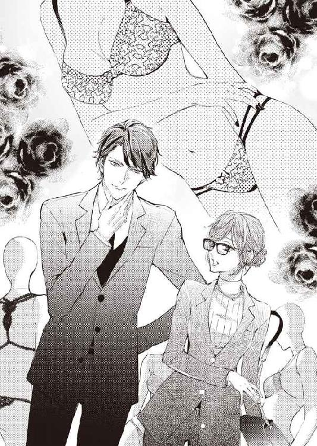

| 恋愛遺伝子欠乏症 特効薬は御曹司！？ (蜜夢文庫) | |
| ひらび久美 & 蜂不二子 | |
| (2016) | |
この作品は縦書きでレイアウトされています。
また、ご覧になる機種により、表示の差異が認められることがあります。
一部の漢字が簡略字で表示されていることがあります。
イラスト／蜂不二子
第一章 お守りメガネ
「噓ぉっ、どうしよう！」
明るいオフィスの中でパソコンに向かっていた坪井亜莉沙は、後ろの席から聞こえてきた悲鳴のような声に反応して、さっと振り向いた。
「仲野さん、どうしたんですか？」
総務部の派遣社員、仲野美樹が焦った表情で、エアクッションで包んだ四角いケースを差し出した。
「さっきのバイク便の封筒に、ＣＤ---Ｒを入れ忘れちゃったんですぅ！」
亜莉沙は弾かれたように立ち上がった。
「貸してくださいっ。追いかければきっと間に合います！」
言うやいなや、美樹の手からＣＤ---Ｒケースを素早く抜き取り、オフィスのドアから飛び出した。エレベーターホールまで走って、下ボタンを押しながら階数表示を見上げたが、エレベーターはまだ十一階にいる。
「階段を使った方が早そう」
亜莉沙はホール横の屋内非常階段のドアを勢いよく開け、パンプスの音を響かせながら、三階から一気に駆け下りる。
（絶対にあのバイク便に乗せないと、印刷に間に合わないんだってばっ）
亜莉沙は必死の思いでビルのエントランスから飛び出した。道路脇に、鮮やかなオレンジ色の荷箱を積んだバイクを見つけて、今まさに発車しようとしていたドライバーの腕に飛びつく。
「うわあっ」
ヘルメット越しに、ドライバーの驚いた顔が見える。
「す、すみませんっ。これっ、入れ忘れちゃったんですっ」
亜莉沙は息を切らしながらＣＤ---Ｒを差し出した。ドライバーは瞬時に不機嫌そうな表情になり、バイクから降りて荷箱を開け、ついさっき集荷したばかりの分厚い封筒を取り出した。
「急いでるんですけどねぇ」
ドライバーにチクリと言われたが、亜莉沙は聞き流して、封筒のガムテープを慎重に剝がす。
「申し訳ありません。すぐに済ませますから」
その言葉通り、ＣＤ---Ｒを手早く封筒に入れてガムテープを元に戻した。
「よろしくお願いします」
ドライバーは封筒を受け取って荷箱に戻すと、無愛想な声で言う。
「今度からはしっかり中身を確認してから出してくださいよ」
「お手数をおかけしました」
亜莉沙が頭を下げて再び上げたときには、もうバイクは走り出していた。
「ふぅ。間に合ってよかった」
額の汗を拭ってくるりと方向転換した。直後、ガンと鈍い音がして顔面に激しい衝撃が走る。
「いったぁっ！」
目の前がチカチカして、まるで星が飛び回っているみたいだ。瞬きを繰り返してどうにか正常な視界を取り戻すと、自分が街灯の銀色の支柱に激突したことに気づいた。夢中で飛び出してきたから、どこに立っていたのか忘れていたのだ。
「なんでこんなところに街灯が......」
ブツブツ言いながらメガネを外し、おでこから鼻梁にかけて痛む部分を撫でた。顔面を見事に強打したせいか、地味なメガネのフレームが鼻当てのところで無残にもひしゃげ、ファーストフード店のロゴのようなＭの形になっている。
「ああ......」
亜莉沙の口から悲鳴のようなため息が漏れた。
（私の大切な仮面がぁ......）
あのことがあってから六年、文字通り肌身離さず使ってきたメガネ。いわゆる経年劣化もあるのかもしれない。
とはいえ、この六年間ずっと亜莉沙を守ってきてくれたメガネがないのは、やはり不安だ。
「昼休みに新しいのを買いに行こう......」
亜莉沙は落胆した声でつぶやきながら、ひしゃげたメガネをかけ直した。
「局さぁん、間に合いましたぁ？」
亜莉沙が総務部のフロアに入って自分のデスクに戻ると、美樹が椅子に座ったまま振り返って声をかけてきた。亜莉沙は、影のニックネーム〝局さん〟の由来のひとつになったメガネを人差し指で押し上げながら答える。
「間に合いましたよ。今度からはしっかり中身を確認してから出してって、バイク便のお兄さんに怒られちゃいましたけど」
「すみませーん。プチプチに包んでたら、入れるのを忘れちゃってぇ」
そう言った美樹が、今にもずり落ちそうな亜莉沙のメガネに気づいた。
「局さん、そのメガネ、どうしちゃったんですかぁ？」
「ぶつけたんです。仲野さんはもう仕事に戻っていいですよ」
「はぁい」
美樹が間延びした声で言ってデスクに向き直った。亜莉沙がため息をついて椅子に座ると、隣の席の桜田佳奈子が、キャスター付きの椅子を座ったまま転がして、亜莉沙に並んだ。
「お疲れ。それにしても相変わらずやってくれるね、仲野さん。ＣＤ---Ｒがないと、セミナー用テキストに高解像度のキレイな画像を入れてもらえないじゃないのねぇ」
佳奈子と亜莉沙は、ここ、株式会社サステイナブル・パワー・ジャパンに新卒で採用され、ともに入社三年目に入った同期だ。風力、太陽光、水力などの再生可能エネルギー関連の機器やソフトウェアの開発や製造、販売を行うこの企業で、文系出身の二人はいわゆる一般職として働いている。
「ところで、アリちゃん、そのメガネいったいどうしたの？」
佳奈子を始め、同期は皆、亜莉沙のことを〝アリちゃん〟と呼ぶ。裏のニックネームで呼ぶのは美樹くらいのものだ。
「やっぱりわかる？ 変かな？」
左右のレンズの間のブリッジがへこんだせいで、全体がＭの字を形成しているメガネは、幅が広がってしまっていて、どうしたってずり落ちてしまう。
一生懸命メガネを正しいポジションに据えようとする亜莉沙に、佳奈子が呆れたように言う。
「そこまで壊れてるのに、無理してかけなくても......。コンタクト、持ってないの？」
「うん」
「メガネがないと見えないの？」
「そういうわけじゃないけど......」
「ないと落ち着かない？」
「そんなとこ」
亜莉沙は曖昧に言葉を濁した。佳奈子とは同期入社で席も隣のため、ランチを一緒に食べには行くが、プライベートなことを正直に彼女に──ほかの誰にも──話したことはなかった。
「早く昼休みにならないかなぁ......」
「あと四十分よ。がんばろ」
佳奈子の声に、亜莉沙は軽く肩を回してパソコンに向き直った。
十二時。待ち望んだランチタイムになるやいなや、亜莉沙はデスクの下からバッグを引っ張り出し、肩にかけて立ち上がった。
「私、メガネ屋さんに行ってくるね」
まだパソコン画面を睨んでいた佳奈子が、驚いた表情で亜莉沙を見上げる。
「えっ、ランチは？」
「ごめん、先に食べててくれる？」
亜莉沙はそう言って、エレベーターホールに急いだ。外に食べに出るほかの社員に混じって一階に下り、駅前にあるメガネ店を目指す。五月末の爽やかな空気の中、昼時で人通りの多い道を足早に歩いてメガネ店に着くと、自動ドアから中に入った。
「いらっしゃいませ」
応対した笑顔の女性店員に、亜莉沙はおずおずと言う。
「あのぅ、すみません。私に一番似合わないメガネが欲しいんですが......」
「はい？」
「十年前のデザインでもいいんです。一番売れてなくて、ダサいの、ありませんか？」
三十歳くらいのその店員は、一瞬呆気にとられたような表情をしたが、すぐに営業スマイルを顔に貼り付けた。
「えっと、当店ではベーシックなメガネのほか、これから夏に向けて〝透け感〟のある涼しげなものなど、人気のデザインを中心にご用意しています。トレンドを意識した売れ筋商品や......」
店員の言葉に亜莉沙は小さく肩を落とした。そりゃそうだ。普通、わざわざ売れないダサいメガネなど扱わないだろう。
「じゃあ、私に似合いそうなメガネはどんなのでしょう？」
亜莉沙の言葉にホッとしたのか、店員が慣れた調子で話し始めた。
「そうですね、お客様のお顔の場合、縦幅が狭い細フレームで、明るい肌色に合わせて、柔らかなカラーをお選びになるとお似合いになるかと思いますよ」
「それじゃ、この太いフレームのをください」
亜莉沙は展示されている黒いフレームのメガネを指さした。
「え」
亜莉沙が勧められたものと真逆のデザインのメガネを示したので、さすがの店員の営業スマイルも崩れた。
「これをください」
亜莉沙が今度は少し強い口調で言うと、店員は気持ちを切り替えようとしたのか、一度瞬きをしてから言った。
「では、視力検査を......」
亜莉沙は店員の言葉を遮る。
「両眼一・〇でしっかり見えますので、度は入れていただかなくて結構です。今すぐ使いたいので、このままください」
そうして半ば強引に、亜莉沙は自分に似合わないメガネを買ったのだった。
第二章 局さんの仮面
「どうしよう、もう五時半なのにデータ入力が終わらなーい。局さぁん」
終業時間間際に美樹の甘えた声が飛んできて、亜莉沙は笑顔を作って振り向いた。
「どこまで終わりました？」
「サ行までです」
派遣会社との取り決めで、美樹には基本的に残業をさせないことになっている。
「わかりました。できたファイルを共有フォルダに保存してください。後はやっておきます」
「わあ、さすが局さん！ ありがとうございますぅ」
二歳しか年下でないはずなのに、美樹はパーマをかけた明るい茶髪のせいか、その話し方のせいか、亜莉沙よりもずいぶん若く見える。
（おまけに堂々と私を〝局さん〟って呼ぶんだから）
亜莉沙は共有フォルダから目当ての美樹のファイルを探し出し、クリックして開いた。それから、美樹から受け取った、再生可能エネルギー関連の企業名と事業概要が一覧になった紙の束を、データホルダーに挟む。
「ほんと、アリちゃんは〝総務部のノーと言わない何でも屋さん〟だね」
佳奈子が呆れた口調で亜莉沙に声をかけた。
「わたくしでお役に立てますなら、何なりとお申し付けくださいませ」
亜莉沙がわざとらしいほど丁寧な口調で言うと、佳奈子が小さく笑い声を立てた。
「手伝ってあげたいけど、こっちはこっちで伝票入力の仕事があるのよねぇ」
ため息をついて佳奈子がカタカタとパソコンのキーボードを叩き始めたので、亜莉沙も仕事に戻った。
やがて一人、また一人と社員が帰り始め、ついには佳奈子と亜莉沙の二人だけになった。昨今の節電志向で、オフィスの半分の明かりが落とされた中、先に仕事を終えたのは佳奈子の方だった。
「手伝おうか？」
亜莉沙の方に身を乗り出して佳奈子が言った。
「いいよ、もうヤ行が終わったから。さすがにラ行以降の企業は少ないし」
「そう？」
「うん、そんなにかからないと思う」
「じゃ、遠慮なく先に帰らせてもらうね」
そう言って佳奈子はデスクの上を片付け始めたが、ふと壁の時計を見上げてつぶやいた。
「この時間だったら亮太郎くんも終わりそうかな。久々に一緒にご飯でも食べに行こうっと」
「谷崎くんとは相変わらず仲良しなのね」
谷崎亮太郎は同期入社だが、配属先は総合建設部資材課だ。入社直後の飲み会で、体育会系の彼が、お姉さんキャラで明るい佳奈子に一目惚れしたらしく、佳奈子は何度かデートに誘われ、押しの強さに負けた形でオッケーして付き合い始めた。
「違う部署だからかな。会えそうで会えない、この適度な距離感がいいのかも」
そう言って佳奈子が小さく笑うので、亜莉沙も笑みを浮かべる。
「最初は押しの強い彼に迷惑そうにしてたのにね」
「えへへ。でも、追いかけられるのってなんだか気分がいいわよ。愛されてるって感じがして」
「そう？」
きっと〝追いかけられる〟のと〝追われる〟のとでは違うんだろうな、と亜莉沙が心の中で思っていると、佳奈子が真顔になって言う。
「アリちゃんの大阪の彼氏は追いかけてくれるタイプじゃないの？」
「え、あ、そうかもね......」
亜莉沙の曖昧な口調を気にとめることなく、佳奈子が続ける。
「そんなにのんびりしていて、よく二年も遠恋が続くね。結婚の話とか出ないの？」
合コンに誘われるのを防ぐため、亜莉沙は入社以来、〝遠距離恋愛中の彼氏が大阪にいる〟と噓をついてきた。あまり突っ込んで訊いてほしくないんだけどな、と思いながら、亜莉沙は答える。
「ないなぁ」
「次はいつ会うの？」
「どうかな、約束はしてない」
「噓、ゴールデンウィークも会ってないんでしょ？」
佳奈子が信じられない、と言うように大きく目を見開いた。
「うん......」
噓でもいいから会ったことにしておけばよかったかな。そう思ったとき、佳奈子が言った。
「私なら、そんなに会えないなんて耐えられないな。アリちゃん、永すぎる春にならないように気をつけなよ。また飲みに行ったとき、詳しく聞かせて」
「あ、う、うん」
「それじゃ、お先。また月曜日にねー」
そう言うと、佳奈子はバッグを肩にかけ、スマホを取り出して耳に当てながら、軽やかな足取りでオフィスを出て行く。亜莉沙がパソコンに向き直ったとき、佳奈子が誰かに会ったのだろう、彼女の「お疲れ様です」という声が小さく聞こえてきた。
その声が消えると、部屋の中には亜莉沙がキーボードを打つ音と、パソコンのファンの音しかしなくなった。この本社ビルの上層階を占める研究開発部、電力インフラ事業部、販売サポート部、企画営業部などには、まだ人が多く残っているはずだが、給与計算業務や採用業務などのない時期の総務部では、午後七時半を過ぎればほとんどの社員が帰ってしまう。
最後の企業のデータを打ち込み、亜莉沙は大きく伸びをした。
「んーっ、終わったぁ。見直しは月曜の朝、早めに来てやろうかな......」
そうつぶやいたとき、誰もいないはずの背後から「手伝おうか？」と声が聞こえてきて、亜莉沙は飛び上がらんばかりに驚いた。振り向くと、オフィスの入り口の戸柱にもたれて一人の男性が立っている。意志の強そうな切れ長の目が印象的な、整った顔立ちの三十歳くらいの男性で、すらりとした長身に細身の黒のスーツがよく似合っていた。
総務部総務課の亜莉沙は、同じ総務部でも人事課の社員ほど、社内の人間を把握していない。見たことがない顔なので、ものすごく上の役職の人間か、途中採用の新入社員かもしれない。年齢からすれば後者かな、と思いながら、亜莉沙は丁寧な口調で訊いた。
「失礼ですが、どちら様でしょう？」
男性は大股でオフィスを歩いてきて、亜莉沙の隣のデスクに腰を下ろした。長い脚を気だるそうに、まるでもてあましているかのように組んで、亜莉沙を見る。
「週明けの月曜付けで大阪支社から転勤してくる斉藤航だ。局さんってキミのことだよね？」
斉藤航と名乗ったその男性の口調に、温和な笑顔をモットーにしている亜莉沙も、さすがに少々引っかかるものを感じた。
「局ではなく坪井です」
「局さんだろ？ 総務部長に〝東京本社で文句を言わずに頼み事を聞いてくれるのは誰か〟と訊いたら、局さんだと教えられた」
確かにみんなの役に立ちたいとは思っているけれど、と亜莉沙はため息を呑み込んで言う。
「皆さんがスムーズにお仕事を進められるよう最大限に力を尽くすのが、私の仕事だとは思っています」
「それなら、局さんにぜひお願いしたいことがある」
「それでも」と亜莉沙は首を振って続ける。「初対面で私を〝局さん〟と呼ぶ方はいません」
「そう？ 真っ黒な髪をいつもきっちりと団子にまとめ、メガネをかけて、地味なパンツスーツにローヒールのパンプスを合わせている。見た目は絵に描いたようなお局様そのものだけど、無理難題にもノーとは言わない頼れる社員だから、敬愛の意をこめて裏では〝局さん〟と呼ばれている、と聞いたけど」
「坪井です」
「局が嫌なら、リリーと呼ぼうか」
航の突然の言葉に、亜莉沙の心臓がドクリと打った。
（ど、どうして初対面のこの人が、私のミドルネームを知ってるの？）
亜莉沙は母方の祖父がオーストラリア人で、生まれたときにリリーとミドルネームを付けられ、亜莉沙自身も家族や友人からリリーと呼ばれることを好んでいた。だが、それも六年前までの話だ。高校から付属大学に進学した直後、あのことがあってからはリリーという呼び名を封印し、彼女が〝リリー〟であることを知っている人がいない場所を求めて、オーストラリアの大学に編入した。帰国後は両親の住む千葉ではなく東京で就職し、〝アリちゃん〟と呼ばれるようになったので、家族以外で彼女を〝リリー〟と呼ぶ人はいない。
（さすがに履歴書には戸籍通りの名前を書いたから、それを見たのかもしれないけど......。でも、履歴書は簡単に覗き見たりできないはず。この人、どういう人？ 私の何を知っているの......？）
亜莉沙は湧き上がってきた不安と恐怖を抑えつけようと、努めて冷静な声を出す。
「斉藤さんは週明けの月曜付けでこちらに転勤になるとおっしゃいましたね。つまり三日後です。今日こんな時間にいらしたご用件は何です？ それにどうして私のミドルネームをご存じなんですか？」
亜莉沙の問いかけに、航が口元を緩めて問いで返す。
「キミはもちろんうちの社の社長の名前を知ってるね？」
「はい、赤城太輔社長です」
「で、副社長は赤城社長のいとこの斉藤祐司だ」
そこまで聞いて亜莉沙はハッとした。その様子を見て航が満足げにうなずく。
「その副社長の息子が俺。あ、ちなみに次男だから」
「そのようですね。お名前をうかがった時点で気づくべきでした」
人事課から書類が回っていたのを思い出した。東京本社の現在の企画営業部長が埼玉営業センターのセンター長に就任し、代わりに大阪支社から新しく企画営業部長がやってくることになっていた。
「ま、珍しい名字じゃないからな」
航がため息をついて続ける。
「俺としては大阪支社で働き続けたかったんだけど、親父に本社に呼ばれてさ」
「つまり栄転ってことですよね？」
亜莉沙の言葉に、航は苦い表情になった。
「そう見えるかもしれないけど、俺にしてみれば人生の左遷だよ」
「はい？」
意味がわからず亜莉沙が眉を寄せると、航が軽く首を振った。
「あと四ヵ月で三十一歳になるのに、親父は俺が独身なのが気に食わないらしい」
今は三十歳代でも独身の男性は増えているが、そこは家庭の方針だとか事情だとかがあるのだろう。そう思って亜莉沙は黙って耳を傾ける。
「親父も兄も三十歳で結婚しているから、俺にも四ヵ月以内に身を固めろってことで、本社に呼んで見合いだの何だのさせるつもりらしい」
不満げな彼の言葉に、亜莉沙は事務的に答える。
「では、今日こうして来られたのは、花嫁候補を探すために、うちの社の女性についてお知りになりたいからですか？」
「本社の女性について知りたいというのは当たっている。とはいえ、俺には結婚する気はさらさらない。だから、形だけ俺の恋人になり、俺の遊びを見逃してくれる──さらには俺が遊んでいるときに親父たちにバレないようにアリバイを作ってくれる──女性を教えてほしい」
航の言葉に、亜莉沙は心底呆れて首を振った。
「残念ですが、私には心当たりはありません」
「なぜ？ お局様ってのは社内で誰と誰が付き合っているかとか、誰が遊び人で誰が独り身かとか、把握しているもんだろう？」
亜莉沙は顔の前に人差し指を立てた。
「そもそも、まず第一に、私はお局様ではありません」
そう言って指を二本に増やす。
「第二に、私は社員の恋愛事情を把握してなどいません。よって、斉藤部長のご要望にはお応えいたしかねます」
きっぱり言えば諦めてくれるかと思ったのに、航は濃い茶色の目にいたずらっぽい光を浮かべて亜莉沙をじっと見た。
「ところで、大阪の恋人は元気？」
「は？」
突然何を言い出すのだろう。亜莉沙が怪訝そうにすると、航が意味ありげに笑いながらぞんざいな口調で続ける。
「局さんの仕事が終わるまで待ってたときに、あんたたちの会話が偶然聞こえてきたんだけど、局さんには大阪に恋人がいるんだってね。その人、大阪のどこに住んでるの？ 俺、もしかしたらどこかで会ってたりしてね。仕事は何をしてる人？」
航にニヤニヤ笑いながら見下ろされて、亜莉沙はたじたじとなる。
「そ、そんなこと、斉藤部長には関係ないと思います」
「へぇ」
航が笑みを大きくして、さらに亜莉沙に顔を近づけた。
「客観的に聞いていると、あれ、いかにも噓っぽいよなぁ。遠恋の会えない彼氏なんて、モテない言い訳、彼氏がいない言い訳だろ？」
「べっ、別にそんなつもりじゃ」
「じゃ、どういうつもり？」
「ご、合コンとかに誘われるのが嫌だから......」
そこまで言って亜莉沙はハッと口をつぐんだ。自ら噓だとバラしてしまったようなものだ。下唇を嚙む亜莉沙に航が言う。
「ほら、やっぱり噓だ。あんた、そんなくだらない噓で同僚を騙して良心が痛まないわけ？」
〝彼氏がいない言い訳〟にしているわけではないが、周囲の人に噓をついているのは確かだ。初対面の航に見抜かれたことに亜莉沙は内心うろたえたが、メガネを持ち上げ、深呼吸して気持ちを落ち着かせた。
「斉藤部長がお気になさることではないと思います」
「ちょうど良くない？」
航が口角を上げてニヤリとするので、亜莉沙は嫌な予感を覚えた。
「な、何がですか」
「あんたの恋人、大阪で働いてることになってるんだろ？ しかも今聞いた感じじゃ、どこで働いているとか詳しい設定はしてなさそうだ。俺、大阪から転勤して来るし、あんたの恋人になってやるよ」
「結構です」
亜莉沙はぴしゃりと言った。こんな上から目線で横柄かつ強引な男、上司で御曹司だとしても、絶対にお断りだ。
航はなぜ断られるのかわからない、といった様子で首を傾げた。
「どうしてだ？ あんたは噓を本当のことにできるんだぞ？」
「私は別に噓を本当のことにしなくても構いません。それに、斉藤部長の提案は、噓に噓を重ねるだけのことだと思います。部長はご自分の性格にお似合いの、秘書課の華やかな方にお願いすればいいじゃないですか」
亜莉沙が皮肉をこめて言うと、航が強い眼差しで彼女をじっと見た。
「それじゃダメだ。俺はあんたがいい」
航の言葉に、亜莉沙の鼓動が不覚にも乱れた。
「は？」
「昼間、挨拶がてら秘書課も覗いてみたけど、俺の顔を見て肩書きを聞いたとたん、みんな媚びるような笑顔になるんだ。玉の輿を狙ってるってのがミエミエだよ。俺が欲しいのは、俺が遊んでも文句を言わない形だけの恋人。彼女たちならいずれ本物の恋人になろうとする。そういうのは困るんだ。あんたは真面目そうで、社内でも信頼されている。親父たちも恋人として認めるだろう。それに」
航がわずかに目を細めた。その思わせぶりな表情に、亜莉沙はつい続きを促してしまう。
「それに、何なんです？」
「これが一番重要なんだ。あんたには恋愛遺伝子が欠けている」
その言葉に亜莉沙は目を見開いた。
「れ、恋愛遺伝子？」
「だってそうだろ。その色気のないダボッとしたパンツスーツ。最低限の薄化粧。今どきありえないくらい固くまとめた真っ黒な団子ヘア。おまけに遠恋の彼氏をでっち上げているときた。診断結果は恋愛遺伝子欠乏症だ」
普通の人なら「失礼だ」と言って怒り出すだろう。だが、亜莉沙は恋愛対象にならないようにあえてこのスタイルを貫いてきたのだ。怒る理由などない。
「なかなかの観察眼ですね。斉藤部長が企画営業部長にふさわしい方だということは、よくわかりました。ですが、お引き受けいたしかねます」
もう男性とはかかわれないし──かかわらないと決めたのだ。亜莉沙はそっけなく言って、パソコンをシャットダウンしようとマウスに手を乗せた。そのすぐ横に航が片手をついて、覆い被さるように亜莉沙を見下ろす。
「なあ」
その威圧的な態度に、亜莉沙は背筋を冷たいものが這い上がるのを感じた。鼓動が速くなり、額にじわりと冷や汗が浮かぶ。
「あんたは無理難題にもノーとは言わない頼れる局さんなんだろ？ 頼むよ」
とても頼んでいるように思えない口調と態度に、亜莉沙はふいっと顔を背けた。その耳に航が口を近づけて言う。
「お願いだ、リリー」
その瞬間、亜莉沙の全身から血の気が引いた。
「やめて......ください」
亜莉沙は航から逃れるように、座ったままキャスター付きの椅子を横に滑らせた。彼女の蒼白な顔を見て、航が心配そうに近づいてくる。
「貧血か？ 大丈夫？」
「はい......」
亜莉沙はそれ以上近づかないで、というように右手を上げて航の動きを制し、左手を胸に当てて深呼吸を繰り返した。速まっていた鼓動が徐々に落ち着き始め、亜莉沙はもう一度深呼吸して、額に浮いた嫌な汗を拭って顔を上げた。
「失礼しました。もう大丈夫です」
航が気遣わしげに眉を寄せる。
「まだ顔色が悪い。心配だな、家まで車で送ろう」
「いいえ、結構です」
亜莉沙はデスクの下からバッグを取り出して立ち上がったが、急に立ち上がったせいで、ふらりとよろけてしまった。
「危ないっ」
抱き留めようとするように広い胸が迫ってきて、亜莉沙は恐怖心から悲鳴を上げそうになった。それを、バッグを顔に押し当て、かろうじてこらえる。
「す、すみません」
ウエストを支えてくれる手から逃れようと身をよじらせたとき、顔の前のバッグを取り上げられた。亜莉沙を見つめているのは、心配そうに細められた優しい瞳。今までの〝俺様御曹司〟な態度からは、想像もつかない眼差しだった。
「人の親切は素直に受け取ること」
それだけ言って航が歩き出したので、バッグを取り上げられてしまった亜莉沙は、彼に続くほかなかった。
第三章 恋人契約
亜莉沙の前を歩いていた航は、地下の社員駐車場で、黒の高級外国車の左側のドアを開けて、亜莉沙に乗るよう手で示した。外車だが右ハンドルなので、そちらが助手席なのだ。
（ふうん、意外に紳士的。この外見でこんなに紳士的なら、女性はみんな彼の本性に気づかないでしょうね）
そんなことを思いながら亜莉沙が乗り込んだ車内は、黒を基調としたシックなインテリアで統一されていて、座席も広く座り心地もいい。
「ほらよ」
運転席に乗り込んだ航が、亜莉沙にバッグを渡した。
「お手数をおかけします」
そう言いつつも、バッグを取り上げられたせいで半ば強制的に送られる羽目になったのだから、亜莉沙は本心では納得しておらず頰を膨らませた。
「履歴書と住所変わってない？」
シートベルトを締めながら航が訊くので、亜莉沙はうなずいた。
「私の履歴書をご覧になったのはどうしてです？」
航がアクセルを踏んで車が滑らかに動き出したとき、亜莉沙は尋ねた。
「ちょっとした好奇心だよ」
「好奇心で履歴書を覗かれては困ります」
亜莉沙はチクリと言ったつもりだったが、航は澄ました顔でハンドルを切りながら答える。
「新しい職場にどういう人間がいるのか把握しておくのは、当然のことじゃないか？」
その言葉に、亜莉沙は一理ある、と思った。なんと言っても彼は亜莉沙のような一社員ではなく、企画営業部長である。
「失礼しました」
他人行儀な亜莉沙の口調に、航が苦笑する。
「別にいいよ。ところで、さっきの話、本気で考えてもらえないかな？」
「形だけの恋人、ですか？」
「そう」
男性にはかかわりたくない、というのが亜莉沙の正直な気持ちだった。でも、彼に指摘されたように、同僚に噓をついている──そしてこれからもつき続けることになる──苦い気持ちを抱え、良心が痛んでいるのも事実だ。形だけでも恋人がいれば、罪悪感も和らぐかもしれない。
「本当に形だけでいいんですか？」
「ああ。あんたの望まないことは何もしないよ」
航の言葉に、高校生のときに初めてできた彼氏の言葉が重なる。
〝リリーの嫌がることは何もしないよ〟。
ぞくりとして亜莉沙は身震いした。
（六年も前のことよ。もう忘れなきゃ）
亜莉沙は一度目を閉じて深呼吸をしてから、運転席を見た。
「じゃあ、それを明記した契約書を作ってもらえますか？」
「契約書？」
彼が怪訝そうな口調で言った。
「はい。肉体関係はいっさいなし。必要な場合、必要な場所で恋人のフリをするだけ」
航が「ふむ」と考え込むような声を出した。
「斉藤部長がいつどこで誰と過ごしても、お望み通り、私は文句を言いませんし、詮索もしません。おっしゃるように形だけの恋人で結構ですから」
「あんたはそれで欲求不満にならないのか？」
航の歯に衣着せぬ問いかけに、亜莉沙は小さく笑みをこぼした。
「はい。月並みなセリフですけど、仕事が恋人だと思っています」
「ふぅん」
航が意味ありげなつぶやき声を漏らした。
「何ですか？」
「いや、さっきの様子と今の言葉から、あんたは男性恐怖症なのかと思ったんだ」
亜莉沙は目を見開いた。この人は口調は荒っぽいが、鋭い観察眼を持っているのかもしれない。
亜莉沙が何も言わないでいると、航が軽い調子で言う。
「ま、俺みたいなイイ男に欲求を感じないなんて変わった女だな、と思っただけだ。あんたの好みのタイプは、きっと俺とは正反対なんだろうな」
そう言って小さく笑うと、航は片手でオーディオを操作した。流れ出したのは、落ち着いた曲調の洋楽。彼の嵐のような性格からは想像もつかない、穏やかで優しい女性の声が歌っていた。
翌土曜日。亜莉沙は朝九時過ぎにベッドから起き出し、クロワッサンとカフェオレで朝食をとった後、ベッドに寝転がりながら旅番組を見ていた。休日は家に引きこもると決めている亜莉沙の、土曜朝の日課だ。
「来週から六月だもんね～。出かけるなら梅雨入り前の今でしょって感じ？」
大げさなコメントで川下りを勧めるコメンテーターを見て、亜莉沙は含み笑いをした。こうして一人でテレビ番組を見ているだけでも、今の亜莉沙は十分楽しい。
コーヒーのお代わりを注ごうと立ち上がったとき、ローテーブルの上のスマートフォンがメールの着信を知らせた。テレビ画面を見ると、時刻表示は一〇時五〇分だ。
（土曜日の朝から誰だろう）
首を傾げながらスマホを取り上げ、亜莉沙は目を見開いた。昨日メールアドレスと電話番号を交換したばかりの相手からだ。
「えっ、なんで斉藤部長から？」
開いたメールには、そっけなくたった一行、〝十分後に行く〟とある。
「十分？ 十分ってどういうこと？」
うちに十分後に来るということだろうか？ おろおろしているうちに、スマホの画面の時刻表示が一分進んだ。
（万が一うちに来られてもいいように、とりあえずメガネ！）
真っ先にメガネをかけたが、そうすると髪を結いにくいことに気づいた。あわててメガネを外し、ふわふわと柔らかな髪を大急ぎでまとめてキツイお団子を作っている最中、インターホンが鳴った。アメピンをくわえたままモニタを見ると、航が腕を組んで立っている。応答ボタンを押し、髪をピンで固定しながら「はい」と応じると、航の大きな声が返ってきた。
「おい、契約書を持ってきてやったぞ」
（なんだ、それだけの用事だったのね）
亜莉沙はホッと息を吐いて言う。
「わざわざありがとうございます。郵便受けに入れておいてもらえますか？」
けっして写りがいいとは言えないモニタだが、航が露骨に嫌な顔をしたのがわかった。
「わざわざ持ってきてやったのに、あんたはコーヒーの一杯も出さずに俺を追い返す気か」
「私、月曜日で構いませんって言いませんでした？」
昨日、車を降りる間際に亜莉沙がもう一度契約書のことを持ち出すと、「ちゃんと作ってやるから心配するな」と彼は言ってくれた。だが、まさか今日、しかもこんなふうに直接持って来られるとは思ってもみなかった。
「会社でこんなもの渡せるか。誰かに見られたらどうするんだ」
（それもそうね）
亜莉沙はため息を呑み込んで、オートロックの解除ボタンを押した。航が六階に上がってくる前に、仮面を付けなければ。
亜莉沙が必要最低限のメイクをしていると、途中で玄関のチャイムが鳴った。
「ちょっと待ってください！」
玄関に向かって大声で言い、急いでメイクを終えて、メガネをかけた。そうして開けたドアの向こうには、仁王立ちで腕を組んでいる航がいる。
「遅い」
彼が不機嫌な口調で言った。
「だって、そんな、わざわざ持ってくるなんて思わないじゃないですか！ 仮にも女性の一人暮らしなんですよ、こんな朝早くに......」
そこまで言って、亜莉沙は口をつぐんだ。
「午前十一時はけっして朝早いとは思わないが。それに十分前に予告した」
「確かに今は昼前ですが、予告するならもう少し早めに連絡してください」
「秘書なら十分もあれば充分だぞ」
「私はあなたの秘書ではありません」
亜莉沙がきっぱり言うと、航が軽く肩をすくめた。
「とにかく契約書は持ってきてやった。約束通りのことが書いてある」
渡されたＡ４サイズの茶封筒から、亜莉沙はホチキスで綴じられた書類を取り出し、ざっと目を通した。昨日送ってもらう途中で取り決めた通り、彼が三十一歳になるまでの四ヵ月間、恋人のフリをする。その過程で必要となった経費はすべて斉藤航持ちとする。肉体関係を持たない代わりに、彼がいつどこで誰と何をしようと詮索も干渉もしない......。
亜莉沙の望み通りのことが書かれていた。
「完璧です」
亜莉沙が顔を上げると、航がニッと笑った。
「それはよかった。これ以上双方の利害が一致する関係ってないだろうな。じゃあ、コーヒーでもごちそうしてもらおうかな」
航に言われて、亜莉沙は彼を制止するようにあわてて両手を挙げた。
「うちでは困ります！」
「なんだよ、せっかく持ってきてやったのに、あんたは〝お・も・て・な・し〟のひとつもしないつもりなのか？」
航の口調にはほんの少し冗談が感じられた。だが、彼にずいっと見下ろされた瞬間、亜莉沙の心臓がドクンと嫌な音を立てた。自分の家という狭い空間。亜莉沙より二十センチは背が高く力の強そうな彼。救いを求めて声を上げても、近隣の誰かの耳に届くかどうかわからない。
亜莉沙の額にじわりと嫌な汗が浮かび、口が滑らかに動かなくなった。
「あの、そ、そういうわけでは......。で、でも、突然来られても、ほ、ほら、女性の部屋ですよ、い、いろいろ準備とか......」
「恋愛遺伝子欠乏症の局さんのくせに、何うろたえてるんだよ」
「そ、そうですけど、だ、だからこそ......」
（ドアを開けるんじゃなかった。意地でもポストに入れておいてもらえばよかった......）
今にも泣き出しそうな、亜莉沙の不安と恐怖の入り交じった表情を見て、航が大きく息を吐き出した。
「確かに、あんたは秘書じゃないんだから、もう少し早く連絡を入れるべきだったかもしれないな。外で待っているから出かける準備をしてほしい。どこかのカフェに行くから、コーヒーに付き合ってくれ。詳しい打ち合わせもしたいから」
そう言うと、航は亜莉沙に背を向けてドアを出た。ドアが閉まる音を聞き、亜莉沙の緊張が解ける。
（外でなら......人目のあるところでなら大丈夫よね......）
体の緊張は解けても、鼓動は速まったままだ。亜莉沙は大きく息を吸って細く長く吐き出し、額の汗を拭った。それからスウェットのルームウェアを脱ぎ、いつもと同じように、ワンサイズ大きなパンツスーツに着替えた。これは亜莉沙の鎧だった。ハーフの母親譲りのふくよかで形のいい胸、引き締まったウエスト、長い脚......そのいずれもが目立たないように、チャコールグレーのスーツの中に隠す。
亜莉沙が通勤バッグを肩にかけてドアを開けたとたん、航が呆れたように言った。
「あのな、今日は休日だろう。なんだって今から会社に向かうような格好をしているんだ」
そう言う彼は、ホワイトシャツにチノパンというラフな格好だ。
「私にはこれが一番しっくり来るんです」
「そうは見えないけどな。サイズも合ってなさそうだし。普通、あんたくらいの歳の女ってのは、スタイルの良さを見せつけたり、自分のボディラインを強調したりするような服を着ないか？」
「世の中には、斉藤部長が考える普通という枠に収まらない女性もいるんです」
亜莉沙が言うと、彼は興味なさそうに肩をすくめた。
「まあいい。とりあえずどこか店に入って詳しい打ち合わせをしよう。どうせならランチでも食べながらにしようか。リクエストある？」
「いいえ、特に。部長にお任せします」
「あのな、俺は昨日大阪から久々に東京に戻って来たばかりなんだ。よさそうな店があったら教えてくれ」
航が首を振りながら、来客用駐車場に駐まっている昨日と同じ黒の自動車を示した。
「車で来られたんですね」
「車が好きなんだ。一人になれるから」
愛車なのだろう、航がその外車を眺めて微笑んだ。その笑みはクールな外見からは想像もつかないほど楽しげなものだった。
（こんな嫌味のない笑い方もするのね）
とはいえ、恋人のフリをするのなら彼のことをもっと知っておかなければいけない。
車で行けるレストランということで、亜莉沙は自宅からそう遠くないこじゃれたイタリアンレストランの名前を挙げた。以前、同期の女子社員との食事会のために亜莉沙が調べて、実際に食事をした店だ。
「どこにあるんだよ、それ。都内を走るのは三年ぶりなんだよ」
ブツブツ言い訳するようにしながら、航がナビに従って、幹線道路から一本入ったところにあるそのレストランまで運転してくれた。
そこは出窓に花が飾られた白い外壁の店で、佳奈子は〝デートにぴったり！〟とはしゃいでいた。
店内の壁紙も外壁と同じく白色で、窓も大きく開放感があり、ライトブラウンで統一されたテーブルや椅子が明るい雰囲気のステキな店だ。
「ふうん、恋愛遺伝子欠乏症のわりにしゃれた店を知ってるな」
もういいかげん〝恋愛遺伝子欠乏症〟も聞き飽きてきたので、亜莉沙は聞き流して、案内されたテーブルに航と向かい合って座った。それぞれ好きなものをオーダーし、店員が注文を繰り返して去ってしまうと、二人の間に沈黙が流れた。
何か話した方がいいのか、何を話そうか、と迷いながら、亜莉沙がチラリと視線を向けると、テーブルに片肘をついて顎を支えていた航も、同じように亜莉沙を見た。
「えっと......」
亜莉沙は意味もなく言ってみたが、後が続かない。再び沈黙が落ちたとき、航が咳払いをして言った。
「昨日も言ったけど、俺たちは二年前に出会ったってことにしよう」
「あ、はい」
「局さんたちが新人研修を受けているときに、俺はちょうど企業向けセミナーで東京に来てたんだ。そのとき会場だったホテルで偶然顔を合わせて、お互い一目惚れしたってことで......」
航の言葉を亜莉沙が遮る。
「でも、どう考えても、無理があると思いませんか？」
私に一目惚れする人なんていないと思いますよ、という意味をこめて彼を見上げた。航は人差し指で頰を搔いて言う。
「俺が実は地味子さんが好きだという設定は？」
「まあ......個人の趣味ですから、いろいろあるとは思いますが」
「周りの華やかな女性に飽き飽きしていたから、局さんがすごく新鮮に映った、とかいうのはどうだろう？」
それで通用するのかどうか考える間もなく、サラダが運ばれてきた。「とりあえず食べながら考えよう」という彼の提案に従い、亜莉沙は「いただきます」と言ってフォークを手に取った。
新鮮なレタスに赤いトマトや黄色のパプリカが彩りよく盛られていて、イタリアンドレッシングもハーブの香りが立っていておいしい。亜莉沙が久しぶりの外食を味わっていると、航が小さく笑って言う。
「局さんってものすごく味わって食べる人なんだな」
「だって、せっかく作ってくれたんですから、丁寧にいただきたいと思いませんか？」
「なるほどね。俺は仕事の合間に片手で食べられるから、ファーストフードを重宝しているんだけどな」
亜莉沙はフォークを運ぶ手を止めて航を見る。
「最初から遠距離恋愛だったとしても、お互いの好みとか、ある程度は知らないといけませんよね？」
「そうだなぁ。局さんはどんな食べ物が......いや、待て。局さんと呼ぶのもおかしいよな」
航が亜莉沙をまじまじと見る。
「局さんは友達や家族からはなんて呼ばれてるんだ？ 家族ならリリーかな？」
航の言葉に、亜莉沙は鼓動が不快なリズムを刻み始めるのを感じた。手が震えそうになるのを必死で抑えてグラスを取る。それでもグラスは小刻みに震えたが、どうにか口元に運んで数口飲み、なんとか気持ちを落ち着かせた。
「みんなからは〝アリちゃん〟と呼ばれています」
「〝アリちゃん〟？ ニックネームとしては珍しいね」
「そうですか？ 斉藤部長のことは斉藤さんと呼んで構いませんよね？」
亜莉沙の言葉に航が目を見開く。
「普通、名前で呼ぶだろ。〝航さん〟でいい」
「はあ」
そこへパスタが運ばれてきた。亜莉沙のはベーコンとドライトマトのジェノベーゼのパスタ、航のはチキンとほうれん草のクリームソースのパスタだ。
「斉藤部長、あっ......と、航さんはクリームソースなんですね。なんだか意外」
亜莉沙の言葉に航が眉を寄せる。
「悪いか。俺はこういうこってりしたクリーム系が好きなんだよ」
「こってり......ですか」
お好み焼きや焼きそばのソースでも形容するような言い回しだ。亜莉沙は〝濃厚〟とかほかに表現があると思うけど、と思いながら話を続ける。
「言葉遣いが辛辣だから、ペペロンチーノとかアラビアータとか、ピリ辛がお好みかと思いました」
「アリちゃんこそなんだよ、その緑色の。宇宙人の食べ物か？」
亜莉沙は目を見開いた。知らず知らず口元が緩み、笑みをこぼしてしまう。
「宇宙人の食べ物？ そんな形容をする人、初めてです」
航がムッとしたように言う。
「笑わなくてもいいだろう。ちょっと寄越せ。本当に人間の食い物か味見してやる」
そう言うやいなや、航が自分のフォークに亜莉沙のパスタを巻き付け、口へと運んだ。
「なんだ、この濃い香り」
そう言って「うげぇ」と舌を出す。その仕草がおかしくて、亜莉沙はくすくす笑い出してしまった。
「航さんって見た目はクールでおしゃれっぽいのに、ジェノベーゼを知らないんですね」
「知ってるっ。食べたことがないだけだ！」
怒ったように言って、赤くなった顔をごまかすように水をゴクゴク飲んでいる。
（なんか意外。ちょっとかわいいかも）
とはいえ、亜莉沙を親に〝信頼される〟〝形だけの恋人〟に仕立て上げ、自分は遊び続けるつもりなのだから、ろくでもない遊び人なのは間違いないだろう。
（適度に距離を置かなくちゃ）
亜莉沙はそっとメガネを触って、仮面の存在を確かめた。
第四章 恋人の仮面
その翌日の日曜日こそ、亜莉沙はいつも通りの平凡な休日を過ごそうと思っていた。だから、朝の八時に鳴り始めたスマホの着信音も、頭からタオルケットを被って無視していた。ようやく鳴りやんでホッとしたのも束の間、スマホは再び耳障りな電子音を鳴らし始める。
「......んもう......」
亜莉沙は眠い目をこすりながらスマホの液晶画面を見て、それが航からの着信だと知るやいなや、さらに不機嫌な気分になった。
「今日はいったい何......」
通話ボタンにタッチしてスマホを耳に当てた。
「御曹司さんは夜遊びが忙しくてまだお休みかと思っていましたけど」
亜莉沙はもともと朝が強くない。おまけに昨日は日付が変わるまでＤＶＤで洋画を観ていたので、今日は惰眠を貪るつもりだった。
〝総務部のノーと言わない何でも屋さん〟の亜莉沙にしては珍しく不機嫌な口調に対し、こちらも上から目線の遊び人御曹司にしては珍しく殊勝な言葉が返ってくる。
「朝からすまない。緊急事態だ」
「仕事上の緊急事態なら秘書にお願いしてください。局さんは休日です」
「俺に秘書はつけてもらっていない。それに何より私生活の緊急事態なんだ」
「大人なんですからそんなの自分でなんとかしてください。私はまだ寝たいんです」
亜莉沙はあくびを嚙み殺しながら言った。
「違うんだ、親父に恋人がいるなら会わせろと言われたんだよ」
その言葉に、さすがに亜莉沙の眠気も吹き飛んだ。
「何ですって？」
「さっそく見合いの手配をするとか言われたもんだから、つい〝二年越しの恋人がいる〟って言ってしまって......」
途方に暮れたような声だった。
会社でこんな声を出している人がいれば、どうにかして力になってあげたい、と普段なら思う。でも、今回は話が違う。恋人のフリをするのだ。しかも、どうやら彼の両親の前で。
（こんなに早く人前で恋人のフリをすることになるなんて......。でも、約束は約束よね。なんとか乗り切れるよう力を貸してあげなくちゃ）
亜莉沙は緊張と不安を感じながらも、努めて冷静な声を出す。
「それで、今日お会いすることになっちゃったということですか？」
「そうなんだ。すまないが、二時頃迎えに行くから、うちに来て一緒にお茶に付き合ってもらえないだろうか」
いつもの〝上から目線な口調〟が噓のように、今回は下手に出てくる。
「わかりました。ちなみにお茶ってお抹茶ってわけじゃないですよね？」
亜莉沙に茶道の心得はない。
「紅茶とケーキだ。ティータイムってやつだな」
「それならよかった」
ホッとする亜莉沙に、彼が言う。
「それはそうと、昨日みたいなパンツスーツ姿、今日はやめてくれないか？ せめてワンピースとか、もう少し俺好みっぽく見える服装にしてほしい」
〝俺好みっぽく見える〟を強調されて、亜莉沙はカチンと来た。
「私はああいう服しか持っていません。それに、航さんは地味子さんがお好きな設定じゃなかったですか？」
「......そうだったな。わかったよ」
スマホの向こうで航がため息をつき、「贅沢は言えないか」とつぶやいた。
「お嫌なら、私は降りても構いませんよ。航さん好みのワンピースの似合う女性をご自分でお探しになってください」
「俺は別にワンピースの女が好みってわけじゃない。ただ周囲の俺に対するイメージってのがあってだな......」
電話の向こうで航がブツブツ言っている。
「どうします？ 私でなくてもいいのなら、いつでも契約を終了させていただきますが」
しばしの沈黙の後、悔しさを押し殺したような声が聞こえてきた。
「お局様には逆らいませんので、どうか今日会ってください。お願いします」
しかも棒読みだ。
「局ではなく坪井です」
亜莉沙はそれだけ言って電話を切った。
約束通り二時に迎えに来た航は、ライトグレーのパンツスーツ姿の亜莉沙を見て、これみよがしにため息をついてみせた。
「彼氏の親に会うっていうのに、それはないだろう......」
不満そうな彼に、亜莉沙は澄ました顔で言う。
「お嫌でしたら、航さん好みのワンピースの似合う女性を秘書課でお探しに......」
「ああ、わかった、もういいよ」
航は手を振って亜莉沙の言葉を遮り、助手席のドアを開けた。先に乗り込んだ亜莉沙は、彼が運転席に座ったのを見て言う。
「航さんだってスーツなんだから、ちょうどいいじゃないですか」
航が不機嫌そうに亜莉沙を見た。
「あんたがスーツで来るって言うから、あんたに合わせたんだよ」
「お気遣いどうも」
そう言いながらも、亜莉沙もムッとしていた。こんなにも腹立たしい気分になったのは久しぶりだった。いつもなら適度な距離を保ち、温和な笑顔で接していれば、相手も同じように接してくれることが多い。だけど、航は亜莉沙に距離を置く隙も、笑顔になる隙も与えてくれない。
（人の弱みにつけ込んで、文句のつけ放題。そんなに言うならほかの人に頼めばいいのに。ホントに嫌な人）
航がエンジンをかけると、昨日と同じ女性の歌声が流れてきた。その柔らかな歌声を聴いているうちに、不思議と怒りが収まってくる。
（この歌手、誰だろう）
そう思いつつも、話しかけたい気分になるほど機嫌がよくなったわけではないので、亜莉沙は黙って窓の外をじっと見ていた。
航は「途中でお土産を買いましょうか」という亜莉沙の申し出に、「必要ない」とそっけなく答えた以外、口をきかなかった。その横顔は心持ち緊張しているようだ。親に偽物の恋人を紹介することに、少しは罪悪感を覚えているのだろうか。それとも、単に亜莉沙がボロを出さないか心配しているだけなのかもしれない。
航は半時間ほど車を走らせ、郊外の閑静な住宅街に入って、一軒の邸宅の前で停車した。リモコンでシャッターを開けて、車を駐車場に入れ、おもむろにハンドルに腕を乗せて言う。
「俺にはやりたいことがあるんだ。まだ結婚したくない。だから、今すぐ結婚はしないけれど安定した関係を続けているという感じで、うまく恋人役を演じてほしい」
航の眼差しはいつになく真剣だった。
（そこまでしてまだ遊びたいなんて......）
反発を覚えてしまうが、ここまで来たら覚悟を決めて付き合うしかない。
「ご期待に添えるよう努力します」
亜莉沙はそう言って車を降りた。
斉藤家は中規模上場企業の副社長の家だけあって、その辺りでもひときわ大きな洋風の邸宅だった。駐車場から玄関は近いが、玄関の前には広い庭があってキレイな花が咲き乱れている。よく手入れされているようだ。
「馴れ初めとか訊かれたら、俺が答えるから」
「お任せします」
航がチョコレート色の玄関扉を開けると、すぐに家政婦らしき女性が現れて、客間に通された。そこは亜莉沙の実家の一番広いリビングのゆうに二倍以上はあり、ソファには、会社案内のパンフレットで写真だけ見たことのある現副社長の斉藤祐司と、その夫人が座っていた。二人とも六十代半ばくらいのはずだが、豊かな黒髪のせいか姿勢がいいせいか、年齢よりもかなり若く見える。
「お招きいただきありがとうございます。航さんとお付き合いさせていただいている、総務部総務課の坪井亜莉沙と申します」
「突然すまないね」
祐司にソファを手で示され、亜莉沙は航と並んで腰を下ろした。
「まったくだよ。何も今日にしなくても」
航が不満そうに言ったが、その彼を祐司がじろりと見て言う。
「本社にいる後輩だと言っていたな。おまえ、権力を笠に着て、恋人のフリをしろとか命令したのではあるまいな？」
（ご明察！）
亜莉沙は心の中で拍手を送った。航が不機嫌そうに言う。
「そんなわけないだろ。二年前に東京本社主催のセミナーの会場で出会ったんだよ」
「どこに惹かれたんだね？」
「清楚でしっかりしたところ......」
航が答えかけたとき、祐司が遮った。
「おまえに訊いたのではない。彼女にだ」
副社長に視線を向けられ、亜莉沙の全身に緊張が走った。まるで面接試験にでも臨んでいるかのようだ。
「あの、目標に向かって情熱的に取り組む姿勢に、とても惹かれました......」
彼の目標は、仕事ではなく女性だろうけど、と思いながら、その想像に自分で頰を染めてしまう。
そんな亜莉沙の表情を見て、祐司が何度かうなずいた。
「なるほど。遠距離だったとは聞いていたが、キミは航の外見だけに惹かれたわけではなさそうだな。今まで続いていたのがその証拠かもしれないね」
祐司が目元を緩め、亜莉沙に穏やかな視線を向けた。亜莉沙の表情を誤解したようだが、そのおかげでとりあえず面接試験は合格をもらえたようだ。亜莉沙はホッと肩の力を抜いた。
そのうちに家政婦が紅茶とケーキをトレイに乗せて運んできた。イチゴののった高級そうな生クリームケーキと薫り高い紅茶がローテーブルに並べられ、場の雰囲気も心なしか柔らかくなる。
クリーム系が好きだと言っていただけあって、航はふわふわのスポンジと濃厚なクリームをおいしそうに味わっている。
（黙ってブラックコーヒーでも飲んでいれば絵になるのに）
亜莉沙が含み笑いを押し殺していると、祐司が航に話しかけた。
「それにしても、航は恋人が東京にいるのに、なぜ東京への転勤をあんなに渋っていたんだ？」
航の表情が瞬時に引き締まる。
「まだやり残した仕事があったからだよ」
そのセリフは、亜莉沙には〝まだ口説き落とせていない女がいたからだよ〟と聞こえてしまった。思わず口元を緩めてしまい、航に咎められる。
「何笑ってるんだよ」
「いえ」
航の表情は不機嫌そうだが、その唇の端に生クリームがついていて、余計に笑えてしまう。航から視線をそらしたとき、副社長夫人に紙ナプキンを示された。亜莉沙は紙ナプキンを一枚取って航に向き直り、紙ナプキンを差し出した。
「口の端にクリームがついてますよ」
「拭いてくれ」
航に頰を突き出され、亜莉沙はドギマギしながらも、そっとクリームを拭き取った。
「サンキュ」
航が照れを隠すようにぶっきらぼうに言った。
「いえ」
亜莉沙も気恥ずかしくなって目を伏せた。そんな二人を見て、夫人が笑みを含んだ声で言う。
「まあまあ、仲のよいことで。結婚式が楽しみね」
その言葉に、航も亜莉沙も驚いて夫人を見た。
「いや、まだ結婚なんて......。近くでお互いをもっとよく知らないと......」
「そ、そ、そうですよ。わ、私はまだただの恋人です」
亜莉沙が胸の前で両手を振ると、夫人が口に手を当てて笑った。
「欲のないお嬢さんのようでよかったわ。ますます気に入りました。これからもうちの息子をどうぞよろしくね」
夫人の言葉に戸惑い、亜莉沙は航をチラリと見たが、彼はあらぬ方向を見ている。助け船は期待できそうにないので、仕方なく亜莉沙は言った。
「いえ、こちらこそよろしくお願いいたします」
それから三十分ほど当たり障りのない話をして、航に急かされるようにしていとまを告げた。車に乗り込み、斉藤邸が遠ざかるにつれて、亜莉沙は体から徐々に緊張が解けていくのを感じた。
「なんか......ものすごく疲れました」
亜莉沙が大きく息を吐き出すと、運転席から航がチラリと視線を投げてきた。
「よくやってくれたよ、ありがとう」
「でも、あんないいご両親に噓をついて、良心が痛みます」
亜莉沙の言葉に、航が意地の悪い笑みを浮かべた。
「あんたはあんなにいい同僚に噓をついているじゃないか」
それには返す言葉がなかった。亜莉沙は黙ったまま、助手席の窓から後ろに流れていく景色を見る。
「あとは会社でしばらく一緒に食事をするなどして、仲のいいところをアピールすれば、あんたの噓も本当だと思われる。そうなればこの関係も、あんたにとってもメリットになるってわけだ」
「そうですね......」
あと四ヵ月もこんな調子が続くのだろうかと思うと、ほかに選択肢がなかったとはいえ、航と恋人契約を結んでしまったことを今さらながら後悔した。
亜莉沙は憂鬱な気分で、何度目かのため息をついた。
第五章 御曹司との攻防
週明けの月曜日、就業開始とともに、航が総務部長に連れられて挨拶に回ってきた。今日の彼は端正な顔に人好きのする笑みを浮かべていて、どこからどう見ても爽やかなイケメン御曹司にしか見えない。とはいえ、あの腹黒御曹司なら、自分の目的を実現するためとあらば、そのぐらいの変身はやってのけるだろう。
（あれ？）
それでも亜莉沙は何か違和感のようなものを覚えた。
（あ、そうか、目が違うんだ）
初めて彼に会ったとき、意志の強そうな目元がとても印象的に映った。だが、あのとき彼の目に宿っていた強い光が、今は消えている。
（そのせいで俺様な印象が薄れて、爽やか御曹司に見えるのかも......）
彼の化けっぷりに亜莉沙が半ば感心し、半ば呆れながら見ていると、航がよく通る声で言った。
「本日付けで東京本社の企画営業部長に就任しました斉藤航と申します。こちらに転勤になる前は大阪支社で営業部長を務めていました。高校卒業後に東京を離れ、大阪の大学と大学院を卒業し、それからずっと大阪支社で勤務していましたので、東京はかなり久しぶりです。今回、ここ東京に戻ってみなさんと一緒に働けることをとても楽しみにしていました。どうぞよろしくお願いします」
亜莉沙は内心、よく言うわ、とつぶやいた。
（〝俺にしてみれば人生の左遷だよ〟っておっしゃってたのは誰でしたっけ）
総務部長が部署について簡単に説明している間、佳奈子が亜莉沙に耳打ちする。
「ね、新任の企画営業部長って副社長の息子さんなんだよね？」
「そうみたいよ」
「正統派のイケメンよねぇ。まさに王子様って感じ？ 前任のお腹の出た部長とは大違い」
佳奈子が含み笑いをしたとき、航が総務課を見回した。亜莉沙と目が合い、航がにこりと微笑む。
（こんなところでまで恋人のフリをしなくても......）
亜莉沙がさっと目をそらすと、隣に立っていた美樹が小さく声を上げた。
「きゃあっ、斉藤部長が私を見て笑ってくれたぁ！」
美樹は両手を頰に当てて嬉しそうに言う。
「ね、局さんも見ましたよね？ 斉藤部長、私に笑いかけてましたよねっ？」
亜莉沙は美樹の自意識過剰ぶりに呆れながら、そっけなく言う。
「さあ、見てなかったからよくわかりません」
「えーっ、絶対笑いかけてくれましたってばぁ」
美樹の不満声を聞き流し、亜莉沙は自分の席に着いた。
昼休み、亜莉沙と佳奈子がランチに行こうと準備をしていると、オフィスが急にざわつき始めた。不思議に思って顔を上げた亜莉沙は、オフィスの出入り口から航が入ってくるのを見つけた。彼は亜莉沙に向かって一直線に歩いてくる。
「きゃ、斉藤部長だわっ」
美樹がかわいらしい声を出した。その彼女の横を素通りして、航は亜莉沙の前に立ってにっこり微笑んだ。
「アリちゃん、今からランチだよね？」
航の言葉に、周囲のざわめきが大きくなり、佳奈子が目を丸くした。
「斉藤部長とアリちゃんって知り合いなの？ って、〝アリちゃん〟ってどういうこと？」
佳奈子の言葉に、航が驚いた表情を作ってみせる。
「あれ、アリちゃん、言ってなかったの？ 遠距離恋愛がついに近距離恋愛になったって」
「そんなこと、今こんなところで言わなくてもいいじゃないですか！」
亜莉沙が小声で文句を言ったが、航は素知らぬ顔でわずかに片方の口角を上げた。王子様の仮面の下から意地の悪い笑みを覗かせているが、周囲が気づいた様子はない。
一瞬の間の後、美樹と佳奈子の「えーっ！」という大声がフロア中に響いた。総務課長を始めとして、総務部にいる総勢八名の視線が集まり、亜莉沙は顔が熱くなるのを感じた。とっさに佳奈子の腕を取り、オフィスのドアに向かう。
「アリちゃん？」
佳奈子の怪訝そうな声にも答えず、急ぎ足でエレベーターホールへと出て、下ボタンを押した。エレベーターは六階で停まっている。チラリと振り返ったが、航が追ってくる様子はない。誰かにつかまっているのだろうか。亜莉沙がホッとしつつも、なかなか降りてこないエレベーターにイライラしていると、佳奈子が抗議の声を上げた。
「ちょっと、アリちゃんってば、腕が痛いって」
その声を聞いて、亜莉沙はようやく佳奈子の腕から手を離した。佳奈子が軽く腕を振って言う。
「ねえ、アリちゃんの遠恋の彼氏って、まさかだけど、斉藤部長なの？」
「あー......うん、一応......」
そういう契約だし、と目をそらしながら答えたとたん、亜莉沙は佳奈子に詰め寄られた。
「どうして今まで黙ってたのよ！ 私がいつ訊いてもアリちゃんてば適当に濁すから、人に言えないような職業の人かと思ってたじゃないのよ」
「や、えと、それにはいろいろと訳があって......」
こういうときにはどう対応すればいいのか考えてなかったな、と思ったとき、ちょうどエレベーターが三階に到着したので、佳奈子を促して乗り込んだ。扉が閉じかけて安堵したのも束の間、誰かの手が扉を止めたかと思うと、再び開いたそこから背の高い男性が乗り込んできた。嫌な予感が的中、航だ。
「アリちゃんは恥ずかしがり屋さんだね」
航が他意のなさそうな笑顔で言い、亜莉沙はどうしていいかわからず視線を落とした。佳奈子が航の笑顔をまじまじと見て言う。
「ホントにホントなんですね。アリちゃんの彼氏がまさか斉藤部長みたいな人だったなんて......」
「信じられないでしょ？ アリちゃんもきっとみんなに信じてもらえないと思って、黙っていたんだよ。一社員と部長とじゃ、ね」
航に優しく言われて、亜莉沙はかろうじてうなずいた。彼の甘い笑みは、まるで本物の恋人に向けられているかのようだ。
佳奈子としては、一社員と部長だから二人の関係が信じられないわけではないのだろうが、しばらく航の笑顔と亜莉沙の困惑顔とを見比べてから、亜莉沙の耳元に口を寄せて言った。
「大丈夫、私は信じるよ。今まで離ればなれだったんだもん。私はいいから、ランチぐらい一緒に行ってあげなよ」
「え、ちょっと待って、佳奈ちゃん。佳奈ちゃんも一緒に......」
「いやいや、そういうわけにはいかないわよ。どうぞ二人でごゆっくり」
佳奈子は亜莉沙にそうささやいてから、航に「では、失礼します」と言って軽く頭を下げ、ちょうど開いた扉からスタスタと出て行ってしまった。
「待って、佳奈ちゃん！」
追いかけようとする亜莉沙の手首を航がつかんだ。
「彼女も言ってただろ、〝ランチぐらい一緒に行ってあげなよ〟って」
彼の口調はがらりと変わっていて、あの蕩けそうな笑みもすでに顔から消えていた。そして、亜莉沙の秘密を知っているんだぞ、と言わんばかりに口角を上げてニヤリとする。
（あ、悪魔の笑みだ......）
亜莉沙はがっくりと肩を落とし、彼と並んでエレベーターを降りた。
「どうしてあんなふうにわざわざ総務課に来たんですか？ あんなことをしたら私があなたと付き合ってるって噂が社内中に広まってしまうじゃないですか......」
航が涼しい顔で言う。
「それが狙いだ。そう言っただろ？ これで俺が彼女持ちだとわかり、玉の輿狙いの女を撃退できる。それに、二人の関係が社内公認ともなれば、親父たちも安心して、俺にこれ以上うるさく干渉しなくなるはずだ」
この男はそうして親を安心させておいて、自分はとことん遊ぶつもりなのだ。
「噓つき悪魔」
亜莉沙のつぶやきに、航がニヤリと笑う。
「あんたはその共犯だろ。噓の片棒を担いでいる」
「あーあ、みんなのために働くはずが、悪魔の手先に成り下がっちゃうなんて......」
亜莉沙のため息も知らず知らず重くなる。
「ま、そう落ち込むなって。毒を食らわば皿までって言うだろ。昼飯、食いに行こう」
航に肩を押されて、亜莉沙はトボトボと歩き出した。
航のリクエストでトンカツ屋に入り、亜莉沙はおろしトンカツ定食を頼んだ。さっぱりしているから食べられるかと思ったが、これから四ヵ月のことを思うと気が重くて箸が進まない。
「今日は食が細いんだな」
航がロースカツを箸でつまみながら言った。
「いいえ、悩み事が多いせいです」
「ふぅん、何を悩んでるんだ？」
そう言って航がニヤニヤ笑う。わかっているくせに、と亜莉沙は彼を軽く睨んだ。
「おお怖。やっぱ局さんを怒らせたら怖いんだな」
「坪井です」
亜莉沙が即座に反応したのがおもしろいのか、航がからかうように言う。
「お局様と局さんと局ちゃん、どれがいい？」
「どれも嫌です」
つんと横を向くと、航に含み笑いをされ、亜莉沙はまたため息をついて箸を下ろした。
「食わないならくれよ」
ロースカツと大盛りご飯を平らげた航が、亜莉沙の皿に手を伸ばしてきた。
「今日航さんの挨拶を聞いた総務課の女子社員が、航さんのことを王子様みたいだって言ってました。こんなにトンカツをガツガツ食べている姿を見られたら幻滅されますよ」
「局さんも俺を王子様だと思ってるのか？」
「まさか」
むしろ王子様の真逆──腹黒で遊び人でチャラ男の悪魔──だと思ってますよ、と心の中で続けると、航がニヤッと笑った。
「なら、今は好きに食べてもいいってわけだ」
そう言って航が亜莉沙のトンカツをキラキラした目で見つめるので、亜莉沙は仕方なく彼に皿を手渡した。
食べ終わった後、「これも恋人のフリをする経費の一部だ」と航が言うので、亜莉沙は彼の好意に甘えて会計を任せることにした。とはいえ、これ以上彼に振り回されるのはごめん被りたい。
「航さん、お昼ご飯をごちそうさまでした。私、買い物に行きたいのでここで失礼しますね」
そう言って亜莉沙は会社とは逆方向に歩き出したが、彼は「せっかく近距離恋愛になった彼女に付き合いますよ」とわざとらしい笑みを浮かべてついてきた。
（んもう、そろそろ一人にしてよ）
亜莉沙は彼を追い払うべく、駅ビルのランジェリーショップに向かった。ショーウィンドウではスタイル抜群のマネキンが、黒いレースで縁取られたピンクのベビードールを着せられている。亜莉沙が見ても頰を染めてしまいそうなセクシーな下着が並んでいる店なら、彼だって困惑して入ってこないだろう。
それを期待したのに、航は平気な顔で亜莉沙について店に入ってきた。
「へえ、局さんでもこういうのを着けるんだ」
そう言いながら、彼がワインレッドのレーシーなブラとショーツのセットに顔を近づけるので、亜莉沙の方が恥ずかしくなった。
「つ、着けません。って言うか、今日はもういいです！」
亜莉沙が真っ赤になって店を出ると、後ろから航の押し殺した笑い声が聞こえてきた。亜莉沙の魂胆などお見通しだったのだ。

結局航を振り切ることはできず、亜莉沙は彼と一緒にオフィスビルに戻る羽目になった。もうすでに噂になっているらしく、エントランスからエレベーターホールに向かう間、周りの社員からチラチラと視線が注がれた。こんな形で注目されるのは、なんだか居心地が悪い。一方の航は、ことが彼の計画通りに進んでいるのが満足らしく、「順調、順調。幸先良好だ」とつぶやいていた。
亜莉沙が総務課の自席に戻ると、佳奈子が待ち構えていた。
「アーリーちゃーん。二人っきりのランチタイムはどうだった～？」
佳奈子のニヤニヤ笑いに、亜莉沙はそっけなく答える。
「別に普通にトンカツを食べただけ」
「トンカツ？ ロマンチックじゃないなぁ」
「だって部長が食べたいって言ったんだもん」
「お弁当作ってあげないの？」
「なんで私がっ」
思わず亜莉沙は大きな声を出してしまったが、すぐに口をつぐんだ。これ以上突っ込んで訊かないでほしい。
そんな亜莉沙に、佳奈子が言う。
「照れないの。ね、今日は久々に一緒に飲みに行かない？ と、あ、しまった。妹と買い物に行く約束をしてたんだっけ。買い物は今度にしようかなぁ」
「そんなの妹さんに悪いよ。私の話なんていつでもいいし」
亜莉沙があわてて言うと、佳奈子がつまらなそうな顔をする。
「じゃあ、明日のランチは一緒に行ける？」
「うん、一緒に行こう」
「部長はいいの？」
「いいのいいの」
さっきあんなふうに周囲の注目を浴びながら二人で出かけたのだから、恋人のフリをするという約束はもう充分果たしたと思う。
だが、そう思っていたのは、亜莉沙の方だけだったようだ。翌日の昼休みも、航は七階の企画営業部のフロアから三階の総務課にやってきたのだ。
「アリちゃん、ランチに行こう」
航が王子様の笑顔で近づいてくる。亜莉沙が困惑して佳奈子を見ると、佳奈子が小さく笑ってうなずいた。
「私はいいよ。いってらっしゃい」
（嫌だって言ってくれたら、航さんの誘いを断れるのに～）
亜莉沙は情けない顔になりそうなのをどうにかこらえてバッグを取り上げ、一目散にドアを目指した。「仲いいなぁ」と言う誰かの声が聞こえてきて、頰が熱くなる。
ほかの社員とともにエレベーターに乗って一階まで下り、エントランスを出て周りの人に話が聞こえないところまで歩くと、亜莉沙は足を止めた。航が振り返って彼女を見る。
「どうした？」
「あの、昨日のランチで充分噂になったと思うんです。ですから、もうこうして二人でランチに行ったりしなくても大丈夫じゃないですか？」
「いやいや、しばらく続けないと。たった一日じゃ、秘書課のお姉様方を撃退できない」
航の言葉に亜莉沙はため息をついた。彼と恋人契約を結んでから、いったい何度ため息をついただろう。ため息をつくと幸せが逃げると言うけれど、もう幸せがひとかけらも残っていなかったらどうしよう。
そのとき航が再び歩き始めたので、亜莉沙も仕方なく歩き出した。
「ま、アリちゃんといるとおもしろいっていうのもあるかな」
「は？」
見上げた彼の横顔に、いたずらっぽい笑みが浮かんでいた。
「俺の行動にあんたがいちいちあたふたしてんのを見るのは楽しい。俺の周囲にはいないタイプだ。恋愛遺伝子欠乏症なんて珍しいよ」
「それはどうも。楽しんでいただいて光栄です」
亜莉沙がつんと横を向くと、航が肩を震わせて低く笑い声を上げた。亜莉沙が何を言っても、何をしても、彼にはおもしろいらしい。ますます不機嫌になる亜莉沙に、彼がからかうような声で言う。
「なあ、今日はどこに連れて行ってくれるんだ？ セクシーなランジェリーショップもいいけど、先にメシを食いたい」
「──リクエストはありますか？」
亜莉沙の押し殺した声に、航が笑みを大きくして言う。
「昨日は肉を食ったから、今日は魚がいいな」
「それなら和食屋さんと海鮮丼のお店がありますけど、どちらがいいですか？」
「焼き魚だと骨を取るのが面倒だから、海鮮丼にしよう」
しょうもない理由だったが、訊いてしまったからには、彼のリクエストに応えなければならない。
「それならこっちです」
亜莉沙が歩き出すと、航が嬉々としてついてきた。
この御曹司は、外見は王子様で内面は性悪だが、心は意外と子どもっぽいのかもしれない。
「うわ、すげっ」
海鮮丼の店の四人掛けのテーブル席に座っていた航は、店員が持ってきた丼を見て目を丸くした。〝目利きのプロが毎朝築地市場から仕入れる厳選素材〟が売り文句のこの店では、丼からこぼれんばかりに新鮮な魚介類が盛られているのが特徴だ。
さっそく航は、サーモン、イクラ、ホタテ、カニ爪ののった北海丼に舌鼓を打ち始めた。
「局さんの中落ち丼もうまそうだなぁ。味見していい？」
「どうぞ」
亜莉沙が丼を差し出すと、航が箸を使ってごっそりとご飯と具を持って行ってしまった。丼に大きな穴がぽっかり空いているのを見て、亜莉沙は目を丸くする。
「こんなの味見って言いませんよ。まるで略奪じゃないですか」
「ふふん、味を知るにはがっつりいただかないとな。何事も満足するまで徹底してやらないと」
「そうなんですね。だから......」
女遊びも満足するまでやるというわけですか、と言いそうになるのをぐっとこらえた。
（局さんはみんなのために働くことが生き甲斐。人にあれこれ言われたくないから、自分も人のことはあれこれ言わない）
その言葉を呪文のように心の中で唱えていると、航の目が小さく光った。
「だから、何だよ？」
「何でもありません」
「何でもないはずないだろ。言えよ」
「嫌です」
頑なに口をつぐむ亜莉沙を見て、航が少し考えてから言う。
「じゃあ、愛しい恋人がお願いしたら？」
航の目が誘うような色気を帯びた。「もちろん教えてくれるよね？」
その甘い声音にドギマギしながらも、そんな演技には騙されまいと亜莉沙はそっけなく答える。
「これっぽっちも愛しくない契約上の恋人のお願いなんか聞きません」
とたんに航の表情が一変して、無愛想な腹黒御曹司の顔になる。
「つまらん」
「嫌がることは強要しないって約束でしたよ」
「それなら上司命令だ。続きを教えろ」
「今は昼休みです」
亜莉沙がつんと横を向いたとき、小さな笑い声がして、二人のテーブルの横でスーツ姿の女性が立ち止まった。
「あら、ケンカ？」
そう言ってにこやかに微笑んだのは、企画営業部企画課長の神崎絵美だ。絵美は二十九歳という若さながら、その企画力を買われて企画課長を務めており、社内でも一目置かれる存在だ。しかもモデルのように背が高くてスタイルがいい上にサバサバした性格なので、憧れている女子社員も多い。かくいう亜莉沙もその一人だ。
今の会話、どこから聞かれてたのかな、と内心不安に思いながら、亜莉沙は言う。
「神崎課長もここで食べてらしたんですか？」
「ええ、そう。私はよく来るの。坪井さんと会うのは珍しいわね」
（そうなんです、気軽にランチをするにはちょっと高いので、お給料日とか特別なときにしか来られません）
亜莉沙が心の中でつぶやいていると、航があの王子様の笑みを浮かべた。
「神崎さんは常連なんだね。築地市場直送だけあって確かにおいしいね」
「そうでしょう？ ほかに知りたいお店があったらいつでも訊いてくださいね。私、こう見えて結構お店には詳しいですから」
絵美はにっこり笑うと、「それじゃお先に」と言ってレジに向かった。後に香水の濃厚な香りが残る。
「ふぅん、いい女ってのはやっぱりいい匂いがするんだな」
航が目を細めて言った。
（わ......もう神崎課長に目をつけてるの？ でも、確かに課長は美人だし、仕事もできるし、かっこいいし）
ホワイトのスリムなパンツスーツで颯爽と歩く絵美の姿を見送って、亜莉沙はほぅっとため息をついた。
「憧れるなぁ」
航がふと箸を止めて問う。
「局さんもああいうスーツを着たいのか？」
「と、とんでもないっ」
「そうだよな、局さんは地味なのが好きなんだったよな。だから俺の親に会うって大切なときにも、地味なスーツで来たんだもんな」
航の嫌味混じりの言葉を聞いているうちに、亜莉沙は自分がみすぼらしく思えて悲しくなってきた。鎧だと思っていたスーツは、やはり本心を隠す頑丈な鎖帷子などではなく、ただの布に過ぎないのかもしれない。
その翌日の朝一番に、亜莉沙は営業課長に呼ばれて七階の企画営業部のフロアに来ていた。営業課の社員は、昼間はほとんどオフィスにいないが、十ある座席のそれぞれには、報告書やビジネス誌、マニュアル本などが雑然と積まれている。
「ここも手狭になってきたんでね、この棚にある過去の営業報告書をあっちの奥の棚に移して、この棚を撤去してほしいんだ」
亜莉沙は床から天井まで届くスチール製の本棚を見上げた。ここ数年、営業課の社員にはそれぞれタブレット端末が支給されていて、報告書はそれで作成しているのだが、この棚に並べられているファイルには、まだ紙で作成していた頃の報告書が綴じられてある。
「わかりました」
「よろしく頼むよ」
そう言うと、男性課長はオフィスから出て行った。
「さて、と」
亜莉沙は腕まくりをして、台車に段ボール箱を組み立てて乗せ、そこへ棚からファイルを抜き出して入れ始めた。報告書がぎっしり綴じられたファイルは、一冊一冊が重い。
ファイルを棚から下ろしては段ボールに詰める作業を繰り返していると、背後に人の気配を感じた。顔を上げると、いつの間に部長室から出て来たのか、航が立っている。
「そんな力仕事は男に任せたらいいのに」
彼は腕を組んで呆れたように言った。
「総務課には男性がいませんから」
「じゃあ、残っている営業課の男に手伝わせたらいいだろう？」
航がフロアに視線を送った。その先には、これから外回りに出る男性社員がいて、自分の資料を熱心に読んでいる。
亜莉沙は首を振って答えた。
「私がこの作業を引き受ければ、営業課の方は自分の仕事に集中できます。私の役目は、ほかの方がスムーズに業務を進められるようにお手伝いすることです」
「ふぅん。さすがは〝総務部のノーとは言わない何でも屋さん〟だな」
「はい。みなさんのお役に立てれば嬉しいですから」
亜莉沙の言葉に、航がわずかに眉を上げて言う。
「そう言うわりには、俺には初対面のときから〝ノー〟ばかり言ってないか？」
「それは......部長がありえない無理難題ばかり言うからですよ」
「でも結局は引き受けてくれたよな」
「引き受けざるを得ませんでしたから」
航のニヤニヤ笑いを見たくなくて、亜莉沙は棚からファイルを抜き出し、腰をかがめて段ボール箱に入れた。
「じゃ、今日のランチも一緒に行くんだぞ。ノーとは言わせないからな」
亜莉沙が顔を上げたときには、航はもう営業課の隣にある部長室に向かって歩き出していた。
（ノーと言わせない、じゃなくて、ノーという隙を与えてくれないくせに）
亜莉沙が小さくため息をつくと、通りかかった営業課の女性社員に声をかけられた。
「ほんと、意外だけど、斉藤部長は局さんに夢中みたいね」
実際はどうであれ、周囲にはそう見えるようだ。
結局その日のランチは、サステイナブル・パワー・ジャパンの上級管理職がよく行く創作和食の店に行き、上司たちに冷やかされながら、上品な和御膳をいただいたのだった。
その翌日。
（もう三日も一緒にお昼を食べたんだから、今日こそ！ 今日こそは、絶対に航さんとはランチに行かない！）
そう固く決意した亜莉沙は、昼休みまであと十分という時間になったのを見計らって、備品の買い出しに行くことにした。
「佳奈ちゃん、私、文房具屋さんに行くね」
「今から？」
壁の時計を見上げて佳奈子が言った。
「うん。買い物が終わったら隣のカフェに行くから、佳奈ちゃん、先に行って待っててくれる？」
「斉藤部長は？」
「いいのいいの。今日は佳奈ちゃんとお昼を食べるって、私、決めたんだから」
亜莉沙の決意を秘めた表情に、佳奈子は半ば押されるようにしながらうなずいた。
「そ、そう。よくわからないけど、じゃあ、待ってるね」
「うん」
（これでやっと恥ずかしい思いをしないでランチに行ける！）
亜莉沙は軽い足取りでオフィスを出た。
ファイルやボールペンなどの必要な備品を購入した後、文具店のビニール袋を両手に提げたまま、佳奈子と待ち合わせているカフェに向かった。だが、店に一歩足を踏み入れて、亜莉沙は凍りつく。
「アリちゃん！」
奥のテーブル席に、なんと佳奈子と向かい合って航が座っていて、亜莉沙を見つけて手を振ってきたのだ。
「アリちゃん、こっちこっち」
佳奈子に手招きされて、亜莉沙は仕方なくテーブルに近づいた。
「ど、どうして航さんが......」
「どうしてってランチに誘いに行ったら、桜田さんが〝アリちゃんは買い物に出てますけど、この店で待ち合わせてますよ〟って教えてくれたから、ご一緒させてもらったんだよ」
航がいかにも邪気のなさそうな王子様の笑顔で言った。
（やられた......）
亜莉沙は佳奈子の隣に座って、がっくりと肩を落とした。
「アリちゃんは何食べる？ 部長が奢ってくれるって言うから、私、甘えてデザートまで頼んじゃった」
佳奈子が嬉しそうに笑った。
（騙されてる......佳奈ちゃんは航さんの王子様スマイルに騙されてる......）
亜莉沙が店員に注文を伝えると、佳奈子が含み笑いをしながら亜莉沙を見た。
「アリちゃんが来るまでに、部長にいろいろ聞かせてもらっちゃった」
文末に音符マークでもつけられそうなほど弾んだ声で佳奈子に言われて、亜莉沙は不安が湧き上がってくるのを感じた。
「い、いろいろって？」
「都内のホテルで新人研修があったときにぃ、同時に開かれていた社外向けセミナーの講師として斉藤部長が大阪から来ててぇ、アリちゃんがお手洗いに行こうと研修会場を出たときにぃ、ちょうど資料をたくさん抱えて通りかかった斉藤部長とぶつかったんだってねぇ」
佳奈子がにやけた顔で言って、身悶えしてみせる。
「もう、まるでドラマじゃないのぉ。散らばった書類を一緒に集めてるときに手が触れて〝あっ〟ってなってドキッとして恋に落ちるなんて......」
きゃー、もう、やだー、と佳奈子が一人で騒いでいる。
（そんな少女漫画みたいな説明を本気でしたの？）
この腹黒悪魔を野放しにしていると、何を言いふらされるかわかったものじゃない。
亜莉沙が鋭い眼差しを向けると、航は片方の口角を上げてニヤリとした。
「しばらく一緒に食事をしようって言っただろ？」
彼のささやき声を聞きながら、亜莉沙は自分がすっかり彼のペースにはめられていることに、ようやく気づいたのだった。
これも彼との契約の一環、と自分を納得させ、亜莉沙はそれからしばらく航に誘われるがまま、昼休みは彼とランチに出かけた。そのおかげか、昼食を挟んだ二人の会話はラブラブな恋人同士のものとは程遠いのに、「斉藤部長は局さんにぞっこんらしい」という噂は、社内では知らない者がいないくらい広がっていった。
第六章 毒を食らわば旅行中
航が転勤してきてから二週間が経った月曜日。その日はどんよりとした曇り空で、いつ雨が降り出してもおかしくないくらい湿度の高い日だった。
「やっぱこういう日は肉を食わなきゃ、やる気が出ないよな」
航は出勤初日に行ったトンカツ屋が気に入ったようで、今日のランチも彼のリクエストによりトンカツだ。
航がお気に入りらしいローストンカツにかじりつくのを見ながら、亜莉沙は言った。
「その後、副社長は何かおっしゃいましたか？」
「親父？」
「はい」
航がトンカツを飲み込んでから言う。
「一度、アリちゃんの仕事のことを聞かれたくらいかな。近距離恋愛になったばかりだからってんで、すぐに結婚しろとも言われないし、助かってるよ」
「それはよかったです」
願わくばこのまま、何事もないまま残り三ヵ月と二週間が過ぎて、契約満了といきたいところだ。
そんなことを思っていた亜莉沙は、航の言葉を聞き逃してしまった。
「何ですか？」
「だから、今週の金曜日に半休を取ってくれって言ったんだよ」
「えっと、部長の有休を私が申請すればいいってことですか？」
亜莉沙の言葉に、航が箸を止めた。
「俺の半休はもう取ってある。後はあんたが自分の半休を申請するんだ」
「ど、どうしてですか」
「俺と一緒に昼から大阪に行くからだよ」
航に言われて、亜莉沙は瞬きを繰り返した。そんな彼女を見て、航がニヤリとして続ける。
「仲のいい恋人たちは週末に旅行に行くんだ」
「な、何のためにですか？」
「俺が人を訪ねに行くからだ。あんたはそのカモフラージュ」
なるほど、と亜莉沙は思った。ついに彼は口説き残した女性に会いに行くらしい。
亜莉沙は背筋を伸ばして言う。
「わかりました。では、私も半休を取ります。そして航さんと旅行に行く、と誰かに話します。それでいいですね？」
「それじゃダメだ。あんただけ東京に残しておいて、誰かに目撃されたら困る」
「じゃあ、家から一歩も出ません」
「宅配便とか新聞の集金とかが来て、あんたが出たところを誰かに見られたらどうするんだ」
「そんな確率、相当低いですよ」
「でも、ゼロじゃない。俺が必要だと思ったときに恋人のフリをするというのが、そもそもの契約だ。それに、俺はあんたのために毎日こうしてランチに付き合っているんだから、あんたも俺に付き合え」
「このランチは航さんのためでもあるでしょう？」
「まあな。でも、あんたが、〝遠恋の彼氏とは実は斉藤部長のことでした〟って自分で言っても信じてもらえそうにないって心配してたからじゃないか」
航に強い口調で言われて、亜莉沙はため息をついた。
「百歩譲って一緒に行くにしても、わざわざ半休を取る必要はないじゃないですか。そこまでしなくても、私たちが付き合っているって噂はもうとっくに広まってますよ」
再びロースカツにかじりついていた航が、それを飲み込んでから言う。
「その時間にしか会えないやつに会いに行くからだ。それに一緒に旅行に行けば、俺たちが本当に深い関係なんだって誰もが信じるだろ」
「千歩譲って半休取って行くにしても、日帰りにしましょう」
「アホ。誰が大阪まで日帰りするか。万歩譲って泊まりにしろ」
亜莉沙はため息をついた。このワガママ御曹司は、どうしたって金曜日の昼、みんなの視線を浴びながら大阪に行きたいらしい。
「じゃあ、私が部屋を二部屋予約します」
「いや、一緒の部屋だ」
その瞬間、亜莉沙の鼓動が不規則なリズムを刻んだ。
「そ、それは無理です......」
「大丈夫だよ、定宿にしているホテルのスイートルームに泊まる。ベッドもシャワーもトイレも二つずつある。それに何より、俺は夜遅くまで帰ってこない」
その言葉に、亜莉沙は彼が誰かに会いに行くつもりだったことを思い出した。
「そうでしたね。それなら......百万歩譲っておっしゃる通りにします」
「俺が恋人と同じ部屋に泊まったって事実が必要なんだ。チェックインのときに二人揃ってフロントで目撃されれば、後はお互いどこで何をしようが自由だ」
そう言うと、航は満足そうにまたトンカツにかじりついた。
（航さんって何もかも徹底してる）
それは仕事をする上では重要なことだ。でも、こんなことのためにそこまでこだわる必要があるのだろうか。内心首を傾げながら、亜莉沙はキャベツを口に運んだ。
そうしてついに迎えた金曜日の昼休み。必要な業務をすべて終えたので、本来なら心置きなく有給休暇を取れるはずなのだが、それが恋人──航──と旅行に行くための有休だと社内に知れ渡っていることが、亜莉沙には恥ずかしかった。おまけに、航が口説き残した大阪の女性に会うためのカモフラージュとしてついて行くのだから、罪悪感まで覚えてしまう。
複雑な気分でデスクを片付けているところに当の航が現れた。まるで長い間離れていた恋人と濃密な週末を過ごせることが楽しみでならない、とでも言いたげな笑顔だ。
「アリちゃん、仕事片付いた？」
「あ、はい」
亜莉沙がため息を呑み込み、バッグを持って立ち上がると、佳奈子が含み笑いをして話しかけてきた。
「やっとずっと一緒にいられるようになったんだもんね。楽しんできてね」
「ありがとう」
気恥ずかしさと罪悪感を押し隠しながら、先に帰ることをほかの社員に詫びてオフィスを出た。エレベーターで一階に下り、駐車場に着いて周囲に誰もいなくなったとたん、航の顔から笑みが消えた。
「俺の荷物は車に積んである。今から局さんの荷物を取りにあんたの家に寄って、そのまま空港に向かう」
彼の口調はいつも通りぶっきらぼうなものだったが、どこか緊張しているようにも思えた。
（航さんがみんなに秘密にしてまで会いに行きたい人ってどんな人なんだろう）
やはり好奇心を覚えたが、そこは何も詮索しないという契約を結んでいるので、ぐっとこらえた。
昨日のうちに荷造りを済ませたバッグには、パンツスーツや下着のほか、ホテルで一人の時間を過ごす間読もうと思って、何冊か本も入れてあった。まるで二泊三日の出張にでも行くかのように膨れた荷物を取りに亜莉沙の部屋に寄った後、航は車で羽田空港に向かった。
そしてまさしく出張に向かう上司と部下のようにして飛行機に乗り、機内では航はビジネス誌を、亜莉沙は文庫本を読んで過ごした。ときどき航の顔を盗み見ると、彼は大阪が近づくにつれて、緊張した表情の中に興奮の色を浮かべるようになった。
やがて伊丹空港に到着し、タクシーでホテルに着いたときには、午後四時半を回っていた。彼の計画通り、定宿にしているという高級ホテルに二人でチェックインして、三〇階のラグジュアリースイートルームに荷物を運び入れてもらった。
航が言っていた通り、部屋にはリビング・ダイニングルームを挟んで、右側にキングサイズのベッドのある部屋、左側にツインベッドのある部屋があり、それぞれにバスとトイレのほか、クローゼット、ライティングデスク、テレビ、それに冷蔵庫が設えられている。
「すごくステキ......」
亜莉沙は部屋の広さと調度品の豪華さに、思わずうっとりとした声を上げた。
（なんて贅沢！ この部屋が定宿なんて、さすがは副社長の御曹司。それとも遊び人の放蕩息子と言うべき？）
「俺のイメージにぴったりだろ？」
航の口調にかすかに皮肉っぽい響きがあったが、亜莉沙が深く考える前に、彼が両手を広げて続けた。
「さて、局さんはどっちの部屋にする？ 俺は何度も泊まっているから、どっちでもいい」
「私、一度広いベッドで寝てみたかったんです。あっちの部屋を使ってもいいですか？」
ここまで来たらこのステイを楽しむしかない。そう思いながら亜莉沙が右手の部屋を示すと、航が小さく笑った。
「いいよ。じゃあ、俺はこっちのツインな」
そう言ってチラリと腕時計を見ると、航はビジネスバッグを取り上げた。
「俺はこれから人と会う。何時に戻ってくるかわからないから、局さんはどこかで先に食事をしておいてくれ。有名なフレンチレストランなり、お好み焼き店なり、好きなところに食べに行ってくれて構わない」
「わかりました」
「食事代は後で請求してくれ。それじゃ」
そう言うと、航はわずかに頰を紅潮させ、待ちきれないといった様子で足早に出て行った。よっぽど会いたかった相手なのだろう。
航は黙っていれば爽やかなイケメンで、しかも副社長の御曹司で企画営業部長だ。弱みを握っている亜莉沙に対してはぞんざいな口をきくが、ほかの女性には丁寧な口調で話しかける。そんな彼は相当モテるはず。
（航さんがあんなに会いたがる女性ってどんな人なんだろう。すごく美人で洗練された女性なんだろうな）
そんな彼女は、航があんな悪魔のような笑みを浮かべることを知っているのだろうか。本性を教えてあげた方がいいのかも、などと〝余計なお世話〟なことを考えながら、亜莉沙は自分の部屋にキャリーバッグを運び込んだ。ジャケットをクローゼットに掛けてから、ベッドにダイブする。
「ひゃあ、ふっかふか！ それに大きい！」
ベッドのスプリングの揺れが収まると、亜莉沙はベッドの縁に腰掛けて、大きな窓から外を見た。そこからは大阪市内の景色が見える。密集する高層ビル群。そのはるか向こうに、うっすらと煙ったように見える海。六月中旬のこの時間、まだ夕暮れには少し早く、海は青と灰色の混ざったような色をしている。
（これからどうしよう）
航は好きなところに食べに行け、と言ってくれたが、一人ではフレンチレストランにもお好み焼き店にも入りにくい。
「ルームサービスでも頼もうかな」
ベッドの上に寝転び、メニュー表を広げてみたが、値段を見てびっくりした。ルームサービスを頼めば、ホテル代に付けられるのだから、亜莉沙の懐は痛まない。
（でも、本当にこんなのまで航さんに出してもらっちゃっていいのかな......）
旅行中にかかったお金は必要経費として請求するよう航は言ってくれたが、どうしても申し訳ない気分になってしまい、とりあえず外に出てみることにした。
（一人でも入れそうなカジュアルなカフェ・レストランでも探そう）
亜莉沙はホテルから出て、最寄り駅の方へと歩き始めた。東京同様、人は多いが、やはり大阪だ。聞こえてくる言葉が全然違う。帰宅途中のビジネスマンの流れに乗っているうちに、ショッピングモールへと足を踏み入れてしまった。まだ夕食には早いので、アパレルショップが並ぶ通路をぶらぶらしながらウィンドウショッピングをしていると、前方の店のショーウィンドウに明るい色のスーツが飾られているのを見つけた。
（わあ、キレイな色！）
エクリュと呼ばれるその黄色みを帯びた白は、亜莉沙のワードローブにはない色だ。ウエストが絞られたジャケットとすらりと細いパンツが、スタイル抜群のマネキンによく似合っている。
「試着なさいますか？」
店内から同い年くらいの女性店員が出てきて、亜莉沙に声をかけた。
「い、いいえ！」
亜莉沙はあわててウィンドウから離れた。体のラインがわかるあんな服、とてもじゃないが着る勇気はない。
（六年前の私のままなら、今はああいうのを着てたかな......）
そんなことを思いながら隣の店のウィンドウの前に立つと、明るいライトに照らされたそこに、鏡のように自分の姿が映った。服はワンサイズ大きなグレーのパンツスーツ、メガネの縁の色は髪と同じ黒色......。
そう思って生え際を見たとき、地毛の淡い茶髪が覗いているのに気づいた。
「あっ」
カラーリングをして黒くしていたのに、このままじゃ逆プリン状態になっちゃう。
亜莉沙は腕時計をチラリと見た。五時を過ぎたところだ。カラーリングだけなら、まだ美容室も受け付けてくれるだろう。
フロアマップを探して、二階に美容室が入っているのを見つけ、エスカレーターで二階に向かった。ガラス張りの明るい店内に入ると、レジ前にいた背の高い男性スタイリストが亜莉沙に声をかけた。
「いらっしゃいませ」
「あのぅ、予約はしてないんですけど、カラーリングをお願いしたいんですが......」
亜莉沙が控えめな口調で言うと、スタイリストがにこやかな笑顔で答えた。
「先ほどキャンセルが一件ありましたので、大丈夫ですよ」
そのまま窓際の席に案内された。椅子に座ると、大きな鏡の向こうの窓から、夕焼けに染まり始めた大阪の景色が見える。
「お団子、解きますよ」
スタイリストが言って、亜莉沙の髪を解き始めた。どうやらこの男性スタイリストがそのまま亜莉沙を担当するらしい。相手が男性であることに少し緊張していると、それを感じ取ったのか、彼が気さくな調子で話しかけてきた。
「柔らかい髪質ですね。お色はどうしましょう」
髪が解かれ、柔らかい猫っ毛が肩の下まで広がる。
「根元が伸びてきたので、色を合わせたいんです」
「お色を揃える感じでいいですか？」
「はい」
それだけ言うと、亜莉沙は目の前の棚に置かれた地域情報紙に手を伸ばした。男性スタイリストから「何かお店をお探しですか？」とか「大阪へはお仕事で来られたんですか？」とか親しげに話しかけられるが、そのたびに雑誌に集中しているフリをして、必要最低限の短い返事をした。
やがてカラーリングの薬剤を塗り終わって「少し時間を置きますね」とスタイリストが離れていった。一人になったことにホッとし、食事のできる店を探して情報誌をめくっているうちに、街が深いバラ色に染まり始め、スタイリストが戻ってきた。そうして亜莉沙の髪を丁寧に洗い、ドライヤーで乾かし始める。
「キレイな色になりましたよ」
黒にキレイも何もないでしょう、と思いながら、雑誌から顔を上げて鏡を見た亜莉沙は、我が目を疑った。髪はまだ濡れていて濃い色をしているが、明らかに黒ではない。
「あの、黒く染めてくださったんじゃないんですか？」
亜莉沙が青ざめているのに気づき、スタイリストが手を止めた。
「え？ 根元の色に合わせて明るくするものだと思っていたんですが......」
「えーっ！」
思わず大声を上げてしまい、サロン中の視線が亜莉沙に集中した。スタイリストがあわてたように言う。
「申し訳ありません。もう一度ご希望通りになるよう黒くカラーリングした上で、髪の痛みを抑えるためにトリートメントをさせていただいてもよろしいでしょうか」
そうお願いしようかと思ったとき、責任者らしき女性スタイリストが近づいてきた。
「お客様、どうかなさいましたか？ ご希望通りに仕上がりませんでしたか？」
穏やかに問いかけられ、亜莉沙はチラリと男性スタイリストを見た。彼は申し訳なさそうに肩を縮めている。
事情を話せば、彼はきっと上司からお叱りを受けるだろう。だが、きちんと伝えなかった亜莉沙にも非がある。亜莉沙は大きく息を吐き出してから言った。
「いえ、すみません、大丈夫です。あの、来たときと同じようにお団子にしてもらえると嬉しいんですが」
亜莉沙の言葉を聞いて、男性スタイリストはホッと息を吐き、女性スタイリストは持ち場に戻っていった。
（カラーはイメージとは違ったけど、どうせいつもきっちりお団子にしているし、髪の色が変わったことに気づく人はいないでしょ）
そうして自分を納得させたが、出来上がったお団子ヘアは、毛先を遊ばせながら耳の後ろでくしゅっとまとめたかわいらしいもので、それもまた亜莉沙のイメージとは違うものだった。
第七章 過去と悪夢
この六年間、地味なスタイルを貫いてきたとはいえ、ファッション誌をまったく読まなかったわけではない。雑誌で見るようなかわいらしいヘアスタイルに、知らず知らず亜莉沙の足取りが軽くなる。
（さっきのマネキンが着てたスーツ、この髪型に似合いそうかも）
美容室に行く前、見とれてしまったショーウィンドウの前で再び立ち止まった。
「あ、先ほどのお客様。髪型、変えられたんですね。このスーツにきっとよく似合うと思いますよ。ぜひ試着してみてください」
さっきと同じ店員が出てきてにこやかに言った。その笑顔に背中を押されて、亜莉沙は試着することにする。
ドキドキしながらフィッティングルームに入り、渡されたスーツを着た。もちろんサイズはぴったりで、絞られたウエストと小さめのポケットが、体のラインをキレイに見せてくれる。
「いかがですか？」
外から店員に話しかけられ、亜莉沙はおそるおそるフィッティングルームのドアを開けた。
「ステキ！ とてもお似合いですよ！」
それはもちろん買ってもらうためのお世辞なのかもしれない。でも、久々に着た明るい色のスーツは亜莉沙の肌の色に映えていて、心まで明るくなりそうだ。
「これ、買います！」
気づけば亜莉沙はそう言っていた。
店のロゴが入った紙バッグを手にした亜莉沙は、久しぶりに思い切った買い物をしたことに胸が弾んでいた。その高揚した気持ちのままホテルに戻る。
（このスーツを着たら、航さんも〝局さん〟なんて呼ばないかも）
そう思ったが、広いスイートルームに人の気配はなく、航の部屋の前で声をかけてみたが、応答はなかった。
（そっか、遅くなるって言ってたもんね）
別に彼に見せようと思って買ったわけじゃないし、と思いながらも、ワクワク感を共有できる相手がおらず、がっかりしてしまった。
デパ地下で買ってきたお弁当を食べ、シャワーを浴びても航が帰ってくる気配はない。せっかくの広いダイニングに一人でぽつんといるのは、なんだか寂しい。
そう思ってしまったことを打ち消すように、亜莉沙は急いで首を振った。
「何言ってるのよ、私の気に障ることばかり言う人なんだから、いないほうがせいせいするでしょ」
そうつぶやいてみたが、自分の声が消えた後の静寂が余計に孤独を感じさせる。
（やだやだ、もう寝よ）
亜莉沙は「おやすみなさい」とつぶやいて、自分の部屋のベッドに潜り込んだ。
突然、金縛りに遭ったように体が重くなり、亜莉沙はハッと目を開けた。だが、目の前は真っ暗だ。目を慣らそうと瞬きを繰り返すと、暗闇の中、ぼんやりと人影が浮かび上がってきた。誰かが亜莉沙の太ももの上に跨がり、顔を覗き込んでいる。それに気づいたとたん、亜莉沙は言いようのない恐怖に襲われた。
（だ、誰......）
声を出そうとするが、かすれ声さえも出てこない。
「あんたがどんな女かってのは、最初からわかってたんだ」
耳の横で声を押し殺すようにして言われ、亜莉沙の心臓がドクンと鳴り、一瞬にして総毛立つ。
「さんざん焦らしておいて、今さら初心なフリをするなよな」
それは嘲笑うような声だった。六年間、どんなに忘れようとしても、亜莉沙の記憶にこびりついて離れない声......。
「や......めて、ヨウくん......」
かろうじて声を絞り出した。手足を振り回して暴れて抵抗したいのに、体はぴくりとも動かない。
「顔と体以外、取り柄のない女のくせに、お高くとまってんなよ。それともリリーはそういうプレイの方が燃えるのか？」
男が嘲るように言って、片手で亜莉沙の両手首をつかみ、頭の上でシーツに押しつけた。
「待って......私......本当に......」
それ以上言う間もなく、胸を乱暴につかまれた。
「やだ、痛いっ」
亜莉沙の悲鳴に構わず、男は彼女の胸を何度か荒々しく揉んだ後、短いスカートを履いたままの太ももを持ち上げた。直後、亜莉沙の下腹部に引き裂かれるような痛みが走る。男が亜莉沙にのしかかったまま体を揺らし始め、その激痛に亜莉沙は悲鳴を上げた。
「やめて、痛い！ お願い、やめて！」
痛みのあまり亜莉沙が泣き叫んでも、男は動きを止めない。それどころか恍惚とした表情で、動きを強めていく。
「いやぁぁーっ」
亜莉沙が大声を上げて激しく首を振ったとき、遠くから別の男性の声がした。
「局さん？ どうした、局さん？」
その声がどんどん大きくなり、肩を揺すられる。
「お願い、もうやめて、助けてっ！」
手を振り回し、脚をばたつかせたとき、抱き起こされてギュッと抱きしめられた。
「アリちゃん、しっかりしろ！ アリちゃん！」
「やだ、触らないでっ！」
恐怖のあまり相手を押し返そうとするが、強く抱きしめられているせいか、身動きできない。
「アリちゃん、亜莉沙、大丈夫だ。俺だよ、航だ」
耳元で繰り返し温かい声でささやかれ、亜莉沙は固く閉じていた目を開けた。涙で滲んだ視界にベッドサイドライトの淡い光が眩しい。瞬きを繰り返すと、心配そうな航の顔が見えた。
「航......さん？」
「そうだ、俺だよ、亜莉沙。大丈夫か？」
そこにいるのが航一人だとわかって、亜莉沙の全身から力が抜けた。涙と汗の混じったものが頰を伝い、それを航が自分のシャツの袖で拭ってくれた。
「帰ってきたときに叫び声が聞こえたから、心配になって部屋を覗いたんだ。相当うなされていたぞ。怖い夢でも見たのか？」
彼が気遣うような口調で言った。
「ううん......怖いんじゃなくて......」
「ん？」
亜莉沙の背中を優しくさすりながら、航が亜莉沙を見つめる。
「恐ろしい......夢だった」
蘇った、恐ろしい過去の記憶。
六年前までの亜莉沙は、自分のスタイルの良さをひけらかすような女の子だった。胸の谷間を覗かせ、ヒップの丸みを強調する。そんな服装を好み、みんなからリリーと呼ばれていた。そんな彼女が高校三年生のとき付き合っていたのが、一歳年上で、亜莉沙の通う高校の付属大学でも人気の先輩だった。彼は遊び慣れている感じで、ことあるごとに亜莉沙にキスをしてきたが、初めてだった亜莉沙はなかなか体の関係に踏み切れずにいた。そんな彼女に、彼は「リリーの嫌がることは何もしないよ」と約束してくれた。だが、亜莉沙が大学生になったばかりのときに......。
「どんな夢だったんだ？ 悪い夢ってのは人に話した方がいいって言うよ」
航が亜莉沙の髪を梳くように撫でながら言った。そのいたわるような優しい口調が胸にじぃんと染み込み、亜莉沙は思わず口を開いていた。
「あのね......」
「うん」
「私、前はこんなんじゃなかったんです」
「うん？」
「もっとおしゃれで......派手な子だったんです......。信じられないかもしれませんけど」
「いいや、信じるよ」
航が温かな口調で言った。
「私、こう見えて結構モテたんですよ。それで、高三のときは、付属大学一の人気者と付き合ってました」
「そいつが嫌なやつだった？」
「いいえ。かっこよくて遊び慣れてて、こんな人が彼氏だなんてステキって自慢に思っていました。それに、〝リリーの嫌がることは何もしないよ〟って言ってくれて......。でも、そのうち、私がいつまでもさせないのは、焦らしているだけだと勘違いされて......いくら〝初めてだから〟って言っても信じてくれなくて......すごく乱暴に......っ」
そのときの恐怖とさっきの悪夢が蘇ってきて、亜莉沙の声が震えた。亜莉沙の背中に回された航の腕に力がこもる。
「そのときすごく嫌がったら、彼に言われたんです。〝顔と体以外、取り柄のない女のくせに〟って......」
最後は涙声になっていた。航が亜莉沙の髪に頰を押しつけて言う。
「なんてひどいことを」
「それで、私、もう彼とは付き合えない、と思いました。〝別れてください〟って言ったら、彼は振ったことはあっても振られたことがなかったらしくて、すごく腹を立てて......。〝リリーは誰とでも寝る女だ〟って噂を広められてしまったんです......。それからは、その噂を鵜呑みにした知らない男子学生に声をかけられたりからかわれたり、女子からは白い目で見られたりするようになって......。最後はもう耐えられなくなって、〝リリー〟を知っている人のいない海外の大学に編入したんです」
その当時感じていた、悲しみとか苦しみとか、そんな言葉では言い表せない気持ちでボロボロになっていた精神状態を思い出し、亜莉沙は何かにすがるように航のシャツをそっとつかんだ。
「かわいそうに......」
航の声には心からの思いやりが込められていた。
「でも、元はと言えば私が悪かったんです。男の人を勘違いさせてしまうような格好ばかりしてたから。それで何もされないなんて信じてた私が悪かったんです」
だから、それ以来、体のラインのわからない服ばかり着るようになった。祖父と母親譲りの淡い茶髪を黒く染め、似合わないメガネをかけて、華のある顔立ちをごまかした。そうして、顔と体以外にも取り柄があるんだと思いたくて、海辺のゴミ拾いや街の清掃、子ども向けのお話し会など、いろいろなボランティアに参加し、会社では頼まれたことをすべて笑顔で引き受けてきた。そうして誰かの役に立てたという満足感をわずかながら得るたびに、亜莉沙の過去の記憶に薄くベールがかかっていくように感じた。一枚、そしてまた一枚......。そうして重なったベールが、いつか〝リリー〟の姿を消してくれると信じていた。
「アリちゃんは悪くない。悪いのはそいつだ。そいつがアリちゃんの本当の姿を見ようとせず、自分の欲望を押しつけたんだ」
「でも......」
「アリちゃんが良い子だってことは、俺が知ってる」
慰めるように、いたわるように、航が背中を撫でてくれる。乱れていた気持ちが不思議と落ち着き始め、亜莉沙は温かな安心感を覚えて、目を閉じ彼の肩に頰を預けた。
「眠い？」
「少し......」
亜莉沙が答えると、航が亜莉沙の体をそっと横たえた。
「またそいつが夢に出てきたら、俺がそいつをぶん殴って追い払ってやる。だから、安心して寝ろ」
ぶっきらぼうな口調だが、今までで一番優しく聞こえた。
「夢の中の相手を......どうやってぶん殴るんですか......？」
「そのとき考える。細かいことは気にするな」
亜莉沙は小さく笑みを漏らしてうなずき、体を丸めて睡魔に身を委ねた。
第八章 御曹司の仮面
次に亜莉沙が目覚めたとき、部屋の中に航はいなかった。
（航さん......？）
亜莉沙はパジャマのまま起き出して、メガネをかけてダイニングへと続くドアを開けた。大きなテーブルの横の二人掛けのソファで、航が座ったまま眠っている。
（どうしてこんなところで......）
亜莉沙がそっと近づくと、白いシャツの胸が規則的に上下しているのがわかる。よく眠っているようだ。
（昨日、航さんは何時に帰ってきたんだろう）
亜莉沙は航の横にそっと腰を下ろした。彼が小さく身じろぎをして、はだけたシャツの胸元から鎖骨が見えた。その上には男らしい喉仏、シャープな顎のライン、薄く開いた唇、形のいい鼻、それに長く濃い睫毛。額には長めの前髪が乱れてかかっている。
（黙っていれば確かに王子様に見えるよね......）
今ここで目を閉じ、無防備な姿をさらしている彼は純粋で、あどけなくさえ見える。
（でも、私の前ではいつも横暴な御曹司だし、航さんの本心はいったいどこにあるんだろう......）
そう思ったとき、彼がうっすらと目を開けた。焦点が定まらないようで、しばらくぼんやりと亜莉沙の顔を見ていたが、やがて瞬きを繰り返して彼女に気づき、ふっと笑顔になった。
「おはよう、アリちゃん」
寝起きの低くかすれた声が妙に艶っぽい。
「お、おはようございます」
「昨日はあれから悪い夢は見なかった？」
「あ、はい。おかげさまで......」
「よかった。またうなされたら飛んでいってやろうと思ってたんだ」
「だから、ここで寝てたんですか？」
「ん、俺の部屋じゃアリちゃんの声が聞こえないからな」
そう言って航が伸びをした。
彼がここで寝ていたのは、亜莉沙がうなされたときのため。いつも憎まれ口を叩くいけ好かない御曹司だと思っていただけに、その細やかな心遣いが胸に響いた。温かい気持ちが湧き上がってきて、嬉しくなる。
「ありがとうございます」
亜莉沙の礼の言葉に、航がふいっと顔を背けて、ぼそぼそと口の中でつぶやく。
「礼を言われるほどのことじゃない」
その横顔は照れたように朱に染まっている。
「そうだ、アリちゃん、腹減らないか？ ルームサービスを頼もう」
航が亜莉沙の方を見ずに言った。
「いいんですか？」
「ああ。レストランまで降りるのは面倒だ。俺はシャワーを浴びてくるから、適当に好きなのを頼んでおいてくれ」
それだけ言うと航は完全に亜莉沙に背を向けた。後ろからでも耳まで赤くなっているのがわかる。亜莉沙に心からの礼を言われたことが、よっぽど照れくさいらしい。
ダイニングのオーバル型の大テーブルに並んで座り、ルームサービスで取った朝食を食べながら、亜莉沙は昨日の出来事を話していた。美容室でカラーリングをしてもらったら、黒くしてほしかったのに地毛と同じ色にされたこと、でも、それがなぜか嬉しくて、普段なら買わないようなスーツを買ってしまったこと。
亜莉沙の話を航は何度もうなずきながら聞いてくれた。
「アリちゃんのそのふわふわした髪の毛は、パーマじゃないんだな」
「はい、地毛です」
「いっつもひっつめてるのはもったいないな。くりくりしていてかわいいのに」
航に笑顔で言われて、亜莉沙の胸が小さく音を立てた。それはいつもの不快なものとは違って、くすぐったい気分になるような温かなものだ。
「じゃ、じゃあ、昨日美容室でしてもらったみたいなまとめ髪にしてみようかな」
後ろでひとつにまとめていた髪をくるりと丸めてみせると、航が手を伸ばして亜莉沙の髪に触れた。その親しげな仕草に、亜莉沙の鼓動が速くなる。
「そうだな、そんな感じがいい。アリちゃんによく似合うと思うよ」
いつもと違う航の口調に、ドギマギして亜莉沙が視線を下げたとき、どこかで電話の着信音がした。
「悪い、電話だ。緊急の用だといけないから出ても構わないかな」
「どうぞ」
亜莉沙の返事を聞いて、航が隣の椅子にかけていたジャケットからスマートフォンを取り出し、耳に当てた。
「何だ？」
相手の話を聞いた航が、パッと目を輝かせた。
「マジか？ さすがに仕事が速いな！」
また相手の話を聞いている。
「今から？」
そうして亜莉沙にチラリと視線を向けた。
「うん、わかった。待ってるよ」
そう言って航は通話を終了し、申し訳なさそうに亜莉沙を見た。その表情に、亜莉沙は嫌な予感を覚える。
「あのさ、悪いんだけど、昼過ぎくらいまで、どこかへ出かけてきてくれないかな」
予感的中だ。航の電話の相手がホテルに訪ねてくるのだろう。
そう思ったとたん、亜莉沙は胸の中にドロドロとした黒い感情が湧き上がるのを感じた。
「いいですよ。航さんはもともとその方に会うために大阪に来られたんですものね。で、私はそのカモフラージュですもんね。ここにいられたら困りますよね」
口調にいら立ちが滲んでしまう。こんなモヤモヤした気持ちになるのは、朝から部屋を追い出されるから......？ いえ、違う。そうではないことは、亜莉沙にはわかっていた。航が待ち望んでいる相手が来るからだ。
「ホント、朝から悪いな」
「いいえ。お邪魔虫はどこかで時間をつぶしてきます」
「何なら買い物でもしておいでよ。俺のカードを使っていいからさ」
「結構です！ 御曹司好みっぽい服ではなく、局さんは局さんに似合う服を、自分で買います！」
知らず知らずすねたような口調になってしまう。そんな自分が嫌だ。亜莉沙が自分の部屋に飛び込んだとき、航の声が追いかけてきた。
「そう怒るなよ。そのエクリュとかいう色のスーツ、着てみせてほしいな」
「お断りします！」
「アリちゃん」
航の声がしたが、亜莉沙はバタンとドアを閉めた。
（そもそも柄にもなくヘアスタイルを変えてあんな服を買ったから、あんな夢を見ちゃったのよ。局さんは局さんらしく地味な格好をしていたら、あの記憶も大人しくベールに埋もれていたはずだったのに......）
亜莉沙が昨日と同じグレーのパンツスーツに着替えて部屋を出たときには、航はもうダイニングにはいなかった。
亜莉沙はイライラしながらスイートルームを出てエレベーターホールに向かった。下ボタンを押して待っていると、やがてエレベーターが到着し、開いた扉から女性が二人出てきた。二人ともおしゃれなミニワンピース姿で、明るい茶髪に華やかなメイクをしている。
「スイートってこの階に二部屋しかないのよね？」
「そうなのよ！」
弾んだ声でそんなことを言い合いながら、亜莉沙の前を通り過ぎていく。
（な、なんで二人も部屋に呼ぶの!? 一対二なんて、ま、まさか、３Ｐ......？）
スタイルのいい妖艶な美女二人に航が一人......。亜莉沙は自分の想像に真っ赤になった。絡み合う三人の姿を、首を振って頭の中から追い出し、エレベーターに乗り込んだ。
（信じらんない。あのエロ御曹司！ 変態！ 最低！）
昨晩の気遣いで急上昇した航の株は、一気に大暴落した。
亜莉沙がムカムカした気分のままフロント階でエレベーターを降りると、大きな箱と筒状に巻いたポスターのようなものを何本も両手に抱えた、紺色のつなぎ姿の男が立っていた。高級ホテルには似つかわしくない服装だ。何かの作業員だろうか、と思いながら、亜莉沙は男が乗り込むまで、外の開くボタンを押してあげた。
「すんません」
男性の関西なまりの言葉に軽く会釈を返し、ボタンから指を離した。
亜莉沙はシネマコンプレックス──いわゆるシネコン──で、スカッとしようとアクション映画を見たが、まったくスカッとできなかった。おもしろくない気分のままショッピングモールのカフェでランチを食べ、それからゆっくり書店巡りをしてホテルに戻った。たっぷり五時間は経ったので、いくら３Ｐでもそろそろ終わっているはずだろう。
（って、普通、どのくらいの時間するのかわからないけど......）
そう思いながら、カードキーを差し込んでドアを押し開けたとたん、男性の興奮した声が聞こえてきた。
「あーっ、いい。すごくいい！」
「な、ええやろ？ たまらへんやろ？」
恍惚とした航の声と関西弁の男性の声。
（噓っ、３Ｐじゃなくて４Ｐだったの!? しかもまだ終わってないなんて！）
亜莉沙は足音を立てないよう、そーっと後戻りしたが、戻ってきたドアがパンプスのつま先に当たって、鈍い音を立てた。亜莉沙が息を呑むと同時に、二人の男性の声がやむ。
「あの、戻ってくるの、早かったみたいですね......。どうぞ、ごゆっくり......」
亜莉沙がさらに一歩下がったとき、ダイニングから人影が現れた。
「あっ」
「ありゃ」
亜莉沙と同時に声を上げたその男性は、フロント階でエレベーターに乗り込んできたつなぎ姿の男性だった。今もあのときと同じ、紺色のつなぎを着ている。
「航、紹介してや」
彼が振り返って航を見た。航は青のカジュアルシャツにベージュのチノパンという服装だ。
二人が裸ではないことを不思議に思いつつも、５Ｐという展開は遠慮したいので、亜莉沙は急いで両手を振った。
「あの、私はいいです。みなさんで続きをお楽しみくださいっ」
「続き？」
航が歩いてきて亜莉沙に向き合った。
「ざ、残念ですけど、わ、私は結構ですっ。ひ、引き続き四人でお楽しみください」
あたふたする亜莉沙を、航が眉を寄せて見下ろす。
「何言ってんだ？」
「だって、ここを出るとき、すごくキレイな女性二人とすれ違いましたよ。彼女たちもまだいるんでしょう？」
航はしばらく亜莉沙の言葉を咀嚼するように考えていたが、やがてプッと吹き出した。
「おいおい、四人でお楽しみってそういうことかよ」
そうして心底おもしろがっているのか、ふにゃっと崩れた笑顔のまま、男性を手で示した。
「アリちゃん、紹介するよ。大学時代からの友人の沢村博樹だ。今回はこいつに会いに来たんだ。博樹、彼女は坪井亜莉沙。俺の会社の後輩」
「よろしく」
つなぎ姿の男性、沢村博樹が笑って手を差し出した。その手を亜莉沙はおずおずと握る。
「フロント階ですれ違ったときは、航さんのご友人とは気づきませんでした」
「こんな格好やし、そりゃそうやろな。んで、亜莉沙さんは航の......なぁんて聞くのは野暮やな」
博樹は意味ありげに航を見た。
「ま、ご想像にお任せしますよ」
航が軽く肩をすくめた。亜莉沙は二人を交互に見ながら言う。
「あの、ここにいるのはお二人だけなんですか？」
「そうだよ」
「じゃあ、ここに来るときすれ違った女性は......」
「さあ。もう一部屋のスイートの方の客じゃないの」
航は興味なさそうに言った。その言葉に、亜莉沙の頰が熱くなる。
（３Ｐだとか４Ｐだとか一人で勘違いして想像して恥ずかしい）
「あの、私、もう少し外にいた方がいいですか？」
「いや、ええやろ。一緒の部屋に泊まるくらいの仲やねんから、彼女には話してもええんちゃう？」
答えたのは博樹の方だった。
「いや、でも、アリちゃんは会社の後輩だし」
「彼女とはいえ、同じ会社の子やとまずいか？」
二人が顔を見合わせているので、亜莉沙はおずおずと口を開いた。
「あのう、お二人はいったい......？」
航はしばらく亜莉沙を見ていたが、やがて意を決したような表情で、彼女をダイニングテーブルまで案内した。
「アリちゃんはこれをどう思う？」
テーブルには、ポスター大の紙が何枚も広げられていた。何かの設計図のようだ。その上に、目の細かい網でできたカゴのようなものがいくつか置かれている。
「これは......何ですか？」
亜莉沙がカゴを手で示すと、博樹がひとつ取り上げ、左の手のひらに乗せた。
「このカゴは俺と親父の会社、大阪繊維開発が三年かけて開発した特殊な繊維で作ったものや。通気性に優れているし軽い。おまけに五年経てば分解されて自然に帰る。名付けてネット・ポット。これに肥料を詰めて土に埋めると、どんな荒廃した場所でも即席の畑ができるっちゅーわけや」
「それは、つまり砂漠でも......？」
亜莉沙の言葉に、博樹が目を輝かせる。
「そう！ そやねん！ アフリカの伝統農法に似たようなのがあってな、それをヒントにしたんや」
「でも、水はどうするんですか？ 砂漠では灌漑は難しいでしょう？」
「そこや！ そこにおたくらサステイナブル・パワー・ジャパンの技術が活きてくる！ 井戸があれば、電力網が整備されていなくても、家庭用小型風力発電機と太陽光発電機を組み合わせればポンプを動かせる。そうすれば、少ない労力で水を運べるんや」
博樹の言葉に、亜莉沙は血が沸き立つのを感じた。
「私の祖父は降水量が少ないオーストラリアで生まれ育ったんです。祖父に子どもの頃から教え込まれてきたので、水の大切さはよくわかります。そんな貴重な水をできるだけ無駄にしないようにするには、水を漏らさないように運び、しかもピンポイントで灌漑しなければいけませんよねっ」
「そうやねん。チューブを使って植物の根っこの部分に水を直接供給する......」
航が咳払いをして二人の会話を遮った。
「まだこの件については経営会議でも話してないんだ」
「どうしてですか？ すばらしいアイディアなのに！」
「三年前に話したときは、まだ技術面での目処が立っていなかったんだ。それで、社長にも副社長の親父にも取り合ってもらえなかった。だから、具体的な技術を確立してから経営会議に諮ろうと思って、博樹とずっと構想を練っていたんだ」
「航の転勤が決まったときは、この計画もおしまいかと思たけど、航の熱意が消えんでよかったわ」
博樹の言葉に、航がニッと笑った。
「当たり前だ。大学時代からの夢をそう簡単に諦めてたまるかよ」
そう言って二人でニヤリと笑い、拳を合わせた。まるで大きないたずらを計画している少年二人のようだ。でも、計画しているのはいたずらなどではない。
「博樹さんがおっしゃってたのって、ドリップ・イリゲーションのことですよね？」
「え？」
二人が亜莉沙を見た。亜莉沙は人差し指を立てて説明を続ける。
「祖父の家族が今でもオーストラリアで農業をしているので、私、以前から灌漑に興味を持っていたんです。それで、灌漑関連のニュースがあるとチェックするんですけど、少し前に読んだ国連開発計画の記事に、ドリップ・イリゲーションという言葉がありました。日本語だと〝点滴灌漑〟って言うんですよね？」
「そう、それ！」
航が嬉しそうに言って、テーブルを軽く叩いた。
「アリちゃん、設計図を見てくれるかな？」
航に手で合図されて、博樹がポスター大の用紙を亜莉沙の前に広げた。それには手書きの日本語に混じって、英語でも書き込みがされている。
「南アフリカで合弁会社を設立しようかって話も出てるんだ。経済開発を研究している大学教授の紹介で、南アフリカの農業協同組合とやりとりしていてね。この書き込みは、現地のパートナーが書いたものなんだよ」
航が興奮した表情で、あちこちに記入された英語を示した。
「俺たちのアイディアを現地の実情に合わせたものにするために、必要なんだ」
「そんでな、このカゴは作物の大きさに合わせて作るねん」
「そこがポイントなんだよな。そうすれば現地の食糧事情に合わせられる」
「な、ええやろ？ たまらへんやろ？」
「いい、いい！ 早く実用化したいよ」
二人のテンションがどんどん上がっていき、部屋の気温も上がったような気がする。
「コーヒーか何か用意しましょうか？」
亜莉沙の問いかけに、航が笑顔で答える。
「頼む。コーヒーマシンがあるんだ。使ったことはないんだけど」
「わかりました」
亜莉沙がペットボトルの水を取りに自分の部屋に入ったとき、博樹の声が聞こえてきた。ひそひそ話のつもりらしいが、元が興奮しすぎだったので、たいして声のトーンは落ちていない。
「亜莉沙さんってエエ子やな。おまえが連れてきたのもわかるわ」
「ま、親父に反対された事業計画を練るためのカモフラージュって意味もあるけどな」
「それにしても、あのスーツはあかんわ。ダサい。それにサイズ間違ってるやろ。おまえ、ちゃんとしたの買ってやれよな」
博樹の指摘に亜莉沙の頰が熱くなる。ボディラインを隠したくて大きいサイズを選んでいたが、それが他人の目に〝あかん〟〝ダサい〟と映っているとは思わなかった。そんな私がフリだけでも彼女だったら、航さんも嫌なんじゃないかと落ち込みかけたとき、彼が言った。
「いいんだよ。俺には彼女の本当の姿がわかってる」
「なんやねん、それ。のろけてるんか？」
「そうさ。それに、ああいう格好の方が、おまえみたいなチャラ男に狙われなくて俺も安心だ」
「誰がチャラ男やねん、失礼なやっちゃ」
二人の会話を聞いて、亜莉沙の頰が緩んだ。
それからは点滴灌漑と農業、風力発電、太陽光発電の話で盛り上がった。
「亜莉沙さんは農学部か工学部の出身？」
左隣の博樹に訊かれて、亜莉沙は首を振る。
「いいえ、卒業したのは国際関係学部です」
「どんなことを勉強してたん？」
「私はおもに、環境汚染とか移民の流出入とか、国境を越える問題を政治や経済の視点から研究してました」
「ほな、文系か」
「はい」
「それやのに、灌漑技術に詳しいんやね。設計図の英語の意味もわかるみたいやし」
「両親が結婚するときに、子どもが生まれたらオーストラリアの祖父や祖父の家族とも普通に話せるように育てようって考えたんです。それで私は小さい頃から英語も教えてもらいましたし、何よりオーストラリアの大学を卒業しましたから」
「なるほど～」
博樹が感心したように言った。
「ほな、これもわかる？ イスラエルの企業がネットで公開している点滴灌漑の仕組みなんやけどな......」
亜莉沙は博樹が差し出した、ウェブサイトのプリントアウトとおぼしきＡ４の用紙を覗き込んだ。大学在学中に新聞記事で読んだことのある、イスラエルの大手灌漑機器メーカーのものだ。
「わあ......」
さすがに開発途上国の支援に力を入れている企業だけあって、並んでいる英語は専門的だが、設計図そのものはシンプルだ。
「これはチューブを地中に埋めるタイプやねん」
亜莉沙はうなずきながら博樹の話を聞いていたが、航が黙ったままなので、気になって右隣をチラッと見た。航は片手で顎を支えながら所在なさそうに座っている。
「航さん」
亜莉沙が呼びかけると、彼は眠そうな目で彼女を見た。
「うちのポンプはどこに設置する計画なんですか？」
亜莉沙が訊いたとたん、航はパッと顔を輝かせた。
「基本的には井戸のそばだ。でも、ポンプだけじゃダメだ。バイパスポンプとか砂をろ過する固液分離装置とかも必要だから、井戸の近くにどれだけのスペースが取れるかによるな」
「そうですね、サンド・セパレーターは必須ですもんね」
「そうそう、サンド・セパレーター」
話が通じたことが嬉しいのか、航がにっこり笑った。
「サステイナブル・パワー・ジャパンの顧客は国内の企業や研究機関が多いですけど、このプロジェクトなら、切にエネルギーを必要としている海外の貧しい人たちの役に立てるんですね」
「そう、そうなんだ。それこそ、俺と博樹がずっとやりたかったことなんだよ」
航が頰を紅潮させ、興奮した様子で指先でテーブルを叩いた。その仕草からも、彼がどれだけこのプロジェクトに思い入れがあるのかがわかる。
「絶対実現させたいですね」
「ああ。子どもや女性の負担になっている水汲みの時間が減れば、学校に通ったりほかで働いたりできるから、生活の質や健康水準の向上にもつながるしね。って、これは国連開発計画のある記事の受け売りなんだけど」
航が照れたように頰を搔いた。
「私たちの会社の製品がそんなふうに人々の役に立つなんて......。本当にすばらしいプロジェクトですね。私もできるかぎりお手伝いしたいです」
亜莉沙の言葉に、航がふっと目元を緩めた。
「こんなふうに理解してもらえるなんて......思わなかったな」
「航さん......？」
亜莉沙が彼の輝く瞳を見返したとき、咳払いとともに博樹のうらやましそうな声が聞こえてきた。
「ええなぁ、こんだけ話のわかる人がそばにおって」
それを聞いて、航が得意げな表情になる。
「ふふん、俺の人望のなせる技だ」
「よー言うわ」
博樹が大げさに肩をすくめて呆れてみせるので、亜莉沙は思わず笑みをこぼした。
航も博樹も亜莉沙にすっかり心を許してくれたようで、これまで彼ら二人と少しの関係者だけで進めてきた話をいろいろと教えてくれた。
途中、航がルームサービスでサンドウィッチやチーズの盛り合わせなど、片手で食べられるメニューを頼んだ。三人で食べながら話を続けているうちに、いつしか灌漑や発電とは関係のない、航と博樹の学生時代の話になった。
「航さんと博樹さんは同じ学部だったんですか？」
亜莉沙の問いに航が答える。
「いや、違うよ。俺は経営学部、博樹は工学部だった」
「そんなお二人がどうして知り合ったんです？」
それに答えたのは博樹だった。
「まあ、長い話やで」
「聞かせてください」
亜莉沙の言葉に、博樹がフライドポテトをつまんで言った。
「大阪には中小企業が多いのは亜莉沙さんも知ってるよな？」
「はい」
「俺の親父の会社も、明日がどうなるかわからんようなちっさな企業やねん」
博樹がフライドポテトを口に入れた。
「けど、俺は後を継ぎたいと思てた。朝から晩まで家族と従業員のために働く親父の背中を見て育ったからな。とはいえ、今のままじゃあかん。そう思て、いろいろ考えているうちに、これからは環境と開発や！ と思たんや」
ふと右隣を見ると、航はいつの間にかテーブルに突っ伏して眠っていた。
「今回俺と会うために、工程表の草案とか徹夜して作ってたらしいなぁ。それやのに、昨日は遅くまで話し込んでしもたからな......。亜莉沙さん、昨日は航を遅くまで引き留めて悪かったなぁ」
博樹が手を伸ばして、航の手の中から飲みかけのコーラの缶を抜き取った。
「あ、いいえ」
徹夜をしていたなんて初耳だ。本当はゆっくり眠りたかっただろうに、航が亜莉沙のためにリビングのソファで寝てくれたことを思い出して、胸が熱くなる。亜莉沙は航の椅子の背にかけられていたジャケットを、彼の肩にそっとかけた。
博樹が話を続ける。
「ええと、俺と航が知り合った経緯やったな。大学二回生のときに、環境に詳しい教授に話を聞きに行ったらな、同じく会社経営者の息子で、環境と開発をテーマに研究している経営学部の学生がおるってんで、一度会ってみろって航を紹介されたんや」
「それがお二人の出会いだったんですね？」
「そうや。せやけど、同じ会社経営者の息子でも、俺はつぶれかけの小企業の社長の息子、航は上場企業の副社長の息子っちゅー大きな違いがあったけどな」
「でも、考え方には共通したところがあったんですよね？」
亜莉沙が促すように言うと、博樹がうなずいた。
「そやねん。航と話し出すと、どんどん視野が広がってアイディアが浮かんでくる。そんで、航が大学院を卒業してから一緒に考え出したアイディアを、三年前、航の親父さんに一緒に売り込みに行ったんや。けど、〝机上の空論だ、遊びで仕事はさせられん〟って一蹴されてしもてさ」
「それから三年かけてこのアイディアを練り直してきたってことですか？」
「そや。具体的な技術と取引先を提示すれば、今度こそは航の親父さんやサステイナブル・パワー・ジャパンの社長も認めてくれるんやないかって期待してんねん」
「トータルすると六年間も温めてきたアイディアなんですね......」
「そういうことになるな」
博樹がしみじみと言った。
（航さんが私に恋人のフリを頼んだのは、女遊びを隠すためじゃなかったんだ......。彼が〝遊び〟という言葉を使ったのは、副社長にそう揶揄されたから......？）
航の本心は違うところにあったのに、亜莉沙は彼のことをふざけた遊び人だと思い込んでいた。
（航さん、誤解しててごめんなさい）
一人で反省する亜莉沙に、博樹が言う。
「こいつ、親父さんから早く結婚しろってせっつかれててな。そのせいで見合いやら何やらに金と時間を取られて、俺たちの夢が頓挫してしまうかもって、めっちゃ心配しててん。正直俺も心配やったわ。だって、この夢がつぶれたら、俺の親父の会社もつぶれてしまうからな。けど、亜莉沙さんなら安心やな。航の夢をわかってくれた」
博樹に見つめられて、亜莉沙は思わず視線をそらした。
「わ、私は......」
フリだけの恋人なんです。そう言おうとしたが、その言葉はどうしても口から出てこなかった。言いたくなかった。航のそばにいて、彼のことをもっと知りたい。そう思っていたから。
「こいつさ、黙ってたらほんまにイケメンすぎるくらいイケメンやから、外見に惚れられて派手な子と付き合うことが多かったんや。けど、亜莉沙さんならわかると思うけど、航の内面は夢を追う少年そのものや。俺も人のこと言えへんけど、ほんまガキっぽい」
博樹はニヤッと笑って話を続ける。
「こいつ、四年くらい前、付き合ってた彼女に、俺たちの夢の話をしたことがあったんやけど、〝アフリカで農業なんて冗談でしょ？ 似合わなすぎ〟って真剣に取り合ってもらえへんかってん。本気で惚れてただけに、えらいショックを受けてた。そんなこともあって、こいつ、いつの間にか、外見から周囲に抱かれるイメージ通りの振る舞いをするようになってしもてん」
「つまり、わざと王子様ぶってるってことですか？」
「せや！ いわば外見を本心を隠す仮面にしとるっつーか。まあ内面を知ってる俺からすると、こいつが王子なんて腹がよじれるほど笑えるんやけどな」
そう言って博樹はおかしそうに笑ったが、亜莉沙は黙っていた。
（外見を本心を隠す仮面にしてる......）
亜莉沙は外見から周囲に抱かれるイメージが怖くて、外見を隠そうと似合わないメガネやスーツを仮面にしていた。航は夢と情熱にあふれる内面を隠そうと、爽やかな御曹司というイメージを仮面としてつけていた。
（隠したいものは違うけれど、私も航さんも仮面をつけていたんだ......）
博樹の話が胸に響いて、亜莉沙は航のことを今までにないくらい身近に感じていた。
「ま、そういうわけやし、亜莉沙さん、これからもよろしく頼むわ」
そう言って博樹が手を差し出した。本日二度目の握手に亜莉沙が応えていると、ふと航が目を覚まして顔を上げた。そうして博樹に向かって不機嫌そうに言う。
「おい、人の彼女に馴れ馴れしくするな」
「そんなに大切なら、チャラ男の前で寝て、二人きりにするなよな」
博樹に笑われ、航が「うっさい」とつぶやいた。
二人は口は悪いが、志をともにし、固い絆で結ばれている親友だ。
（そんな博樹さんに、航さんは私がフリだけの恋人だって言ってないみたい......。博樹さんまで騙しちゃうの......？ それとも私のことはわざわざ言うほどのことじゃないのかな......）
少し寂しい気持ちになりながら、亜莉沙はじゃれ合う二人をいつまでも見つめていた。
第九章 御曹司の素顔
結局、博樹が帰ったのは日付が変わってからだった。「邪魔したな」と言う彼の言葉に、「本当に邪魔だったよ」と航は憎まれ口を叩いた。博樹の笑い声がドアの向こうに消えたとたん、部屋の中が急に静かになる。
「やれやれ、あいつは本当にうるさい男だ。近所迷惑になったんじゃないのか」
航が二人掛けのソファにどっかと腰を下ろした。
「そう言いながらも、すごく楽しそうでしたよ。航さんと博樹さんは本当に仲がいいんですね」
「まあな」
航の返事を聞きながら、亜莉沙はテーブルの上の食器やゴミをまとめていた。ルームサービスだからそのまま返却すればいいとはいえ、散らかりすぎていては気の毒だ。
「そういえば、アリちゃん」
航の声に亜莉沙は顔を上げた。目が合った彼が、自分の隣の座面をポンポンと叩く。
（そこに座れってこと？）
航の子どもっぽい仕草にほころびそうになる口元を、亜莉沙は懸命に引き締めた。航の隣にちょこんと腰を下ろすと、彼が咳払いをしてから言う。
「俺がさっき寝ている間、博樹と何を話してたんだ？」
「それは......」
自分の過去を本人が寝ている間に他人が話した、と聞かされるのは、いい気がしないかもしれない。そう思って亜莉沙は言う。
「博樹さんに聞いてください」
「何だよ、俺には言えないようなことなのか？」
「そんなことないですけど......」
「じゃあ、教えろ」
すねたような口調がおかしくて、亜莉沙はつい小さく笑みをこぼした。
「何笑ってるんだよ」
今度は表情まですねるので、亜莉沙はくすくすと声を上げて笑ってしまった。
「気に入らないな。俺の知らないうちに楽しそうな話をして笑うなんて、本当に気に入らない」
「ごめんなさい。笑ったのは申し訳ないですけど、航さんが気にされるようなことは特に話してませんよ。お二人の学生時代のことを少し教えてもらっただけです」
「ふうん」
航が膝に片肘をつき、手で顎を支えながら、亜莉沙をチラリと見た。亜莉沙自身何度か感じたことがあるが、博樹が言っていた通り、素顔の航は意外と子どもっぽい。
「なあ」
「何ですか？」
亜莉沙が航の方を見ると、彼は亜莉沙が背を預けている背もたれに腕を回した。突然距離が縮まり、亜莉沙の鼓動が大きくなる。
「俺たち、本物の恋人にならないか？」
航の言葉に、亜莉沙は瞬きをした。
「それはつまり......博樹さんを騙したくないからってことですか？」
「え？」
航が怪訝そうに亜莉沙を見る。
「博樹さんに私が本物の恋人だって思われちゃったから、彼のことを騙したくないから、本物になろうって言ってるんですよね？」
「違う。そうじゃない」
航は言葉に迷うかのように前髪をくしゃりと搔き上げた。
「あんなふうに......俺たちの夢を熱心に聞いて、応援してくれて......俺という人間を初めてちゃんと理解してもらえた気がしたんだ。それが嬉しくてさ」
「航さん......」
「もっと俺のそばにいてほしい。フリじゃなくて、本物の恋人になってほしいんだ」
彼の切なげな表情に、亜莉沙の胸がキュッと締めつけられる。
（私ももっと航さんのそばにいたいと思ってた......。でも......）
亜莉沙が何も答えないでいると、航が端正な顔を傾けながら、ささやくように言う。
「どうかな？」
航の唇が亜莉沙の唇に触れそうになり、亜莉沙はとっさに顔を背けていた。
「ま、待って」
「俺じゃ嫌？」
寂しげな声がして、亜莉沙はあわてて彼を見た。深い鳶色の瞳が悲しげに揺らいでいる。
「そ、そうじゃないんです。でも......でもっ、まだ契約書の有効期限は切れてませんっ」
亜莉沙の叫ぶような声を聞き、航が体を起こして彼女から離れた。彼の目からはすべての感情が消えていた。総務課に転勤の挨拶に来た日と同じ、何の光も宿していない瞳。
「航さん、あのっ、違うんです」
「何が違うんだよ。俺のことが嫌いなら、嫌いだとはっきり言えばいいだろ。契約書の期限がどうとか、回りくどい言い方をするなよな」
航が立ち上がったので、亜莉沙はとっさに彼の手首をつかんでいた。航が不機嫌そうに振り向き、亜莉沙は急いで手を離す。
「航さんのことが嫌いなんじゃないです。原因は私にあるんです」
必要以上に男性に近づかれると恐怖心を覚えることをどう説明しよう。必死で言葉を探す亜莉沙に、航が押し殺した声で言う。
「前にも一度言われたよ。〝悪いのは航さんじゃない。私なの〟ってね。そんなのはきれい事だ。そんな振り方あるか。〝あんたとは付き合えない〟ってはっきり言えばいいんだよ」
亜莉沙は航を振りたいからそう言っているわけではない。
（どうしよう。どう伝えたらいいの？）
好きな人に幻滅されたくないけれど、彼に誤解されたまま振られたくはない。亜莉沙は航を見上げた。
「私っ、航さんのそばにいて、航さんのことをもっと知りたいって思いました。それは本当です。でも、あの、まだ男の人と狭い空間で二人きりになるとか、そういうのが怖くて......だから......」
最後は小声になってしまった。恋人になっても体の関係に進める自信がない。
うつむく亜莉沙を見て、航が表情を緩めて腰を下ろした。
「嫌われてるわけじゃないんだな......」
その言葉に亜莉沙が顔を上げると、航の口元からホッとしたような笑みが広がっていった。
「じゃあ、契約書を修正しよう。恋人のフリじゃなく、本物の恋人になること。ただし、亜莉沙の同意があるまで、俺は聖人君子になる。それでどう？」
「航さん......」
航がにこりと笑った。気持ちを酌んでくれたことが嬉しくて、亜莉沙の胸に温かいものが湧き上がってくる。
「はい」
はにかみながらうなずいたら目頭が熱くなって、亜莉沙の瞳が潤んだ。メガネを外して目元を人差し指で拭う。
「あー、まずいな、その表情」
航が片手で顔を覆った。
「どうしたんですか？」
「聖人君子になるって言ったばかりなのに、どうしようもなくキスしたい」
指の間からチラリと視線を投げられ、その熱を秘めた表情に亜莉沙の胸がドキンとする。
「キ、キスだけなら......」
「ホント？」
航が嬉しそうに言ったかと思うと、ソファの背もたれに両手をついて亜莉沙を囲った。そうして長い睫毛を伏せて顔を近づけてくる。亜莉沙の唇に柔らかな唇が重なり、亜莉沙はそっと目を閉じた。その瞬間、真っ暗になった視界に悪夢で見た幻影が浮かび上がり、言いようのない恐怖に襲われる。
「や......っ」
とっさに航の胸を押していた。唇が離れ、航が驚いた表情で亜莉沙を見る。
「ご、ごめんなさい......」
「キスもダメ？」
航の低い声がして、亜莉沙は両手で顔を覆った。
（呆れられてる？ 馬鹿にされたと思った？）
どうしよう、自分から言っておいて拒絶するなんて。好きな人にこれ以上幻滅されたくない......。
「やっぱり私は本物にはなれません。私はフリだけでいいです。航さんはほかに本物の恋人を作って......」
そう言いながらも、そんなことはイヤだと思っていた。彼の気持ちに答えたい、でも、まだできない。
（どうしよう、どうすればいいの？）
解決策のないどうしようもない気持ちに混乱し、涙があふれてくる。
「顔を見せて」
航の優しい声が聞こえたかと思うと、両手首をそっと握られ、顔から剝がされた。
「亜莉沙と一緒にいたこの二週間、俺は自分を偽らないで素の自分でいられたんだ。それ以上に嬉しくて楽しくて幸せな気分はないって気づいてしまった。今すぐには無理でも、いつか亜莉沙にも同じように思ってほしい。俺がそばにいることが嬉しくて楽しくて幸せなことだと感じてほしい。だから、俺は簡単に亜莉沙を諦めたくないんだ。亜莉沙はどう？ 本当の気持ちを教えてほしい」
航の表情は真剣だ。亜莉沙は逃げ出しそうになる気持ちを叱咤して、自分の本心と向き合う。
（今すぐには無理かもしれないけれど......いつか航さんと本物の恋人になりたい）
「私......私も航さんを諦めたくない。航さんが......好き......です」
「俺も亜莉沙が好きだよ。大好きだ」
「航さん......」
「抱きしめてもいい？」
航の気遣うような表情に申し訳ない気持ちになりながら、亜莉沙はうなずいた。航の手が背中にそっと回され、彼の腕に包み込まれる。亜莉沙は目を閉じようとしたが、また視界が恐怖を呼び起こすような暗い色に染まり始め、あわてて目を開けた。
「大丈夫......みたい」
亜莉沙はそっと航の胸に頰を寄せた。彼が安心したように小さく息を吐いて、亜莉沙の柔らかな髪にキスを落とした。
第十章 素顔への一歩
翌朝目を覚ましたとき、亜莉沙は航の腕の中にいた。耳に聞こえる彼の規則的な呼吸、目の前で穏やかに上下するライトブルーのパジャマの胸。温かくて心地良くて嬉しくて......まだこのままでいたい。
彼に包まれたままじっとしていると、背中に回されている航の手がぴくりと動いた。続いて何かつぶやくような声を漏らして彼が身じろぎをする。起きたのかな、と思ったとき、温かく柔らかなものが亜莉沙の額に触れた。彼が額にキスしてくれたのだ。
「亜莉沙が寝付くまでって約束だったのに......約束を破ってしまったな」
彼がつぶやくように言うのが聞こえた。
「でも、目が覚めたときとても温かかったから、一緒に寝てくれて嬉しかったです」
亜莉沙が顔を上げると、航がふわりと微笑んだ。
「ごめん、起こしてしまった？」
「いえ、少し前から起きてました」
「じゃあ、俺を起こしてくれてもよかったのに」
「航さんの温もりに浸っていたかったからいいんです」
「かわいいことを言ってくれるんだな」
背中に回された航の腕に力がこもり、髪に彼の頰が押しつけられた。
「今日の夜には東京に戻らなくちゃいけないから、それまでたっぷり一緒に過ごそう。でも、ここにいるとすぐにでも聖人君子をやめたくなってしまうから、外でデートしようか」
航がいたずらっぽく笑った。男性にとっては、朝の生理現象のせいでこうしているだけなのはつらいはずなのに、彼はよほど自制してくれているのだろう。
「航さんはどこに行きたいですか？」
「そうだな。テーマパークとか遊園地とか水族館とかクルージングとか......テーマパークとか」
「今、テーマパークって二回言いましたよ」
「うん、行きたいなって思って」
「ユニバーサル・スタジオ・ジャパン？」
「そう。新しいアトラクションに乗ってみたい。あのＣＭしてるやつ」
（最初から素直にそう言えばいいのに。でも、そういう素直じゃないところも、航さんの魅力なのかも）
そんなことを思って、亜莉沙は小さく微笑んだ。
「じゃあ、そうしましょう」
そう言って上体を起こそうとしたとき、航に手首をつかまれた。予期せぬ彼の動きに、ドキリとする。
「おはようのキスは？」
そう言って航が上目遣いで亜莉沙を見た。甘えるようなその仕草に、胸がキュンとしてしまう。一緒にいると彼はいろいろな素顔を見せてくれる。
「おはようございます、王子様」
亜莉沙は彼の額にチュッと小さくキスをした。
ＵＳＪ──ユニバーサル・スタジオ・ジャパン──の最寄り駅、ＪＲゆめ咲線のユニバーサルシティ駅を出たところには、ショップやレストランなどが入っているユニバーサル・シティウォークがある。その中を亜莉沙は航と並んで歩いていた。亜莉沙は相変わらずダボッとしたパンツスーツ姿だったが、彼は着丈が短めの爽やかなホワイトシャツにネイビーのジーンズを合わせたカジュアルな格好だ。さすがにスーツだとアンバランスかな、と思ったとき、航がカジュアルなレディースファッションのショップの前で足を止めた。そして軽い調子で言う。
「亜莉沙がスーツが落ち着くって言うのもわかるんだけど、アトラクションにも乗りたいし、動きやすそうな服を買ってみる？」
亜莉沙は足を止めたまま、広いスペースがとられた店内を見回した。今年はゆったりしたシルエットが流行らしく、ひらひらしたバタフライスリーブがきれいなプルオーバーや、ドルマンスリーブのシルエットの大きなカットソーなど、体のラインの出にくいトップスも取り揃えられている。
「俺と付き合うことが、亜莉沙にとって大きな一歩だっていうのは知ってる。急かすわけじゃないけど、もう一歩踏み出してみないか？」
「もう一歩？」
新しい一歩とはどんなものでも少なからず緊張と不安を伴うもの。亜莉沙が戸惑いながら見上げると、航が穏やかに微笑んで言った。
「亜莉沙にとって〝リリー〟は思い出したくない過去かもしれないけれど、彼女がいたからこそ、俺の好きな今の亜莉沙がいるんだと思う。だから、もし亜莉沙もそう思えるようになって、過去の自分を否定するんじゃなく受け入れようと思うのなら、俺も力を貸したい」
（過去の自分を否定するんじゃなく受け入れる......）
亜莉沙は航の言葉を頭の中で繰り返した。
どれだけベールを重ねて隠してしまおうとしても、結局過去は悪夢として姿を現してしまった。存在を否定しようとしても乗り越えられないのなら、彼の言うように受け入れる努力をしてみよう......。
「じゃあ......」亜莉沙は唾を飲み込んで続ける。「スーツ以外の服を......買ってみようかな」
「よかった」
航にそっと背中を押されて、亜莉沙は一歩店内に足を踏み入れた。そのショップには、亜莉沙くらいの年齢の女性を対象にしたトップスやボトムスから、アクセサリーやバッグ、靴まで、ファッションと雑貨が揃っていて、その華やかさは見ていると気持ちが明るくなってくるほどだ。
「ほら、このマネキンが着てるライトブルーの服、亜莉沙に似合いそうじゃないか？」
航が指さしたのは、胸元の大きなドレープが美しいカットソーだ。マネキンが合わせているのは、ホワイトのスキニーデニム。
（ドレープのおかげで、体のラインはわかりにくいかも......？）
亜莉沙が小さくうなずくと、航が店員に声をかけた。
「これと同じものを試着させてもらえますか？」
「かしこまりました」
店員は亜莉沙の全身をさっと見て、マネキンの後ろの棚からアイテムを集めてきた。
「サイズはこちらでしょうか」
そう言いながら、フィッティングルームの方に亜莉沙を案内する。
「着替えたらおっしゃってくださいね」
亜莉沙はフィッティングルームに入り、ドキドキしながらチャコールグレーのジャケットのボタンを外し始めた。今まで鎧だと思っていたスーツ。けれど、実はただの一枚の布なんじゃないかとも思い始めていた。鎧じゃないのなら、脱いでみてもいいのかもしれない。
亜莉沙は思い切ってカットソーに袖を通し、デニムパンツに履き替えた。ドレープのキレイなカットソーは肌触りが心地良く、タイトなパンツは少し気恥ずかしいが、体にほどよくフィットしている。
（うわあ、なんだかドキドキする）
着替えるときに外した伊達メガネをどうしようかと思いながら、亜莉沙は鏡を見た。そこに映し出されているのは、色素の薄い明るい瞳、高めの鼻、少し高い頰骨、ぽってりした唇の......。
（リリーだ）
ギクッとした。それと同時に、元彼に広められた噂のせいで、キャンパスでささやかれたり投げつけられたりした言葉が蘇ってくる。
〝あの子、うちの大学一のモテ男と付き合ってたくせに、あちこちの大学の男と浮気してたらしいよ〟
〝誰とでも寝るんだってね〟
〝なあ、リリー、俺とヤらない？〟
（違う！ 私はそんなことしないし、リリーでもない！）
亜莉沙は激しく首を振った。
（どうしよう、誰か助けて）
過去から逃れたくて、すがるようにドアに手を伸ばしたとき、おぞましい記憶の声をなぎ払うように、力強い航の声が耳に響いた。
〝亜莉沙にとってリリーは思い出したくない過去かもしれないけれど、彼女がいたからこそ、俺の好きな今の亜莉沙がいるんだと思う〟
亜莉沙はもう一度鏡を見た。そこにいるのは〝リリー〟によく似ているが、過剰なまでの自意識を纏った過去の彼女とは対照的に、不安で自信のなさそうな表情をした亜莉沙だ。
（今日の一歩は、サイズの違うスーツを脱ぐこと。一度にすべてじゃなくて、ひとつずつならできる気がする......）
だから、今日はまだメガネを外さなくてもいいことにしよう。
メガネを掛けると、新しい一歩に感じていた不安が、少し和らいだ気がした。
「いかがですかぁ？」
外から店員に声を掛けられて、亜莉沙はおずおずとドアを開けた。
「わあ、ラインがキレイに出て、すごくお似合いですよ！」
店員が航の方を見た。亜莉沙もつられて彼を見ると、彼は目元を緩めていた。
「やっぱりな。亜莉沙にはパステルカラーが似合うと思ってたんだ」
「そ、そうですか？」
「うん。顔が明るく見えるだろ？」
「パンプスもホワイトに揃えるとさらに脚が長く見えますよ！」
店員がいつの間に持ってきたのか、ホワイトのパンプスを二種類、亜莉沙の足元に置いた。
「ＵＳＪに行くから、ヒールの低い方がいいだろうな」
航に言われて、亜莉沙はぺたんこパンプスにそっと足を入れた。サイズはぴったりだ。嬉しくなって航を見ると、彼も嬉しそうに微笑んでいた。
「うん、いいな。じゃ、それも一緒にお願いしよう。このまま着ていきたいんで、タグを外してもらえる？」
「かしこまりました。では、お客様のお洋服の方をお包みしますね」
店員はカットソーとデニムからタグを切り取ると、亜莉沙からスーツを受け取ってレジに向かった。
「アクセサリーも見てみる？」
彼にピアスやネックレスの棚を示されたが、亜莉沙は首を振った。
「いえ、今日はやめておきます」
「どうして？」
「一人暮らしだし、一度にこんなに買うのはちょっと......」
亜莉沙の言葉に航の笑みが大きくなった。
「俺が今、何を考えているかわかる？」
亜莉沙はよくわからなくて首を振った。航が亜莉沙に顔を近づけて言う。
「亜莉沙が前に進もうとしてくれているのが嬉しい。その手伝いを俺にさせてくれたらもっと嬉しい。わかる？」
「なんとなく......」
「つまり、俺に払わせてほしいってこと。だから、欲しいものがあったら、遠慮なく言ってほしい」
「いえ、そんな。あの三点だけでも申し訳ないくらいなんですから......」
亜莉沙が恐縮して両手を振ると、航が眉を上げた。
「亜莉沙は俺が嬉しくなることをさせてくれないってわけ？」
「とんでもない！」
「それなら、黙って言うことを聞く！」
彼にきっぱり言われて、亜莉沙は申し訳ないような嬉しいような複雑な気持ちでうなずいた。
「ありがとうございます。でも、アクセサリーは誕生日とか特別なときにお願いします」
「亜莉沙がそう言うなら、そうするよ。その代わり、そのときは遠慮せずに好きなものを選ぶって約束してくれる？」
「はい」
亜莉沙の返事を聞いて、航がくしゃっと大きな笑顔になった。左の頰に小さなえくぼができている。
「あ......航さん、えくぼ」
（なんか、かわいい）
亜莉沙が人差し指でえくぼを触ると、航が照れ笑いを浮かべた。
「えくぼの出る笑い方はしないようにしてたのにな」
そう言うと、航は亜莉沙に背を向け、レジに向かった。後ろから見ると、彼の耳はやはり赤く染まっていた。
それから二人でＵＳＪに向かった。パークに入ると、航が行きたがっていた新しいアトラクションの入場整理券を運良く手に入れることができたので、ほかの入場者とともに、映画の中の魔法の世界へと足を踏み入れた。
「うわあ、本物みたい！」
建物のひとつひとつ、通りを歩く一人一人が、まさに映画そのものだ。細部まで忠実に再現された世界に、亜莉沙は目を輝かせた。
「すごいなぁ。本当に映画の中に来たみたいだ」
航も感心したように言った。
まずはメインの城の中を巡って臨場感たっぷりのライドを楽しんだ。ライドを終えても、まだ亜莉沙の胸は興奮でドキドキしていた。
「すごく楽しかったです！」
「スケールが違ったよなぁ」
「次はあっちの建物を見に行ってみませんか？」
三角屋根が特徴的な建物を亜莉沙が指さすと、航がうなずいた。
「あそこはパブ兼宿屋を模した建物らしいね。映画の主人公たちみたいにバタービールを飲んでみるか」
「バタービールって本当にあるんですね！」
そうして二人でそのパブへ行き、バタービールという名称ながらノンアルコールのそのドリンクとともに、フィッシュ・アンド・チップスをオーダーした。二人で隅のテーブル席に座って、皿に盛られた料理を囲む。バタービールで乾杯した後、亜莉沙がチップスに手を伸ばしたとき、同じく手を伸ばしてきた航と指先が触れた。驚いて手を引っ込めると、彼にクスリと笑われた。
「な、何を今さらって感じですよね」
自分の行動が恥ずかしくて亜莉沙が頰を染めると、航が片肘をついて顎を支えながら言う。
「いや。亜莉沙の友達──佳奈子さんだっけ？──彼女に話した通りになったなと思ってね」
「え？」
亜莉沙が小首を傾げると、航が照れ笑いを浮かべながら言う。
「彼女に馴れ初めを聞かれたとき、手が触れたことがきっかけだったって答えたんだけど、本当に手が触れただけでドキッとするんだなって思ったんだ」
そう言うと、航が亜莉沙の人差し指に自分の人差し指を絡めた。たった一本なのに、触れ合っている指先から彼の温もりが伝わってきて、亜莉沙の鼓動が速くなる。
（どうしよう......航さんのことを......どんどん好きになっていく気がする......）
このまま好きになってもいいのかな。迷いながらそっと上目遣いで見上げると、航が切なげに微笑んだ。
「俺と一緒にいるのが不安？」
「いいえ、そうじゃなくて......」
「そうじゃなくて、何？」
本当に私でいいんですか、とは怖くて聞けなかった。亜莉沙の目が不安そうに潤んだのを見て、航が指を解いて亜莉沙の額を軽く小突いた。
「そんな顔するなよ。いくら俺が理性と知性を兼ね備えた聖人でも、今すぐ亜莉沙を抱きしめたくなるだろ」
彼が赤くなった頰を隠すように口元を覆って続ける。
「そのくらい惚れてんだから、不安そうにするなよな」
ひねくれたようで優しさのこもった彼の言葉に、亜莉沙は涙が浮かびそうになるのを懸命にこらえた。
その日はそれからアトラクションに乗ったり、ショップで買い物をしたり、ストリート・エンターテインメントを楽しんだり......と映画の世界を心ゆくまで満喫した。そうしているうちに、気づけば亜莉沙は航と手をつないでいた。それも、いつつなぎ始めたのかわからないくらい、とても自然に......。
第十一章 お預け
月曜日、出勤した亜莉沙はエントランスで前方に佳奈子を見つけ、後ろから肩を叩いた。
「おはよう、佳奈ちゃん」
佳奈子が振り向き、亜莉沙の全身をまじまじと見てから、驚きの混じった笑顔になった。
「わあ、アリちゃん、すごいイメチェンだね！」
「そう？」
「うん。だって、髪の色、変えたんでしょ？ それにそのスーツ、色もデザインもステキ！ アリちゃんにしては珍しい色だけど、どっちもよく似合ってるよぉ」
佳奈子に褒められて、亜莉沙は照れながら答える。
「ありがとう。ヘアカラーは美容師さんに間違われてこの色になっちゃったんだけどね」
「とか言っちゃって、これは完全に近距離恋愛の効果ね......」
佳奈子が含み笑いをした。エレベーターが三階に着いたので、亜莉沙はオフィスに向かおうと歩き出したが、佳奈子に腕をつかまれ、オフィスとは逆方向にある給湯室に連れ込まれた。
「何、佳奈ちゃん？」
「大阪旅行の話を聞かせてよ。どうせ昼休みは斉藤部長とランチでしょ。アリちゃんと話せる時間は今しかないんだもん」
「あー、それね......えへへ」
亜莉沙の顔がにやけたのを見て、佳奈子が呆れたように首を振る。
「やだ、もう、その顔！ 幸せでたまらないって感じね」
「うん」
「どうなの、部長って。女に慣れてそうだけど、やっぱりあっちもうまいの？」
佳奈子の言葉に亜莉沙はきょとんとする。
「あっち？」
「あっちって言えばあっちよ。エッチのこと！」
とたんに亜莉沙の頰に朱が差した。航は亜莉沙の髪を撫でながら添い寝をし、朝、額にキスをしただけで、それ以上のことはしなかった。亜莉沙の気持ちを尊重しながらそばにいようとしてくれているのが嬉しい。
「んー、んふふ」
思い出してにんまりしている亜莉沙に、佳奈子が詰め寄る。
「激しい？ 優しい？ 絶倫？ テクニシャン？」
「実は......まだなの」
嬉しそうに身をよじらせる亜莉沙を見て、佳奈子がぽかんと口を開けた。
「は？」
「まだしてないの」
「う......噓でしょっ？」
「ホント。私がまだしたくないって言ったら、わかってくれて......」
佳奈子が亜莉沙を頭の先からつま先までじろじろと見た。
「あんた、何、戦前の女学生みたいなことを言ってんの？」
「せ、戦前？」
目を丸くする亜莉沙の鼻先に、佳奈子が人差し指を突きつける。
「今どき結婚するまでエッチしないなんてありえないわよ！」
「うん、でも、まだ私の気持ちが......」
「そんなこと言って、ほかの女に盗られちゃったらどうするの？」
「大丈夫よぉ」
緊張感のない亜莉沙を見て、佳奈子が声を潜めて言う。
「あのね、黙っていようと思ったんだけど、部長、大阪にいたときは来る者拒まずだったって噂を聞いたよ。味見するみたいにちょっとだけ付き合って、すぐ別れちゃうって」
大阪から戻る飛行機の中で、航から大阪支社時代、何人かの女性と食事をしたりデートらしきことをしたりしたことがある、と聞かされた。彼は、夢を話してまともに取り合ってもらえなかった経験をしてから、深い付き合いを避けてきた、と言っていたから、そうした付き合い方のことを佳奈子は言っているのだろう。
「それはそんなに深い関係のものじゃなかったみたいよ」
「じゃあ、アリちゃんは部長が浮気してたのを知ってて許してきたってこと？」
「んー、まあ......浮気っていうほどのものじゃなかったみだいだし」
佳奈子が腕を組んで考え込みながら言う。
「それなら、部長は簡単に寝るような女は好みじゃないってことなのね？」
佳奈子の物言いに亜莉沙は頰を染めて答える。
「そうなのかも。人の好みってそれぞれでしょ？」
「まあ、それならアリちゃんと体の関係もなしに二年続いているのも納得か」
そう言って佳奈子は一人でうなずいている。その方が亜莉沙にも好都合だ。
「でしょ？」
「うん。でもね」
佳奈子がさらに亜莉沙に顔を近づけた。
「な、何、佳奈ちゃん」
「同じ本社にいるんだから、もう絶対に浮気なんかさせちゃダメよ！ 身も心もがっつりアリちゃんの虜にしなくちゃ。いつまでも戦前の女学生みたいに拒んでちゃダメなんだからねっ。秘書課の美女たちが狙ってるって噂だし、アリちゃん、部長に愛想尽かされないように気をつけるのよ！」
佳奈子の勢いに押される形で、亜莉沙はうなずいた。
「う、うん。アドバイス、ありがとう」
「じゃ、そろそろ行こ」
佳奈子と一緒に総務課のオフィスに入った亜莉沙は、自分の後ろの席に黒髪をお団子にした女性が座っているのに気づいた。その席はいつもゆるふわパーマの美樹が座っているはず......。
ひょいと覗き込むと、やはり美樹だった。
「おはようございます、局さん」
亜莉沙のことを〝局さん〟と呼ぶのは相変わらずだったが、知性的に見える黒縁メガネをかけ、キリッとした表情で亜莉沙を見上げた。
「あ、おはよう、仲野さん......」
美樹が亜莉沙の髪に気づいて、悲鳴に近い声を上げた。
「あーっ、局さん、なんで髪の色変えちゃったんですかっ？ しかもいつもと違う緩いお団子だし！」
美樹の言葉に、佳奈子が苦笑した。
「仲野さんってばわかりやすすぎ。坪井さんと同じ格好をしたら誰かさんの気を惹けるとでも考えたんでしょ」
佳奈子の指摘に、美樹が頰を染め、お団子を解いた。
「そ、そんなことありませんっ。局さんみたいにしたら、仕事のできる女性に見えるかなって思っただけです」
「じゃ、甘えた声を出して坪井さんに頼らないで、自分の仕事はきっちりこなしてよね」
佳奈子にチクリと言われ、美樹が頰を膨らませながらパソコンに向き直った。
亜莉沙が含み笑いをしながら椅子に座ると、佳奈子が亜莉沙の耳にささやく。
「アリちゃん、油断しちゃダメよ。アリちゃんが部長と週末、旅行したって知ってるはずなのに、あんなことをするんだから」
「うん、でも大丈夫よ、心配しないで」
佳奈子は心配性なんだから、と亜莉沙は心の中で苦笑した。
その日は昼休みになっても航は総務課に姿を現さず、代わりにスマホにメールが送られてきた。
〝今日は経営会議のメンバーで昼食に行くことになってしまった。一緒にランチに行けない。ごめん。〟
いつも一緒に食べようと約束をしていたわけではないので、亜莉沙は〝了解しました〟と返事を返し、佳奈子とともに隣のビルの一階にあるカフェに入った。大阪での出来事を根掘り葉掘り聞かれる羽目になったのだが、話せることは限られている。航の大学時代の友人に会ったこと、ＵＳＪでデートしたことを話してしまうと、ほかに話せることがなくなってしまったので、亜莉沙はいつものように佳奈子と彼氏の亮太郎の話に水を向けた。
「よくぞ訊いてくれました！」
待ってました、とばかりに、佳奈子は二十五歳の誕生日プレゼントを一緒に買いに行ったのに、亮太郎が買ってくれたのがダイヤモンドのピアスだったことを怒り混じりに説明した。
「どうして？ ダイヤモンドなんてステキじゃない」
そう言う亜莉沙に、佳奈子が激しく首を振る。
「指輪がよかったの！ だって、付き合ってもう二年になるのよ！」
「佳奈ちゃんは亮太郎くんと結婚したいんだ」
亜莉沙が微笑むと、佳奈子が頰を膨らませた。
「べ、別にっ。あんなやつ、私がもらってあげないとほかにもらい手がないってだけよ！」
「なんか、佳奈ちゃん、かーわいい」
「んもう、恋愛に関しては私の方が上だと思ってたのに、アリちゃんってば何余裕見せてるのよぉ」
そう言って赤くなる佳奈子が、亜莉沙の目にはとても乙女に映った。
その日、終業時間間際に航から〝会議が長引きそうで一緒に帰れない。〟と社内メールが送られてきたため、亜莉沙は一時間ほど残業してから一人で帰宅した。
その翌日も翌々日も同じような調子で、亜莉沙にべた惚れな演出をしていた先週とは打って変わって、航は一度も総務課に顔を出さなかった。
（本物の恋人になろうってことになったとたん、全然会えなくなるなんて）
恋人契約を結んでいたときはあんなに嫌だったのに、いざ自分の気持ちに気づいてしまうと、会いに来てくれないことが、構ってもらえないことが、とても寂しい。
沈みそうになる気持ちを励ましつつ亜莉沙が仕事に勤しんでいると、パソコンのモニタに社内メールの受信を知らせるマークが点滅した。
（航さんからだ）
ドキドキしながら開く。
〝明日の木曜日から一泊二日の予定で大阪に出張する。十時台で一番早いのぞみのグリーン車のチケット二枚と、新大阪駅前のビジネスホテルにシングルを二部屋、予約を頼む。〟
事務的なメールにがっかりしつつ、返信する。
〝ホテルの予約名はどなたですか？〟
〝俺と神崎さん。〟
（神崎課長と出張に行っちゃうんだ......）
三日も会えてないし、明日も明後日も出張なら、今日ぐらい会いたい。
〝これから手配します。ところで今夜、会えませんか？〟
そう打ち込んで送信したが、返信はなかった。社内メールでプライベートなことを書いちゃいけなかったな、と反省した頃、ようやく返信があった。
〝無理。神崎さんたちと打ち合わせがあって、何時に帰れるかわからない。〟
そのメッセージを読んだとたん、亜莉沙は胸がモヤッとするのを感じた。その感情が何かを認めたくなくて、航に頼まれた通り、新幹線のチケットとホテルの予約を淡々と済ませた。
〝先ほどの件はお忘れください。失礼いたしました。新幹線とホテルを手配しました。〟
予約番号とホテルの地図を添付してメールを送信してから、モニタの端の時刻表示を見ると、まだ十五時三十二分だ。
（今日は佳奈ちゃんに飲みに付き合ってもらお）
そう決心して亜莉沙は頭を仕事モードに切り替えた。
ようやく終業時間になり、亜莉沙は佳奈子に声をかけた。
「佳奈ちゃん、今日この後、一緒にご飯食べに行かない？」
佳奈子がモニタから顔を上げて亜莉沙を見る。
「おや、アリちゃんからお誘いとは珍しい。さては斉藤部長が忙しくて構ってもらえないのが寂しいのね」
佳奈子に図星を指され、亜莉沙の頰が赤くなる。
「べ、別にそんなんじゃ......」
「正直に言えばいいのに。でも、先週は毎日総務課に顔を出してたのに、今週はちっとも来ないんだもんね。ちょっと不安になるよね......」
佳奈子の言葉に、亜莉沙は航の出張の話を思い出して、また胸の中がモヤモヤし始めるのを感じた。
「私はこの入力の仕事を終わらせなくちゃいけないから、あと三十分くらいかかるけど、アリちゃんはどう？」
「じゃあ、私はセミナー用の資料をコピーしてくる」
亜莉沙はラックからクリアファイルを取り上げた。中には社外向けセミナー用のパワーポイントファイルのプリントアウトが入っている。
「了解。じゃ、六時目標にがんばろう！」
「オッケー」
亜莉沙はパーティションで仕切られたコピーブースに入り、カラーコピー機に資料をセットして、スタートボタンを押した。コピー機が紙を吐き出す音を聞きながら、液晶画面の枚数表示が減っていくのをぼんやり見ていると、背後の通用口が開く音がした。振り向くと航がいる。
「ちょっと」
航が小声で言って手招きするので、亜莉沙が廊下に出ると、彼はそのままずんずん歩いて行く。
「どこに行くんですか？」
亜莉沙の問いかけに答えず、航はエレベーター横の非常階段のドアを開けた。ライトはついているが、そこは薄暗くてひんやりしている。
亜莉沙は逆光になってよく見えない航の顔を見上げて言った。
「打ち合わせはいいんですか？」
「いったん休憩になったから、ダッシュで降りてきた」
そう言った航が、亜莉沙に顔を近づけて満面の笑みになる。
「土曜日に亜莉沙に話したネット・ポットのプロジェクトが、今日、経営会議を通ったんだよ！」
「本当ですか？」
航の嬉しそうな表情に、亜莉沙の心も明るくなる。
「ああ。博樹が作ってくれた試作品と設計図、プロジェクト工程表をきっちり用意して臨んだんだ。あんなに輸出に消極的だった親父も、ついにオッケーを出してくれた！」
「よかったですね！」
「ああ！ 明日の出張は細かい打ち合わせのために、博樹と博樹の親父さんたちと会うんだ。博樹の会社は長い経験と確かな技術、それに熱意を持っている。あいつとのビジネスが現実のものになるなんて、夢みたいだよ」
航の顔がどんどん紅潮していく。夢を追う少年そのものだ。亜莉沙が小さく微笑んだとき、航が背筋を正した。
「月曜日からその会議やら打ち合わせやらで忙しかったんだ。けど、その甲斐あって夢が実現しそうで、すごく興奮してる。もし今夜亜莉沙と会ってしまったら、俺、自制できる自信がないんだ」
亜莉沙を見つめる彼の瞳には熱情が宿っていた。その言葉を聞き、熱い眼差しに見つめられて、亜莉沙の鼓動が大きくなる。
「本当なら、打ち合わせが終わったらすぐにでも亜莉沙に会いに行きたい。でも、自分の欲望を本能のままぶつけてしまって、亜莉沙を傷つけるようなことはしたくないんだ」
彼の言葉に、亜莉沙は小さく息を呑んだ。
今夜会えないというのは、航の思いやりだったのだ。
「ごめんなさい」
亜莉沙は申し訳ない気持ちで彼を見上げた。航が顔を傾けたかと思うと、亜莉沙の頰に彼の唇がさっと触れた。ほんの一瞬なのに、触れられた箇所が熱を帯びる。
「いいんだ。俺はこれで我慢する。いや、できないけど、なんとかがんばる。だから亜莉沙も......」
亜莉沙は背伸びをして彼の頰に口づけた。航が驚いたように目を丸くする。
「私もこれで我慢します」
「うう......余計我慢できなくなる」
航が眉を寄せて、亜莉沙の腰に両手を回した。
「大阪から戻ったら会いに行くから」
そうして自分の鼻を亜莉沙の鼻に触れさせた。それはもう少しで唇も触れ合いそうな近さだった。
第十二章 裏切りの味見？
その週の金曜日、亜莉沙は航の帰りを待ちわびながら、パソコンのキーボードを叩いていた。予定では、航は正午過ぎの新幹線に乗ることになっている。
（もうすぐホテルをチェックアウトする頃かな？）
亜莉沙が壁の時計を見上げたとき、デスクの上の電話が鳴り出した。受話器を取って耳に当てる。
「坪井です」
電話の相手は受付の女性社員だった。
「受付です。神崎課長から電話です」
「わかりました」
課長が何の用だろう、と思ったとき、電話が切り替わって、絵美本人の声が聞こえてくる。
「坪井さん？ 申し訳ないんだけど、今日の新幹線の座席、キャンセルしてもらえない？」
「わかりました。飛行機で帰られるんですか？」
亜莉沙の問いかけに、電話の向こうから小さな笑い声が聞こえてくる。
「いやあね、今日の座席をキャンセルしてって言ったのよ」
「ということは......今日は戻ってこられないということですか？」
「ええ、そうなの。熱く盛り上がっちゃってね、もう一晩一緒に過ごそうってことになったの」
絵美の声に、亜莉沙は小さく息を呑む。
「ええと......」
「ホテルも延泊できるよう手配をお願い。シングル二部屋をツインかダブル一部屋にしてもらえる？」
（それって、まさか......）
亜莉沙はめまいがしそうになり、デスクの上に肘をついて頭を支えた。
「もともと直帰する予定だったから、スケジュール表を変更してもらう必要はないわ。それじゃ」
それだけ言うと絵美は電話を切ってしまった。亜莉沙は手の中の受話器を呆然と見つめた。頭の中では、〝熱く盛り上がっちゃってね、もう一晩一緒に過ごそうってことになったの〟という絵美の声がこだましていた。
（どういうこと？ 航さんと神崎課長が熱く盛り上がって、もう一晩一緒に過ごすって......どういうこと？）
航が亜莉沙と付き合っていることは、もう会社中の人間が知っているはずだ。付き合いの広い絵美ならなおのこと、噂を耳にしているはずである。
亜莉沙は航の携帯番号に電話をかけた。
（新幹線をキャンセルすることを確認するだけだから......）
自分で自分にそう言い訳しながらも、ドキドキしながら航が出てくれるのを待つ。数回の呼び出し音の後、彼の声が答えた。
「斉藤です」
彼の事務的な声に、亜莉沙の鼓動が不安で速くなる。
「あの、総務課の坪井です」
「ああ、なんだ、アリちゃんか。会社の電話からかけてくるなんて、どうしたんだ？」
彼の口調がいつもと変わらないので、亜莉沙はホッとした。延泊の話はきっと神崎課長の勘違いなんだ。
「神崎課長から、今日の新幹線をキャンセルしてほしいと言われたんですけど、間違いですよね？」
「いや、合ってる。神崎さんの言う通りだよ。やっぱり話が弾んでしまってさ。もう少しこっちにいようかってことになったんだ。それで、ツインに変更して延泊できるようにしてもらえるとありがたい」
あまりのショックに、体が震えて言葉が出てこない。そんな亜莉沙に気づくことなく、航が話を続ける。
「なければダブルでもいい。帰りの交通費は領収書を発行してもらうから、後で精算してくれればいいから。仕事の途中だから、それじゃ、また」
それだけ言って航は一方的に電話を切ってしまった。
（シングルをツインかダブルにって......どうして一緒の部屋に泊まるの？ いくら仕事の話で盛り上がったからって、そんなの......）
昨日の非常階段でのことはいったい何だったのか。亜莉沙が受話器を置いて愕然としているところに、再び電話が鳴った。また受付からで、絵美からの電話だという。
「坪井さん、ホテルの部屋、変更できた？」
絵美の声が聞こえてきて、亜莉沙はハッと我に返った。
「あ、いえ、まだです」
「そう。ツインかダブルかわかったら航さんにメールで知らせておいて。私はダブルでもいいかなって思うんだけど」
（航さん？）
課長が部長のことを呼ぶ言葉としては親しすぎる。
亜莉沙が何も言えないでいると、電話の向こうで絵美がクスッと笑った。移動しているのか衣擦れの音がして、それに絵美の低く抑えたような声が重なる。
「やっぱり男の人って、いくら大好きな食べ物でも、お預けを食わされると食欲がなくなるみたいよ。で、耐えられなくなって、目の前のごちそうについ手を出しちゃうの」
「それは、どういう......」
亜莉沙の声はかすれていた。
「あなたならわかるわよね」
直後に電話が切られ、亜莉沙の耳にプープーという不通音だけが聞こえた。
（目の前のごちそうって......まさか......神崎課長のこと？ 航さんは神崎課長に手を出したってこと......？）
「今日はアリちゃんの電話、忙しいね」
佳奈子が隣の席から声をかけてきた。亜莉沙は涙がこぼれそうになるのを必死でこらえてうなずくと、ホテルの番号に電話をかけて、延泊の手続きをした。横で聞いていた佳奈子が、亜莉沙のブラウスの袖をつかむ。
「ちょっと、アリちゃん、ツインで延泊ってどういうことっ？」
佳奈子の方を見たとたん、亜莉沙の大きな瞳から涙がこぼれた。すがるように佳奈子に手を伸ばす。
「佳奈ちゃん......」
「アリちゃん、あと三十分がんばれる？ お昼になったら話を聞いてあげるからっ」
佳奈子の言葉に、亜莉沙は必死で歯を食いしばり、うなずいた。社会人だもの、私生活で何かあったとしても、仕事を疎かにしてはいけない。
亜莉沙は涙を拭ってパソコンに向き直った。
昼休みになったとたん、佳奈子は亜莉沙の手を引っ張るようにしながら、賑やかなファーストフード店にやってきて、隅の席に座った。
「ここなら誰にも話は聞かれないと思うわ。何があったか話して。斉藤部長と神崎課長がツインで延泊ってどういうことなの？」
佳奈子に強い口調で訊かれ、亜莉沙はオレンジジュースのストローで氷をつつきながら、二人からの電話の内容を話した。聞き終わった佳奈子が両眉をつり上げる。
「何ですって！ 斉藤部長、最低！ 神崎課長もひどい！」
「でも......私が〝お預け〟したのがいけなかったのかも......」
「まあ......そりゃ、二年のお預けは長いとは思うけど......」
佳奈子の言葉に、亜莉沙は彼女に噓をついていたことを思い出した。
「私たち、本当は二年も付き合ってないの......」
亜莉沙の言葉に佳奈子が眉を寄せた。
「どういうこと？」
「噓をついていてごめんなさい......」
亜莉沙は冷たいオレンジジュースの紙コップを両手で握って、ぽつりぽつりと話し出した。大学生になったばかりの頃、大好きだった彼氏に〝顔と体以外、取り柄のない女のくせに〟と言われて以来、男性を遠ざけてきたこと、合コンに誘われるのがイヤで遠恋の彼氏がいると噓をついてきたこと、それを見破られて航と偽の恋人になる契約を結んだこと、でもいつしか本当に好きになってしまったこと......。
「私、アリちゃんのことは親友だと思ってたのに」
佳奈子に言われて、亜莉沙はうつむいた。
「ごめんなさい」
噓をつくことで佳奈子とも距離を置いていたのに、彼女は亜莉沙を親友だと思ってくれていたなんて。
罪悪感に駆られて亜莉沙が下唇を嚙んだとき、佳奈子の優しい声が振ってきた。
「彼氏がいないって教えてくれてても、正直に事情を話してくれてさえいれば、無理に合コンとか誘ったりしなかったよ」
亜莉沙が顔を上げると、佳奈子の潤んだ目とぶつかった。
「そんな過去があったなんて知らなかった。でも、きっと話したくても話せなかったんだよね。けど、これからはできれば何でも話してほしいな。そして私のことを親友だと思ってくれたら、すごく嬉しい」
佳奈子の優しい言葉に、亜莉沙の目頭が熱くなる。
「どうして......どうしてそんな優しいことを言ってくれるの？」
佳奈子の顔がほころんだ。
「そんなの、アリちゃんが好きだからに決まってるでしょ。アリちゃんは誰にどんな用事を頼まれても、嫌な顔ひとつしないで引き受けるじゃない。一年半くらい前、秘書課長にコーヒーの銘柄がお客さんの好きなものと違うから二十分以内に買ってこいって言われたとき、私がぶち切れたら、アリちゃんは〝私、パンツスーツだから自転車で行けば間に合うよ〟って代わりに買いに行ってくれたでしょ。どうせやらなきゃいけないことなんだから気持ちよく引き受けたらいいのに、私にはできなかった。あのとき、アリちゃんって総務課の鑑だなぁって尊敬したのよ」
「佳奈ちゃん......」
亜莉沙の頰を涙が伝った。佳奈子が今にも涙がこぼれそうな目をして言う。
「そんなアリちゃんの良さがわからないなんて、斉藤部長には失望した。亮太郎くんの友達を紹介してあげるから、もう斉藤部長のことなんか、こっちから振ってやりなさいよ」
佳奈子の言葉に、亜莉沙は力なく微笑んだ。
「ありがとう。でも、やっぱり彼のことが好きだから、ほかの人を紹介するのは待って」
「けど、彼女がいるのに今度こそ本当に浮気をしたわけでしょ？ 忘れた方がいいと思う」
佳奈子の言葉を聞いて、亜莉沙は黙って考え込んだ。
（忘れられるかな......？）
亜莉沙の過去を聞いたとき、航は本気で憤ってくれた。本気で亜莉沙を気遣ってくれた。それに、自分の夢を語るときの輝いた表情。少年のように眩しくて、亜莉沙まで元気にしてくれる......。
「忘れられない。忘れたくないよぉ」
亜莉沙は涙をこらえようと、テーブルの上に両肘をつき、両手のひらを目に押し当てた。
佳奈子はしばらくジュースのストローを出したり入れたりしながら考え込んでいたが、やがて言った。
「それなら、最低男だけど、斉藤部長にぶつかってみる？ その勇気はある？」
「え？」
「お預けをやめる勇気......ある？」
佳奈子に言われて、亜莉沙は目を見開いた。だが、何も言わずに彼女の言葉の意味を考える。
（お預けをやめるってことは......聖人君子になるという彼との契約を破棄するということ......）
そのことを考えたとたん、不安で鼓動が速くなった。
「言い方は悪いけど、もし斉藤部長が神崎課長のことを......単なる体目当ての味見だと思っているのなら......まだアリちゃんの元に戻ってきてくれる可能性は、ゼロじゃないと思う......」
佳奈子が控えめな口調で言った。亜莉沙は紙コップを握る手に力を込める。
「私......その可能性に賭けてみる」
亜莉沙が決意のこもった口調で言うと、佳奈子が小さくため息をついた。
「アリちゃんの元に戻ってきたとしても、結局は体目当てなんだから、いつかまた傷つけられるかもしれないよ？」
「それでもいい。航さんを取り戻したい。それが今の私の正直な気持ちだから」
佳奈子はさっきよりも長くて深いため息をついた。
「わかった。どうせやるなら神崎課長から取り戻して、がっちりつかまえないといけないよね。そのためにはとりあえずエネルギーを補給しましょ」
佳奈子が励ますように笑って、ハンバーガーの包みを取り上げた。
「そうね」
美人で仕事もでき、非の打ち所がない課長から彼を取り戻せるかどうかはわからないけれど、好きだという気持ちをぶつけたい。
亜莉沙は緊張で震える手をチーズバーガーの包みに伸ばした。
第十三章 恋は素顔で
その翌日の土曜日は、予定通りなら航が東京に戻ってくる日だった。亜莉沙は佳奈子に買い物に付き合ってもらい、夕方になって帰宅した。佳奈子にイチ押しされて買った服に着替え、クローゼットのドアを開けて、内側に張られた大きな鏡に全身を映す。そこには、柔らかな髪を下ろし華やかなメイクをして、レース刺繡がされたオレンジ色のオフショルダーブラウスにホワイトのショートパンツを合わせた女性の姿が映っている。
（〝リリー〟の姿なら、航さんの気持ちを取り戻せるかもしれない）
笑顔を作ってみたが、リリーのように媚びた笑みにはならなかった。鏡の中から、自信なさげで不安そうな女性が、亜莉沙を見返している。
（リリーはどんなふうに笑ってたんだろう）
付属大学への進学が決まっていた亜莉沙は、高校三年生になっても特に受験勉強をする必要もなかったため、同じように勉強よりも遊びに夢中になっている派手な女の子たちと過ごすようになった。そんななかで、男の子たちの気を惹けるような笑みを覚えた。それを思い出しながら、顔の角度を変えたり上目遣いになったりして何度も笑ってみる。
そうして鏡の中にようやくリリーの笑みを見つけると、亜莉沙はスマートフォンを取り上げ、航宛てのメールを打った。
〝今日帰ってくるんでしょ？ 会いたいな。食べてほしいものがあるの。うちに来てね。〟
そうしてかわいらしいスタンプまで付けて送信した。ドキドキしながら返信を待つ。だが一時間経ち、二時間が経っても、航からは何の連絡もない。
（もう手遅れなのかな......）
落ち込みそうになる気持ちを、首を振って奮い立たせた。
（まだ気づいてないだけなのよ。かわいいメールを送ったし、気づいたらきっと来てくれる。リリーの姿を見て航さんがその気になってくれたなら、どんなに痛くても怖くても我慢しよう。そうすれば、きっと航さんは私のところに戻ってきてくれるはず......）
航さんが来てくれたら、彼の好きなクリームソースのパスタをごちそうしよう。そうしてどうにか会話を弾ませて......。
そう思って待っていたが、午後八時を回っても航は姿を見せず、メールも電話もなかった。
（味見のつもりだったのに、神崎課長に本気になっちゃったのかな......）
今も二人は一緒にいるのかもしれない。
何かしていないと、悪い想像ばかりしておかしくなりそうだ。
亜莉沙はもう待つのはやめて、パスタ鍋に一人分の水を入れて火にかけた。棚からパスタを入れた瓶を取り出したとき、静かな部屋に突然インターホンの音が響いた。驚いて瓶を落としそうになり、あわてて両手で抱えてインターホンのモニタを見ると、そこにはスーツ姿の航が映っていた。
「航さん、今開けます」
オートロックの解除ボタンを押してから、パスタ鍋に水を足した。彼は食べてくれるだろうか。それとも食べずに別れだけ告げて帰るだろうか......。
（いいえ、リリーなら彼にそんな隙を与えないはず）
亜莉沙はドキドキする胸を押さえながら、彼が六階に上がってくるのを待った。玄関前のチャイムが鳴らされ、亜莉沙は顔に笑みを貼り付けてドアを開けた。
「おかえりなさい、航さん！ 会いたかったぁ」
彼に何か言う隙を与えずに飛びついた。彼の逞しい胸を感じて、ドキドキして声が上ずりそうになるのを必死で抑える。
「遅かったじゃない。メール見てくれなかったの？」
「いや」
航が戸惑ったように両手を挙げた。亜莉沙は不自然にならないよう、緊張を押し隠しながら一歩下がって手で中を示す。
「航さん、入って。夕食は済ませた？」
「いや」
「じゃあパスタをごちそうするね。航さんの好きなクリームソース。具はサーモンとほうれん草にしようと思うの」
「そう。じゃあ、頼むよ」
航が言葉少なに答えて靴を脱いだ。亜莉沙は彼をキッチンに面したカウンターの椅子に案内する。
「ちょうどパスタを茹でようとしてたところなの。先に何か飲む？ 白ワインとカクテルがあるわ。カクテルは缶のだけど」
「それじゃ、カクテルをもらおうかな。何がある？」
「何が好きかわからなくて、いろいろ買ってみたんだけど......。ソルティドッグとモスコミュール、カンパリソーダ、それにジントニックがあるわ。どれがいい？」
「それじゃ、ジントニックを頼む」
「はぁい」
亜莉沙は冷蔵庫を開けてカクテルの缶を取り出し、グラスとともに航の前に置いた。それから、あらかじめ作っておいた、トマトの赤とモッツァレラチーズの白、バジルの緑が鮮やかなカプレーゼの皿も並べた。航が缶を開けてジントニックをグラスに注ぐ間、亜莉沙は彼に背を向けて、キッチンに向き直る。
（アルコールが入った方が、航さんもその気になりやすいよね......？）
佳奈子に伝授されたポーズを思い出し、恥ずかしさのあまり心臓が暴れ出しそうだ。それでも覚悟を決め、大きく息を吸った。思い切って彼の方にわざとらしくお尻を突き出す。そうしながらパスタの分量を量っていると、航がグラスには手を付けずに立ち上がり、亜莉沙に近づいてきた。どこか思い詰めたような彼の表情にドキッとして、亜莉沙は思わず後退る。
「な、何？」
「それはこっちのセリフだ」
航の険しい口調に、亜莉沙の鼓動が不安で乱れる。
「あのっ」
航にキッチンの壁際に追い詰められ、亜莉沙はパスタの瓶を抱きしめた。航が亜莉沙の顔の横に片手をついて、顔を覗き込みながら言う。
「脱げよ」
「えっ」
「今すぐ脱げ」
航の顔が迫ってきて、亜莉沙は身をすくませた。彼の気持ちを取り戻せるなら彼に抱かれようと決めていたけれど、こんなふうに威圧的に迫られるとは思ってもみなかった。怖くなってうつむくと、航に手で顎をすくい上げられた。それでも彼の顔が見られず、視線を下に向ける。
「初めて会ったときは局さんの仮面を被っていたよな。だけど、一緒に大阪に行って、素顔を見せてくれたときはすごく嬉しかった。それなのに、今、どうしてリリーの仮面なんかつけてるんだ？ 偽りの姿は見たくない。仮面なんか脱げよ」
その言葉にハッとして、亜莉沙は航を見た。彼は怒っているように見えるが、不満そうでも不安そうでもある。
「どうしてって......」
亜莉沙はパスタの瓶を抱きしめる腕に力を込め、勇気を振り絞って続ける。
「だって、私、航さんを取り戻したかったんです！ 航さんは私と神崎課長のどっちが好きなんですか？」
「は？」
航が眉を寄せた。
「神崎課長と同じ部屋に泊まったんですよねっ？」
「何だって？」
航の眉間のしわが深くなる。亜莉沙は気持ちが萎える前に言いたいことをすべて言ってしまおうと、一気にまくしたてる。
「金曜日に神崎課長から電話がかかってきて、言われました。〝いくら大好きな食べ物でも、お預けを食わされると食欲がなくなる〟って。それで、航さんは耐えられなくなって、目の前のごちそう、つまり神崎課長に手を出しちゃったんですよね？ 航さんが神崎課長を抱いたのは、私に拒まれて欲求不満になったからだっていうのはわかります。でも、私」
「ちょっと待て」
「待てません。言わせてください」
航に口を挟まれたが、亜莉沙は構わず続ける。
「でも、私、神崎課長に航さんを渡したくないんです！ 私のところに戻ってきてほしい。だから、リリーなら航さんもそそられるんじゃないかと......」
最後は消え入りそうな声になった。亜莉沙が口をつぐむと、二人の間に沈黙が落ちた。その重さに耐えきれなくなって、亜莉沙は言葉を紡ぐ。
「何か......言ってください」
彼は亜莉沙の顎から手を離し、困惑したように髪を搔き上げた。
「なんて言ったらいいか......」
「やっぱり、もう遅いですか」
亜莉沙が肩を落としたとき、航があわてたように言った。
「いや、違う。あまりにもたくさんのことを言われたから、どれから答えようかと......」
「どれからでもいいです。もう覚悟はできています」
亜莉沙はきっぱりと言って彼を見上げた。言いたいことは言えたのだから、振られたとしてもその事実を受け止めようと思った。
「あのな」
「はい」
亜莉沙はゴクッと喉を鳴らした。彼は次に何を言うのだろう......。
「その神崎課長がどうのってくだり、いったい何なんだ？」
「え？」
「どうして俺が神崎さんに手を出したことになってるんだ？」
亜莉沙は航の言葉の意味がわからなくて、瞬きを繰り返した。
「俺が延泊したのは、博樹とまだまだ話したいことがたくさんあったからだ。ツインの部屋に博樹と泊まった。神崎さんは予定通り金曜の午後に大阪を出て東京に帰ったぞ」
「だって......だって、神崎課長が〝熱く盛り上がっちゃってね、もう一晩一緒に過ごそうってことになったの〟って」
「確かに三人で話して熱く盛り上がったけど、一晩一緒に過ごしたのは俺と博樹だ」
航の苦虫をかみつぶしたような顔を見て、亜莉沙はおずおずと言う。
「あの、それじゃ、航さんは神崎課長とは......？」
「何もないに決まってるだろ」
「でも、それならどうして神崎課長は私と航さんが......その、してないって知ってるんでしょうか？ 課長の〝やっぱり男の人って、いくら大好きな食べ物でも、お預けを食わされると食欲がなくなるみたいよ〟って言葉は、どう考えてもそのことを言ってると思うんですが」
亜莉沙の問いに、航はしばらく後頭部を撫でながら考えていたが、やがて言った。
「博樹の親父さんの会社で四人で打ち合わせをした後、俺と博樹と神崎さんの三人で食事に行ったんだ。神崎さんがトイレに行くので席を立ったとき......博樹に亜莉沙とのことを訊かれて......カモフラージュのために付き合い始めたけど今は本気で惚れてて、でもまだ抱いてないんだって正直に答えた」
恥ずかしさのあまり亜莉沙の頰が染まったのを見て、航がバツが悪そうに言う。
「亜莉沙がそういう話をしてほしくないって思ってるのはわかる。でも、俺と博樹は学生時代からの親友だし......まだ抱いてないってのは......博樹にも驚かれたけど、本当に亜莉沙のことが大切だからだって説明した」
「本当ですか」
疑問というよりは安堵のつぶやきだったのだが、航がムッとして言う。
「亜莉沙は俺を信じないのか？」
「いえ、そういうわけじゃ」
「疑うなら博樹に電話して訊けばいい」
航がスマホを取り出して、博樹の番号を表示させ、亜莉沙に差し出した。亜莉沙はその手をそっと押し返す。
「いいえ、航さんを信じます。疑ってごめんなさい」
亜莉沙の言葉に、航は大きく息を吐いた。
「よかった......。なんだか妙なテンションのおかしなメールが来たかと思ったら、亜莉沙らしくない格好をしてよそよそしい態度で迎えられるし......俺はてっきり別れ話でもされるのかと身構えていたら、ありもしない浮気を疑われて......」
「それは......本当にすみません」
亜莉沙は思わず視線を落とした。
「でも、神崎さんは何だってそんなことを亜莉沙に言ったんだろうな......」
航がつぶやくように言った。
「私の誤解かもしれません。延泊の件も、誰と誰が延泊するのか神崎課長はおっしゃらなかったのに、私が勝手に航さんと課長が延泊するんだと勘違いしたんです」
「そうなのか？」
「はい、そうだと思います。それに、きっと神崎課長のことですから、私たちの関係がじれったく思えて、私に気をつけなさいって警告してくれたのかも......」
「んー、まあ、好意的に解釈するとそう取れなくもないかもな......。俺と亜莉沙を仲違いさせても、神崎さんには何のメリットもなさそうだし」
（メリット......？）
その言葉を聞いて、亜莉沙はふと考える。
（メリットがあるとすれば、課長が航さんのことを狙ってた場合だけど......）
そんな疑いを抱いて、すぐに否定する。
課長のことは上司としてずっと憧れていたのだ。その上司を一瞬でも疑うなんて。
恥ずかしい気持ちになって、亜莉沙が赤くなった頬を両手で押さえると、航が小さく笑った。
「いろいろ勘違いしてたようだけど、でも、嬉しいことも言ってくれた」
「え？」
亜莉沙が顔を上げると、航は甘い笑みを浮かべていた。
「〝神崎課長に航さんを渡したくないんです！〟ってやつ」
「あ......」
勢いで言ってしまった言葉に、今さらながら恥ずかしくなり、耳まで赤くなる。
「俺が好きなのは素顔の亜莉沙だ。リリーの仮面なんかつけなくても、一緒にいたら四六時中そそられてるよ」
航が端正な顔を傾けて近づいてきた。亜莉沙が小さく喉を鳴らしたとき、パスタ鍋の湯が噴き上がる音がした。
「大変っ、パスタを茹でなくちゃ！」
亜莉沙のあわてた声に、航が苦笑して姿勢を正した。
「完全に〝亜莉沙〟に戻ったな」
彼に言われて、亜莉沙はほてった顔を片手で扇ぐ。
「じゃあ、航さんは座って待っててください」
「そう？ 手伝わなくていい？」
「はい。大丈夫です」
亜莉沙は航が椅子に戻ったのを見届け、沸騰した湯に塩と分量のパスタを入れた。それから、タマネギを薄切りにして、バターを熱したフライパンで炒める。そこに小麦粉を振り入れ、粉っぽさがなくなったら牛乳を少しずつ入れてホワイトソースを作り、パルメザンチーズをおろしながら加えた。そして、塩胡椒と白ワインで下味をつけておいたサーモンを、水気を切って入れ、さっと湯通しをしてアクを抜いたほうれん草も加え、最後に茹で上がったパスタを入れて絡めた。それを白いパスタ皿に形よく盛ればできあがり。
「お待たせしました」
亜莉沙が皿を並べると、航がにっこりと笑った。
「ありがとう。うまそうだな」
二人で「いただきます」と手を合わせると、航がスプーンとフォークを取り上げた。彼がパスタを口に運ぶのを、亜莉沙は緊張しながら横目で見る。彼は亜莉沙の視線を感じ取ったのか、神妙な面持ちで一口食べた。
「うん、見た目通りうまい」
彼の言葉にホッとして、亜莉沙の頰が緩む。
「お口に合ったようでよかったです」
その瞬間から空気はぐっと和やかになった。パスタを食べながら、亜莉沙は佳奈子と一緒に買い物に行ったことを話した。
「なるほど、その服は佳奈子さんのチョイスか」
航がようやくわかった、というようにうなずいた。
「でも、かわいいでしょ？」
「でも、亜莉沙は恥ずかしいと思ってるんでしょ？」
航に口調を真似て言われて、亜莉沙は頰を染めた。やはり彼の観察眼はあなどれない。
「博樹さんはお元気でしたか？」
とっさに話題を変えたが、航に含み笑いをされてしまった。
そんなふうに他愛のない話をしながらカプレーゼとパスタを食べ終えて「ごちそうさま」と言ったとき、航がいたずらっぽい笑みを浮かべて亜莉沙を見た。
「この流れで行くと、〝デザートには私を食べて〟ってなるのかな？」
「あ、いえ、デザートにはティラミスがあるんです」
メールに思わせぶりなことを書いてしまったことが急に恥ずかしくなって、亜莉沙はさっと立ち上がった。その気持ちが航にはわかっているらしく、彼の笑みが大きくなる。
「亜莉沙が作ってくれたの？」
「あ、はい」
「じゃあ、ぜひいただこう」
亜莉沙はそそくさとキッチンに向かい、コーヒーメーカーをセットして、冷蔵庫からティラミスを取り出した。
「航さん、コーヒーに砂糖とミルクは？」
「どっちもたっぷり」
コーヒーが入ると、亜莉沙は航の指定通りに砂糖とミルクを入れたコーヒーを彼の前に、ミルクだけ入れたコーヒーを自分の前に置いた。
「クリームづくしだな」
航が言ってスプーンでデザートをすくった。
「あ、ごめんなさい」
「なんで謝るの？ 俺は甘いものもクリームも好きだよ」
「それなら......よかったです」
本当に好きらしく、航はあっという間に平らげてしまった。彼は亜莉沙がティラミスを食べるのを目を細めて見ていたが、最後の一口になってから言った。
「それちょうだい」
えっと思ったときには、彼は亜莉沙が手に持ったスプーンにぱくりと食いついていた。そうして喉を鳴らし、おいしそうに上唇を舐める。その舌の動きがなぜか艶めかしくて、亜莉沙はドキリとしてしまう。
「まだ食べ足りないんだけどな」
航が思わせぶりに亜莉沙を見た。
「もうないんです、ごめんなさい」
「いや、あると思うよ」
そう言ったかと思うと、航が顔を傾けながら亜莉沙の口角をペロリと舐めた。
「ひゃ」
くすぐったくて首をすくめたが、航に顎をくいっと持ち上げられた。すぐ目の前には熱をたたえた航の瞳がある。亜莉沙は自分の鼓動がどんどん速まるのを感じた。
「怖くなったり、イヤだと思ったりしたら、言って」
航がささやき、亜莉沙の頰に口づけた。しばらく頰に唇を触れさせていたが、やがて顔を上げた。彼の端正な顔に浮かんでいる淡い笑みがとても切なげに見えて、亜莉沙の胸がキュッと締めつけられる。
「たぶん......目を閉じなければ......怖くないと思います」
亜莉沙の耳に航が唇を押し当てた。くすぐったいような刺激に、亜莉沙の首筋が粟立つ。
「航......さん」
吐息混じりの声が漏れた。航の唇が首筋に触れ、オフショルダーのブラウスから覗いている肩にキスが落とされる。亜莉沙の背筋が小さく震えたのを感じ取り、航が亜莉沙の顎にチュッと音を立てて口づけた。
「亜莉沙、好きだよ」
「私も......航さんが......好き、です」
答えた直後、亜莉沙の唇に柔らかな唇が重なった。目を閉じる間もなくそれは離れ、彼が額を亜莉沙の額にコツンと当てる。
「もっとキスしてもいい？」
亜莉沙がうなずくと、彼の唇が鼻先に触れた。そしてゆっくりと下りて再び唇に重なる。今度はさっきよりも長く。だが、亜莉沙が目を閉じようとしたとたん、目の前で黒い渦が巻き始め、不安と恐怖が芽を出そうとする。亜莉沙がハッとして目を開けると、航が唇を離した。はやる気持ちを抑えるように彼は一度目を閉じ、そしてまた開いた。唇に触れては離れ、離れては触れながら、亜莉沙にささやく。
「亜莉沙、目を閉じないで、俺を見て」
ぼんやりと開いた目に、航の顔が映る。近すぎて表情はわからないけれど、亜莉沙の唇をなぞり、ついばんでいるのは、過去の悪夢ではなく、愛する人。その彼が少し長く唇を押し当て、音を立てて下唇を吸った。わずかに開いた隙間に舌を滑り込ませ、逃げようとする亜莉沙の舌を濡れた舌先で絡め取る。直後、亜莉沙の腰の辺りがざわめき、甘い吐息が漏れた。
「ん......はぁ......」
キスはだんだん熱を帯び、濃密なものに変わる。亜莉沙はいつの間にか夢中で彼のキスに答えていた。そうしているうちに、背中と膝の裏に彼の手が添えられ、ふわりと抱き上げられる。
「亜莉沙......」
航がキスを続けながら、彼女をベッドに運び、そっと寝かせた。亜莉沙の頰を両手で包み、もう一度口づける。彼の手が首から滑るように移動して、ブラウスの上から胸の膨らみをなぞった。亜莉沙が思わず身をすくませると、航が唇を離した。
「怖い？」
亜莉沙は小さく首を振る。
航がブラウスのスリーブをずらして、露わになった肩に唇を押し当てた。温かいその唇は、鎖骨から胸の膨らみへと滑っていく。ブラウスがたくし上げられ、するりと脱がされた。今日身につけているのは、航と初めてランチに行った日、彼を追い払おうと入ったランジェリーショップで、彼が〝局さんでもこういうのを着けるんだ〟と言っていたレーシーなワインレッドの下着。そのことに彼は気づくだろうか。
気づいたのだろう。彼は一度、ブラジャーのカップをなぞってから、亜莉沙の背中の下に手を回した。ブラのホックが外され、白くて形のいい胸がこぼれ出る。無防備になったその丸い膨らみを、航の大きな手が包み込んだ。
六年前の悪夢のような出来事以来、男性に触られたことのない肌に、航が触れている。そのことに戸惑いと羞恥を覚えて、亜莉沙は視線を彼の目から髪へと移した。
「亜莉沙、俺を見て」
彼に低い声で言われて視線を戻した。熱を宿した瞳に視線を絡め取られ、その猛々しさに身震いしそうになる。それでも、それが恐怖によって引き起こされたものでないのはわかった。愛しい人に見つめられているという胸の高鳴りと、甘い予感がもたらす、ゾクゾクするような刺激。
「ん、見てる......」
鼓動が速まり、息づかいが浅くなる。
「亜莉沙は今、俺にどうされてる？」
彼の声はとても甘くて、亜莉沙の思考回路を麻痺させてしまう。
「わ、私、航さんに......触られてる」
「そう。それにキスされてる」
航が亜莉沙の胸に口づけを落とした。彼の温かく湿った舌が膨らみをゆっくりと這い、じれったいような動きで先端を絡め取った。
「ひゃ......っ」
ねっとりと舐められ、亜莉沙は甘い吐息を漏らした。硬くなり始めたそれを唇で挟まれ、チュッと吸われて、背筋にピリッと電流のようなものが走る。
「あっ......」
それでも目を閉じずに見つめ続けた。亜莉沙の視線の先では、赤く艶やかに濡れた尖りが彼の舌に嬲られていて、それを見る亜莉沙を航が熱い視線で捕らえている。恥ずかしいけれど、ちっとも怖くない。彼に触られるのが嬉しい。
「もっとしてほしい？」
航に上目遣いで訊かれて、心臓が跳ねた。こくん、と小さくうなずくと、芯を持った尖りに甘く歯を立てられた。
「あんっ」
「ちゃんと教えて。亜莉沙は俺にこうされるの、好き？」
甘いささやき声に、ついに理性が蕩けて形を失っていく。
「......好き。航さんに触られると......気持ちいい......」
「じゃあ、もっとよくしてあげるよ」
航が笑みを浮かべるように口角を引き上げた。その表情はゾクっとするほど色っぽい。
航の大きな手が両方の胸を包み込み、優しく撫で回した。そうして尖った先端に触れられるたびに、亜莉沙の背筋を淡い快感が駆け上がる。
「あ......ん......あぁっ」
航の指先に力がこもり、形が変わるほど胸を揉みしだかれ、手のひらで突起を転がされた。
「はぁっ......んん......っ」
側面を指の腹でつままれ、感じたことのない甘美な痺れがもどかしくて、内股をすりあわせてしまう。
航の手が肌を滑って腰へと移動し、亜莉沙の腰を持ち上げてショートパンツを脱がせた。そうして亜莉沙の足を持ち上げ、つま先を口に含む。
「あっ」
指の間を舐められ、淡い刺激なのに脚が震えそうになる。懸命にこらえていると、航の舌がくるぶしからふくらはぎへと移動した。
「亜莉沙の脚、すごくキレイだ。普段はパンツスーツで隠しているから、余計にそそられるんだよ」
膝を折り曲げられ、航の舌がゆっくり、ねっとり内ももへと這い上がる。続いてくすぐるように指先で撫でられ、腰がビクリと跳ねた。
「あっ......」
航の指先がショーツの中に滑り込んだ。長い指が潤んだところを往復し、纏った蜜を花芯に塗りつける。それだけでも腰が震えてしまうのに、そこを指先で弄られ、おかしくなりそうだ。
「あ......っ......はぁ......」
亜莉沙の腰が持ち上げられ、ショーツを脱がされた。恥ずかしくて目をつぶりそうになるが、航の熱っぽい声が聞こえてくる。
「俺を見て」
「航さ......」
「亜莉沙のここにキスするよ」
声のする方を見ると、彼が亜莉沙の両脚を開かせ、その間に顔をうずめて中心に舌を押し当てた。
「あ......やぁ......」
羞恥を覚えたのは一瞬だった。彼の舌に尖りを絡め取られ、吸われて、甘い刺激に何も考えられなくなる。
「わた......る......さ......っ」
かすれた声で名前を呼んだとたん、舌とは違うものが割れ目に触れた。それはくすぐるように優しくなぞった後、蜜を絡めながらゆっくり沈み込み、優しくほぐすように亜莉沙の中を撫でる。その長い指が出し入れされるたびに、卑猥な水音が響く。
「亜莉沙、すごく感じてる」
「や......んんっ」
押し広げられる感覚がして、指が二本に増やされた。ゆるゆると動いていたそれがバラバラに中を搔き回し始め、水音が高くなり、熱いものがあふれて太ももを濡らしていく。
「あぁんっ」
敏感な箇所をこすられ、感じたことのない快感が背筋を走る。思わず目を閉じると視界が真っ暗になったが、不安と恐怖を呼び起こす間もなく目の前が白く染まり始めた。それは亜莉沙の悪夢を消し去り、快楽の世界へと誘う光の色。好きな人の舌と指に与えられる甘美な刺激に、亜莉沙は高みへとどんどん押し上げられていく。
「わたるさ......ん......待っ......ああっ......ダメぇっ！」
激しい快感に貫かれ、亜莉沙の全身が激しく、まるで雷にでも打たれたように震えた。初めて達した余韻はとても強烈で、まだそれが残る中、彼の指がそろりと抜かれた。
「は......」
それすらも甘い痺れを走らせる。
「亜莉沙」
航が低く甘い声で呼んで、亜莉沙の唇にキスを落とした。とろんとした目で見上げると、彼が優しく微笑んでいる。
「俺は亜莉沙がすごく好きだよ。今の亜莉沙を作ってくれた、リリーだった過去のキミも、アリちゃんと呼ばれる今のキミも、すべて含めて好きだ。だから、亜莉沙は誰かになろうとしないで、自分の気持ちに素直に、亜莉沙のままでいてほしい」
「航さん......」
彼の温かな言葉が嬉しくて、亜莉沙は航の頰に手を伸ばした。張りのある肌に伸び始めた髭がざらついている。
「俺も亜莉沙を感じたい。肌を合わせてもいい？」
亜莉沙がうなずくと、航は体を浮かせてシャツのボタンを外し始めた。
「ダメだと思ったら、すぐにそう言ってくれ」
「ん......」
ひとつずつボタンが外され、ほどよく盛り上がった胸板、引き締まったお腹が露わになる。航がシャツを脱ぎ捨て、裸の上半身を亜莉沙の肌に重ねた。熱を帯びた彼の肌が、亜莉沙の肌にしっとりと吸いつく。
「亜莉沙......」
航が亜莉沙に口づけながら片手で服を脱いでいく。ベルトを外す音、ズボンや下着を脱ぐ衣擦れの音。そうして亜莉沙と同じく一糸纏わぬ姿になった彼が、亜莉沙を包み込むように抱いた。
「航さん......」
亜莉沙は彼の背中にそっと手を回した。大きくて広くて温かい。過去の亜莉沙も今の亜莉沙も好きだと言ってくれた彼。
航の手が亜莉沙の背中をゆっくりと滑り、お尻の丸みをなぞって内ももへと達した。確かめるようにそっと蜜口に指が添えられる。
「あ......」
初めての快感を与えられたばかりのそこは、そのわずかな刺激にも、何かを求めるように蜜を滴らせた。
「俺を欲しがってくれてるみたいだ」
航が口角を上げ、あの色っぽい笑みを見せた。そうして片手を伸ばし、ズボンのポケットを探って四角い小さな包みを取り出すと、くわえて歯で嚙み切った。その仕草にドキッとして亜莉沙が視線を下の方に向けると、彼がそれをつけようとするのが見えてしまって、あわてて視線を戻した。
「緊張してる？」
挙動不審に思われたのか、彼が小さく笑った。
「少し」
「俺もだよ。亜莉沙を大切に抱けるか......心配」
航が切なげに微笑むので、亜莉沙は彼の頰を両手で包み込み、そっと引き寄せてキスをした。航が驚いたように小さく身じろぎする。
「航さんのことが......好き。航さんが今ここにいてくれるのが......すごく嬉しい」
「俺も同じことを思ってる」
航が嬉しそうに笑って、亜莉沙の手に両手を重ね、唇に口づけた。彼の舌に口の中をまさぐられ、亜莉沙は夢中で彼の舌を追いかけた。その直後、熱く硬いものが割れ目に触れたかと思うと、浅く押し込まれる。
「あ......んんっ」
異物感にビクッとして、航の手をギュッと握る。
「亜莉沙、力抜ける？」
「ぬ......抜くって......」
大きく息を吐き出そうとしたが、短く息が漏れただけだった。亜莉沙が不安と緊張から潤んだ目で見上げるのを見て、航が彼女の耳に唇を寄せる。
「亜莉沙、好きだよ。大好きだ」
温かく低い声でささやかれて、亜莉沙の気持ちが和らいでいく。
（航さんとなら......大丈夫......）
彼の手を握る亜莉沙の手から力が抜けたのを感じ取って、航が問う。
「いい？」
「は、い......」
亜莉沙は目をギュッとつぶって痛みに備えたが、たっぷり潤んでいるそこは押し入ってくる航自身を飲み込むように受け入れた。柔らかい襞をこすりながらそれが奥へと到達し、下腹部の圧迫感と重量感に、自分が彼を受け入れたのだと実感した。
「あり、さ......っ」
航が額に汗を浮かべ、悩ましげに眉を寄せて亜莉沙を見下ろした。その表情にゾクリとして、下腹部にキュッと力が入る。
「ダメだと思ったら言ってって......言ったけど......このまま、亜莉沙を......抱きたい」
耐えるように息を吐き、航が亜莉沙の耳にキスを落とした。熱く湿った息にくすぐられて、背筋が甘く痺れてたまらない。中で感じる彼の存在感に、もどかしいような疼きを覚え、彼と心も体もひとつになりたいという気持ちが、これ以上ないくらいに高まった。
亜莉沙は絞り出すようにして声を出す。
「......抱いて、ください......」
「亜莉沙、愛してる」
彼が腰を引いて抜け出すのかと思った直後、中をこすり上げるように突き上げられ、恥ずかしいほど大きな声が漏れる。
「ああっ、あっ」
「亜莉沙......」
愛しい人に名前を呼ばれながら、何度も奥まで穿たれる。我を忘れそうな快感に抗おうと、亜莉沙は必死でシーツを握りしめた。
「んんっ......わたるさ......」
絶え間なく搔き乱され、繰り返し最奥を突かれて、亜莉沙の中が彼をギュウッと締めつける。体の中で何かが今にも爆ぜそうに膨れあがり、快楽の予感に目の前が眩しく白んでくる。
「あり、さ......」
航が端正な顔をゆがめて一段大きく突き上げた。
「あ、ああーっ」
その刹那、亜莉沙の背筋から頭の先まで、電流に貫かれたように激しい快感が駆け抜け、全身がビクビクと震えて脚がシーツを搔き乱した。
「亜莉沙、亜莉沙......」
直後に絶頂を迎えた彼が、何度も何度も名前を呼びながら、彼女をかき抱いた。亜莉沙の柔らかな胸に、彼の逞しい胸板がしっとりと熱く重なり、速い鼓動を伝えてくる。亜莉沙の心臓も共鳴するように同じリズムを刻んでいた。
航が亜莉沙の髪に手櫛を通すようにして撫でながら言う。
「最後は夢中になってしまって......優しくできたかな......？」
「私も夢中だったから......ただ」
「ただ？」
航の汗ばんだ額にしわが刻まれる。
「ただすごく嬉しくて......気持ちよくて......幸せで......そんな気持ちばかりもらいました」
「俺も嬉しくて、気持ちよくて、幸せだ」
航が亜莉沙の唇に唇を重ねた。そうして余韻に浸りながら心ゆくまで甘いキスを繰り返す。
どうしようもなくくすぐったいような温かい気持ちで亜莉沙が頰を緩めると、航が彼女の上がった口角を指先でなぞった。
「実は俺、車で来てるんだ。飲んでしまったし、帰れなんて言わないよね？」
「帰るつもりだったんですか？」
「まさか」
「私は帰さないつもりでした」
亜莉沙がいたずらっぽく笑って「なーんてね」と付け加えたときには、時すでに遅く、航の目がまた熱を宿していた。
「それ、すごい誘い文句だな」
「あ、えと、冗談のつもり......だったんですけど？」
上目遣いで見上げる亜莉沙の背筋を、航がつーっと撫で下ろす。亜莉沙は反射的に腰を反らして、下腹部を彼に押しつけてしまった。
「もう遠慮しなくてもよさそうだな」
彼にニヤリとされて、亜莉沙はあわてて言う。
「あの、でも、今日は出張帰りでお疲れなんじゃ......」
「疲れなんかもう吹っ飛んだ。逆にいろいろ嬉しくて、エネルギーが湧き上がってきて仕方ない」
航に顎をつままれ、襲いかかるようにキスをされると、亜莉沙の理性はあえなく溶かされてしまった。
第十四章 局さんは素顔
気づけば、亜莉沙はふわふわとしたまどろみの中を漂っていた。目覚めてしまうのが惜しいくらい気持ちよくて、体を丸ごと暖かな毛布に包まれたような幸せに浸り、小さく笑みを浮かべる。直後、ふわりと唇に柔らかなものが触れて、航の声が振ってきた。
「お姫様はお目覚めかな」
そっと目を開けると、航がにっこり笑って彼女を見下ろしていた。いつの間に起きたのか、白いシャツとダークグレーのスーツのパンツを身につけている。
亜莉沙は自分がまだ昨日眠ったときのままの姿であることに気づき、恥ずかしくてタオルケットを顎の下まで引き上げた。
「亜莉沙はトーストには何を塗る人？ 俺はバターをたっぷり塗ってからグラニュー糖を振って焼くのが好きだな」
見かけによらず甘党な彼の言葉に、亜莉沙は頰が緩みそうになり、それをタオルケットで隠した。
「そうやると、表面がカリカリになっておいしいですよね」
「俺が焼いてもいい？」
「お願いします」
「じゃ、亜莉沙はその間にシャワーを浴びておいで」
「はい」
亜莉沙がタオルケットの下から手を伸ばし、ベッドの下に散らばっている下着を探っていると、キッチンに向かいかけていた航が、振り返ってニヤリと笑った。
「お姫様、早く行かないと腹黒オオカミが襲いに来るぞ」
「そ、それはご容赦願いますっ」
亜莉沙がタオルケットを巻き付けてベッドから飛び降りると、航が笑いながら歩み寄ってきて、露わになっていた亜莉沙の肩に口づけた。
「早くその白くてキレイな肌を隠してくれ。そうしないと、何度でもキミを抱いてしまいたくなる」
どこまで冗談なのかわからない口調で言って、航がタオルケットに包まれた亜莉沙の背中からお尻をなぞるので、亜莉沙はあわててバスルームに向かった。背後では航が含み笑いをしている。
（んもー、誰？ 航さんを王子様だなんて言った人はっ！ 私の前ではいつだっていたずらっ子みたいなのにっ）
そんなことを思いながら、脱衣所でタオルケットを床に落とした亜莉沙は、胸やお腹など、体のあちこちに小さな紅い花が咲いているのに気づいた。
「い、いつの間にっ」
振り返って背中を鏡に映してみると、二の腕やお尻といった柔らかな部分だけでなく、背中にも同じように小さな花が散らされている。内ももなどは言うまでもなく......。
「もーっ、航さんってばっ」
亜莉沙が思わず声を上げると、キッチンからひょいと航が顔を覗かせた。
「何？ 一緒にシャワーを浴びたいの？」
「ち、ち、違いますっ」
亜莉沙はあわててバスルームに飛び込んだ。
シャワーを終えた亜莉沙は、部屋着にしている白地にピンクのボーダーのマキシワンピースに着替えた。キッチンに入ってきた亜莉沙を見て、航が目を輝かせる。
「亜莉沙のワンピース姿、初めて見た！ ヤバイ、かわいい」
そうして赤くなった顔を隠すように、片手で口元を覆った。
「た、ただの部屋着なのにそんな反応されると、こっちの方が恥ずかしくなりますが......」
「亜莉沙は色白だから、この前のエクリュとか、パステルカラーが似合うんだよな。いや、でもワインレッドとかネイビーみたいなはっきりした色も映えるんだよなぁ。や、待て待て。そんなことをしたらほかの男にも亜莉沙の魅力に気づかれてしまうから、それはまずい」
航がブツブツ言っているので、亜莉沙はおかしくなってクスッと笑った。それに気づいて、航が天を仰ぐ。
「ダメだ、俺。何言ってんだろ。こんなガキっぽいところを見たら、亜莉沙も幻滅するよな」
「幻滅なんてしません。夢を語るときのキラキラした表情も、意外と甘党なところも、全部大好きです。それに、私にべた惚れなところも」
最後の言葉をいたずらっぽく言うと、航が何か企むような目をして亜莉沙を見た。
「ふぅん、言ってくれるねぇ。でも、亜莉沙は俺がどれだけ亜莉沙に惚れているか、本当にわかってはいないと思うな」
「そんなことありませんよ。昨日航さんが私にたくさんつけてくれた紅いマークを見れば、一目瞭然だと思いますけど？」
「あんなもんじゃないってことを証明してやるよ」
航が言って、亜莉沙の顎をすくい上げ、唇にキスを落とした。彼の唇はそのまますぐに離れるものだと思ったのに、亜莉沙の後頭部に彼の手が回され、キスは深く熱くなっていく。
「あの、航さ......せっかく焼いてくれたのに......シュガートーストが......冷めちゃいます」
激しくなるキスの合間に言うと、航が彼女を横抱きに抱え上げた。
「俺、猫舌なんだよ」
それだけ言うと、航は亜莉沙をベッドに運んだ。
そうして甘く満たされた日曜日を過ごし、月曜日には航の車で一緒に出勤した。本社ビルの地下駐車場に車を駐め、航が亜莉沙の頰に軽く触れるようなキスをする。
「これから忙しくなるけど、がんばれそうだ」
「例のネット・ポットのプロジェクトですか？」
「そうなんだ。試験プロジェクトの結果次第で今後が決まってくるからな。亜莉沙にしばらく寂しい思いをさせることになってしまうかもしれないけど......」
航が申し訳なさそうに言うので、亜莉沙は手を伸ばして彼の膝の上の手を握った。
「私なら大丈夫です。みなさんのお仕事をサポートするのが仕事ですから」
「みなさんじゃなくて、俺だけの専属になってほしいよ」
航が言って亜莉沙の手を取ったかと思うと、逆の手で亜莉沙の頰を引き寄せ、唇にキスをした。
「口紅が......」
亜莉沙はあわてたが、航は口角を上げて、いたずらっぽい笑みを見せた。
「後で塗り直せばいい」
彼に唇を重ねられ、亜莉沙はここは会社なのに......と文句を言おうとしたが、航の性格上、亜莉沙が何を言ってもやめはしないだろう。それに気づいて、亜莉沙もしばし甘いキスに酔いしれた。
亜莉沙と航は地下からエレベーターに乗った。早めに出勤したので、一階からは誰も乗ってこなかった。両想いになったとたんに態度が激変して、あんなにも甘くなった航のことだ。またキスとかしてきたら......と亜莉沙は警戒しながら航を見上げたが、彼はすっかり仕事モードに切り替わっているらしく、背筋をぴんと伸ばし、凛々しい表情で斜め上を見ている。普段と変わらない王子様な御曹司に見えるが、雰囲気が少し柔らかくなったように感じるのは、亜莉沙の気のせいだろうか。
三階に到着してエレベーターの扉が開いた瞬間、亜莉沙も仕事モードに切り替えた。でも、もう局さんの仮面を──誰の仮面も──被るつもりはない。
「おはようございます」
いつものように明るく挨拶をしてオフィスに入っていくのは同じ。でも......。
「おはようございます」
一番に来ていた人事課の女性社員が挨拶を返しながら顔を上げ、亜莉沙を見て戸惑ったような表情になる。
「坪井さん、ですよね？」
「はい」
亜莉沙がにっこり笑うと、女性社員は二、三度瞬きをした。
「わあ......ずいぶん印象が変わりましたね......。別人みたい。コンタクトにしたんですね」
「というより、メガネをやめたんです」
女性社員は不思議そうに首を傾げたが、すぐに仕事の準備に戻った。
しばらくして佳奈子がやってきた。デスクの前に座っている亜莉沙をまじまじと見てから、ホッとしたように自分の席に着いた。
「うまくいったみたいだね。幸せオーラが出てる」
「うん。誤解だったみたい」
「そうなの？」
「うん」
「そっか。それならよかった。それにしても、メガネひとつでずいぶん印象が変わるんだね。メガネのフレームに隠れててわかりにくかったけど、くっきりした二重がうらやましい！ 絶対今の方がいいよ」
佳奈子に笑顔を向けられ、亜莉沙ははにかんだ笑みを返した。
「ありがとう。まだちょっと慣れないんだけど」
「きっとすぐ慣れるよ。部長のおかげだね。仕事も悩まずがんばれそうでよかったね」
「うん、佳奈ちゃん、ホントにいろいろありがとう」
でもやっぱりあのオフショルダーブラウスとショートパンツは恥ずかしすぎて、もう身につけることはないかもしれない。
そんなことを思いながら、亜莉沙はデスクに向き直った。
ここ最近の亜莉沙たちの主な仕事は、社外向けの環境セミナーの準備だが、その合間、別の仕事を頼まれれば、それをこなしていく。
就業時間が始まって三十分後に、内線電話の音が鳴った。
「坪井です」
「斉藤です」
航の声に、亜莉沙の頰が緩む。
「頼みたいことがあるので、会議室まで来てください」
「わかりました」
亜莉沙は受話器を置いて、足取りも軽く五階の会議室に向かった。ノックをして入ると、航のほか、企画課の社員が数名いる。その中には絵美もいた。
「坪井さん、南アフリカとイギリスの風力発電企業のデータベースから、陸上風力発電基地に強い企業を探してもらいたい。過去の実績と取引企業などがわかればそれも教えてほしい。一覧にしてプリントアウトしてくれ。今日中で構わないけど、早めにデータをもらえるとありがたい」
「はい」
「それから、三十分後に会議を開くので、人数分のコーヒーを頼む。あと、この資料のコピーも企画課全員分」
「わかりました」
亜莉沙は航から紙の束を受け取ると、すばやく会議室を出た。歩きながら資料のクリップを外し、コピー機につまったり二枚一緒に送られてコピー漏れしたりしないように、パラパラめくって紙をほぐした。総務課のフロアに戻り、用紙をコピー機のソーターにセットしてスタートボタンを押すと、すぐに給湯室に向かってコーヒーの準備を始める。
そうして航に指示された通り、資料とコーヒーをテーブルに並べ、会議室を辞したのは、航の電話があってから二十五分後だった。
「次は南アフリカとイギリスの風力発電企業ね......」
南アフリカでは、アパルトヘイト時代に不利益を被ったグループを経済的に優遇するためのプログラムが実施されている。複雑な社会背景を考慮することも、南アフリカで事業を行うのに必要だ。
亜莉沙がパソコンとにらめっこしていると、佳奈子のデスクの電話が鳴った。しばらく話していた彼女が、電話を終えて亜莉沙に話しかける。
「アリちゃん、斉藤部長が南アフリカのコンサルタント会社を知りたいって......」
「じゃあ、南アフリカ共和国大使館に連絡を取ってみて」
「わかった」
二人でそれぞれ業務に当たる。亜莉沙が必要な情報を探し出し、一覧にしてプリントアウトし終えたのは、間もなく昼休みという時間だった。
「早めにって言われてたから、今から会議室に持って行こっか」
亜莉沙と佳奈子がそれぞれ数枚の紙を持って会議室に着いたとき、中から企画課の社員がぞろぞろと出てきた。昼休みに入るところらしい。
出てくる社員が途切れると、亜莉沙と佳奈子は開いたままのドアをノックして会議室に入った。中では航と絵美が額を突き合わせるようにして話し合っている。
「斉藤部長、ご指示のあった企業データです」
「ありがとう」
航はデータを受け取ると、すぐにまた手元の資料に視線を落とした。絵美も同じ姿勢のままだ。亜莉沙は佳奈子を促して、そっと会議室を出た。
エレベーターに乗り込み、総務課のフロアに戻ってから佳奈子が声を潜めて言う。
「神崎課長、顔さえ上げなかったね。なんかすごく大きなプロジェクトに集中してますって感じ？」
「そうみたいね」
亜莉沙は曖昧に相づちを打った。大阪に行ったとき、航と博樹からプロジェクトの内容を詳しく教えてもらったが、まだ試験プロジェクトの段階で、社内ではおおっぴらにされていないからだ。
「あーあ、私たちはしょせん雑用係か」
つまらなそうな佳奈子の口調に、亜莉沙は苦笑する。
「それを言ったらおしまいだけど、でも、誰かがやらなきゃいけない必要な仕事でしょ？」
「ま、そうよね。文系出身の一般職じゃ、タービンがどうとか安全認証がこうとか、まったくわかんないし、仕方ないか」
「でも、データ入力は速いし、英文レターも書ける。私たちがいないと、どれだけいいアイディアでも、わかりやすいスライドをパワーポイントで作れない」
亜莉沙が人差し指をピッと立てると、佳奈子が笑った。
「そうね。いまだにパソコンが怪しいおじさん社員もいるもんね」
「そうそう！」
「ね、斉藤部長は、まだランチに行かなそうだし、一緒にお昼、食べに行こうよ」
確かにさっきの様子じゃ、佳奈子の言う通りだろう。
亜莉沙は佳奈子とともにバッグを持って外に出た。隣のビルのカフェに入って四人掛けのテーブルに着き、ランチセットを注文したとたん、佳奈子から週末の出来事を根掘り葉掘り訊かれた。夜の詳細は省いたが、だいたいのやりとりを照れながら話してきかせると、佳奈子の顔が徐々ににやけてきた。
「いやーん、もう！ 部長ってばぁ」
佳奈子が身をよじりながら大きな声で笑うので、亜莉沙はあわてて人差し指を自分の口に当てた。
「ちょっと、佳奈ちゃんっ！ 声が大きいよっ」
「やー、ごめんごめん。でも、アリちゃんってば愛されてるって感じで、うらやましいな」
「何言ってるのよ、佳奈ちゃんだって......」
亜莉沙が言いかけたとき、入り口の自動ドアが開いて、航と絵美が入ってきた。亜莉沙を見つけて航が小さく手を挙げ、絵美が二人のテーブルに近づいてきた。
「あら、坪井さんたちもここに来てたのね。ご一緒してもいい？」
ほかにも席は空いているが、これから混むことを考慮してのことか、それとも単に思いついただけなのかはわからないが、上司に言われて断れるわけはない。
「どうぞ」
亜莉沙と佳奈子は隣の椅子に置いていた荷物を取り上げて、それぞれ背中の後ろに置いた。絵美が亜莉沙の隣に座ったので、航は佳奈子の隣に腰を下ろした。二人ともランチセットを頼んだ後、絵美が航を見て話し始める。
「部長、やっぱり陸上風力発電基地の専門企業となると、イギリスの方がしっかりした実績がありますよね。ただ、南ア政府の黒人経済権限付与計画を考えると、経験のあるコンサルタント企業は少ないですし、現地法人との合弁事業がベターでしょうか」
「そうだな。ただ利益の数パーセントを地域経済活性化のために使用しなければならないから、コンサルタントと相談するのが先決だな」
まるで亜莉沙と佳奈子などそこにいないかのように専門的な話が始まり、亜莉沙と佳奈子はファッションや週末の予定など、たいして重要ではない息抜きの会話をできなくなってしまった。横でカタカナ語が飛び交うのを聞きながら、亜莉沙と佳奈子はランチを食べ終えた。そして「お先に失礼します」と声をかけたが、航も絵美も軽くうなずいただけで、そのまま話を続けている。
「なんか......肩こっちゃった」
カフェを出てから、佳奈子が両肩を軽くほぐす仕草をした。
「そうね」
「何言ってるのか全然わかんなかった。アリちゃんはわかった？」
「一応は」
亜莉沙は航の話を聞いてから自分なりに調べてみたので、絵美の話の内容は理解できた。でも、航とあそこまで対等に話ができるかと言えば、自信がない。
「なんか......疎外感を抱いちゃうなー......」
亜莉沙がぽつりと言うと、佳奈子が励ますように亜莉沙の背中を叩いた。
「何言ってんの。二人きりになったときにまで仕事の話をされたらうんざりでしょ」
「そう？」
「そうよ！ 私なんかね、奮発してフレンチのお店でディナーを食べてるのに、亮太郎くんに安全性能試験の話をされたときは、本気でぶっ飛ばしてやろうかと思ったわよ」
「えーっ、ホントに？」
「ホント、ホントぉ」
佳奈子の明るい笑い声を聞いているうちに、亜莉沙の沈みかけていた気持ちも浮上し始めた。佳奈ちゃんがいてくれてよかった。心からそう思った。
午後の仕事が始まってから、亜莉沙は絵美からの電話で、もう一度会議室にコーヒーを届けに行った。初めての海外プロジェクトということで、会議室は朝よりも興奮と熱気が増していた。
（航さんもすごくキビキビしてる......）
あんな姿を見れば、彼がシュガートーストが好きだとか猫舌だとか、誰も思わないよね......。
亜莉沙は含み笑いをしながら総務課に戻った。
（ランチは二人きりじゃなかったけど、夜なら二人で食べられるかな？）
そんな期待をしながら午後の仕事をこなしていると、終業時間間際に航から社内メールが送られてきた。ドキドキしながらメールを開いた亜莉沙は、メッセージを読んで肩を落とす。
〝今日は遅くなりそうだ。会えないと思う。〟
亜莉沙の落胆ぶりに気づいて、佳奈子がひょいを亜莉沙の顔を覗き込んだ。
「どうしたの？」
「んー、今日は会えないんだって」
「そっかー。あの会議の様子を見てたら、仕方ないかもね。会社にとってはワクワクするようなプロジェクトでも、恋人たちにとってはそうでもないかぁ」
「そんなことないよ。あれは航さんの夢だったし......」
「そう？ 寂しくなったらいつでも佳奈子お姉さんを呼びなさい」
佳奈子が冗談ぽく言った。
「あ、そっか。もう佳奈ちゃんは誕生日が来たからアラサー......」
言いかけた亜莉沙の口を佳奈子がふさぐ。
「そんなこと言うなら、アリちゃんがどんなに寂しがって泣いても相手してあげないからねっ」
「噓でーす、ごめんなさーい」
「じゃ、今日の夜、銘酒居酒屋に付き合ってくれたら許す」
「行きます、行きます。飲んべえの佳奈子お姉さんに付き従います」
「よろしい」
そう言って佳奈子が笑った。
（素顔でいると、友達ともこんなふうに楽しくしゃべれるんだ）
そのことが亜莉沙にはとても嬉しかった。
第十五章 素顔になりきれなくて
翌日、内線電話を受けた亜莉沙は、航からの衝撃的な言葉に息を呑んだ。
「南アフリカに出張......ですか？」
「そう。神崎さんと二人で、次の日曜から四泊六日」
「それで......」
「ああ、ビジネスクラスの航空券を二枚と、ヨハネスブルグ市内のホテルを探して予約してほしい」
「わかりました......」
亜莉沙はモヤモヤした気持ちが湧き上がるのを感じながら、受話器を置いた。前回の大阪出張に続き、航に絵美が同行するという。たとえ尊敬できる先輩社員だとしても、やはり仕事のできる美人キャリア・ウーマンと二人きりだと思うと、どうしても心に波風が立ってしまう。
その気持ちを、ランチタイムになって佳奈子に漏らした。
「そうだよね。さすがに二人きりでの海外出張は不安になるよね......」
「うん......」
今日はベーカリーに併設されているカフェに入り、窓際の席に佳奈子と並んで座っている。
「でも、相手はほら、あの神崎課長でしょ。サバサバしてて並みの男性社員よりも仕事ができるし、その辺のレベルの低い男になんか興味ないって感じだし」
「航さんってレベル低い？」
亜莉沙がチラリと見ると、佳奈子が目を泳がせた。
「あー......低くはない......かな。むしろ、高い？」
「はぁー......」
亜莉沙が深いため息をついてテーブルに突っ伏したときだ。佳奈子が「あっ」と声を上げた。
「何？」
「何でもないっ」
佳奈子が亜莉沙の顔の前で、視界を妨げるように手を振ったが、亜莉沙には見えてしまった。二人の席のすぐ前、大きなガラス窓の向こうの通りを、航と絵美が並んで歩いて行く。傍目からはビシッとスーツを着こなした美男美女カップルに見える。
「あの二人、すごく絵になるよね」
亜莉沙のつぶやきを、佳奈子が急いで否定する。
「そんなことないって」
「南アフリカまで二十時間近く、狭い飛行機の中で隣同士で過ごすのよね......」
「大丈夫だって。人目もあるんだから。それに隣同士で座らないかもしれないし」
「でも、地球の裏側で四泊六日も一緒にいるのよ......？」
「心配いらないってば。部長、アリちゃんにべた惚れなんでしょ？」
そうだと思っていたのに、二人の仲が社内公認になったとたん、ほったらかしにされているような気がする。
「なんかヤダ」
「うん、嫌なのはわかる」
佳奈子が慰めるように亜莉沙の肩に手を置いた。
「航さんが課長と一緒に出張するのも嫌だけど、それをこんなふうに妬ましく思っている自分も嫌なの」
「大丈夫。そんなの恋をしてたら当たり前のことだよ。私だって亮太郎くんが神崎課長と出張だなんて聞いたら、たとえ一泊二日でも気が狂いそうになるもん」
「そっかな......」
「そうだよ。だからアリちゃんは普通だから」
「でも、やっぱり嫌なんですって航さんに言ったら、いけないよね？」
「それは......仕事だし......言わない方がいいかもね......」
佳奈子の言葉に、亜莉沙はため息をついた。六年間も温めていた夢を実現するために、彼が大きな一歩を踏み出そうとしているのだから、亜莉沙は自分にできることをして彼を支えてあげるべきなのだろう。
（それはわかってる。わかってるんだけど......）
縁の下の力持ちのような仕事に、今ほどもどかしい思いを抱いたことはなかった。
その日は終業時間になっても航からメールはなかった。今までなら、ぶっきらぼうな短いメッセージでも、亜莉沙を気遣って送ってくれていたのに。
翌日からも同じような調子だった。資料の手配などの雑用を頼まれて企画課に行くたびに、航のそばには絵美の姿がある。二人は亜莉沙にはわからないことを熱心に話し合っているのに、亜莉沙のすることといえば、航からの用事を受け、頼まれたことをするだけ。彼も亜莉沙とは仕事上必要な言葉を交わすだけだ。
彼の夢だから応援しなきゃ、と思いつつも、どうしても寂しい気持ちになってしまう。
（私にももっとできることがあればいいのに）
そんな気持ちを抱えつつ、金曜日を迎えた。
（日曜から出張でいないんだから、出張前に一度くらい会いたいな。明日は無理だとしても、今日ならまだ準備も忙しくないかな？）
そんな淡い期待をしながら出勤した。総務課に入ると、先に来ていた佳奈子が亜莉沙を見て口元を緩める。
「おはよう、アリちゃん。そのブラウスかわいいね」
今日はエクリュのパンツスーツに、航が似合いそうだと言ってくれたペールブルーのフリル付きシャツを合わせている。
（航さんにも見せたいな。似合うって言われたらすごく嬉しいのに......）
そんなことを思っていたのに、今日はいきなり力仕事を任された。
「印刷屋さんからセミナーの冊子が届きましたよ」
受付からの内線電話で呼ばれた亜莉沙は、一階の受付デスク横に積まれた段ボール箱を見て、ぽかんと口を開けた。大きな段ボール箱が二段ずつ、合計八箱、ドドンと積まれていたのだ。
（しまったぁ、ぼーっとして何も考えないで来ちゃった！）
亜莉沙はいったん総務課に戻って課内を見回したが、手の空いてそうな社員は見つからない。仕方がないのでジャケットを脱ぎ、同じ三階にある倉庫に行って台車を組み立てると、それを押しながら受付階に下りた。
受付の女性社員に手伝ってもらえないかな、とチラリと彼女を見たが、タイトスカートでハイヒールの女性に手伝わせるのは気の毒だ。亜莉沙は諦めて重い段ボール箱を持ち上げようとしたが、一人では片側を浮かせるのがやっとだった。汗をかきかき、どうにか一箱持ち上げて、よろよろと台車に乗せた。
「ふう」
（これじゃ一度に乗せるのは二箱が限界ね）
手で顔を扇ぎながら、二個目の箱を持ち上げようとしゃがんだとき、男性の声が振ってきた。
「手伝いましょうか？」
亜莉沙が顔を上げると、チャコールグレーのスーツを着た、亜莉沙と同じくらいの年齢の社員が立っていた。
「あ、いえ、大丈夫です」
亜莉沙は立ち上がって、手の甲で額の汗を拭った。こうして見上げると、彼は背も高く肩幅も広くて、頼りになりそうだ。手伝ってもらえたならそれ以上ありがたいことはないけれど、彼には彼の仕事があるはず。
そう思って断ったのに、男性社員はすでにスーツの袖をまくり上げていた。
「どう見てもあなた一人で持ち上げるのは無理そうなのに、素通りできませんよ」
そう言うと、彼は「よいしょっと」という軽いかけ声とともに段ボール箱を持ち上げた。
「すみません、助かります」
申し訳ない気持ちになる亜莉沙に、彼は穏やかな笑顔を向ける。
「構いませんよ。二人でやればそんなにかからないでしょうし」
彼は言って、残り七個の箱をあっという間に台車に積んでしまった。
「わあ......ありがとうございました」
「どこに運ぶんですか？」
「三階の休憩室の横に積んでおきたいんです」
「じゃあ、付き合いますよ」
彼がそう言って、段ボールが高く積まれた重い台車を押してくれるので、亜莉沙は邪魔にならないように少し先を歩いた。エレベーターホールについて上ボタンを押したとき、彼が亜莉沙を見て言う。
「総務課の坪井さんですよね？」
「あ、はい。えっと......」
「電力インフラ事業部の真下です。坪井さんの一年上ですよ」
「あ、すみません」
離れた階の部署とはいえ、一年先輩の社員の名前を知らなかったことを、亜莉沙は気まずく感じたが、真下の方は気にすることなく話を続ける。
「今度の南アフリカのプロジェクトには僕も加わっているんです。それで、坪井さんがたびたび会議室に来るのを見て、名前を覚えたんですよ」
「あ、そうなんですね」
「普段なら僕たちはほとんど話をする機会はないでしょうね」
そう言って彼が微笑んだ。技術職の社員はみんないつも何か考え込んでいるような気難しい表情をしていると勝手に思い込んでいたが、真下の笑顔はとても爽やかだ。
「そうかもしれませんね」
「今度のプロジェクトではかなりお世話になると思うんで、これからもよろしく」
真下ににっこりと笑顔を見せられて、亜莉沙も笑みを返した。知らない男性社員が至近距離にいるのに、不安で鼓動が速まらないことに、亜莉沙は少し驚いていた。
（それもこれも航さんと付き合い始めたおかげかな？）
そう思ったとき、エレベーターの扉が開いて、中から当の航が下りてきた。彼は亜莉沙を見つけて頰を緩めたが、真下に気づいて表情を引き締めた。そうして軽く会釈して歩いて行く。
「斉藤部長も相変わらずお忙しそうですね」
真下に言われて、亜莉沙は返答に困ってしまった。その言葉だけでは、彼が亜莉沙と航のことを知っているのかどうか、わからなかったからだ。
真下は総務課の休憩室まで台車を押して段ボール箱を運んでくれた上に、それを下ろすのまで手伝ってくれた。
「台車も戻しておきましょうか？」
その親切な申し出に、亜莉沙はあわてて両手を振る。
「いえいえ、もう大丈夫です。とても助かりました。本当にありがとうございました」
「どういたしまして。それじゃ、また」
「はい」
真下を見送った亜莉沙は、台車を押して長い廊下を進み、突き当たりにある倉庫に着いた。その重い扉を開けようとしたとき、後ろから伸びてきた手が扉を押して支えてくれた。
「ありがとうございます」
振り返った亜莉沙は、目の前に航の顔を見つけて驚いた。
「斉藤部長、さっき外出されたんじゃ......」
航は無言で、亜莉沙を押し込むようにしながら倉庫の中に入った。壁のスイッチを押して電気を点けると、台車を折りたたんで壁に立てかけ、亜莉沙に向き直る。
「それはいったい何のつもりだ？」
「はい？」
亜莉沙が訳がわからず見上げると、航が険しい表情のまま、人差し指で亜莉沙のブラウスを肩から胸元までなぞった。ブラジャーの肩紐からカップの縁をなぞるようなその仕草に、亜莉沙はとっさに後退る。
「わ、わたるさっ」
そんな亜莉沙を航が壁際に追い詰める。
「そんないやらしい格好を見て真下が何とも思わないとでも思ったのか？」
航の言葉に、亜莉沙は自分の胸元を見下ろした。少しだったが汗を吸ったブラウスに、ブラジャーの肩紐やカップのレースの縁飾りが透けて見えている。
「私っ、そんな......だって、透けてるなんて......気づかなくて」
「気に入らない。俺以外の男の前でそんな格好をするな」
押し殺したような声でそう言ったかと思うと、航が亜莉沙の唇に自分の唇を押しつけた。
「ん......むぅ......」
息ができないほど荒々しく口づけられ、信頼していた相手から激しい怒りをぶつけられて、亜莉沙の胸がドクンと波打った。
（航さん......どうして......）
唇を貪られるうちに、消えたはずの記憶が蘇ってくる。乱暴にベッドに投げ出され、組み敷かれ、強引にキスされ、信頼していた男性に恐怖を感じた六年前の記憶......。
（ヤダ、苦しい！ 怖い！）
亜莉沙はとっさに航の胸を叩いた。
「やめて......っ」
何度目かに彼の胸を叩いたとき、ようやく航が唇を離した。亜莉沙の頰が涙で濡れているのに気づき、我に返ったように目を見開いた。そうして呆然と彼女の名前をつぶやく。
「亜莉沙......」
「苦し......」
亜莉沙は胸を押さえたまま、その場に崩れるように座った。
「すまない、亜莉沙。乱暴にするつもりはなかったんだ......」
航が片膝をつき、気遣うような表情で亜莉沙の肩に触れようとしたが、亜莉沙はその手を払いのけた。
「出て行って......ください......。一人にして......」
「亜莉沙......」
航はまだ何か言いたそうにしていたが、亜莉沙は膝を抱えて顔をうずめた。今は何も話したくない。
「亜莉沙、本当にすまない」
「早く......行って......」
航は迷っているかのようにしばらくその場に立っていたが、亜莉沙が首を振るので、もう一度「すまない」とつぶやくように言って倉庫を出て行った。ドアの閉まる音が消えると、倉庫の中は静寂に包まれ、一人になったことにホッとする。
「こんな服、着るんじゃなかった。航さんにあんなこと言われるなんて......」
自分のすべてを受け入れてくれたと思っていたのに、その彼のさっきの言葉に、亜莉沙の胸は深く抉られていた。胸の傷は今まで感じたことがないくらい痛くて、苦しい。
そのまましばらく座り込んで静かに泣いていたが、廊下を通る誰かの話し声で我に返った。深呼吸を繰り返し、どうにか涙を落ち着かせて立ち上がる。
「仕事しよ......」
業務がスムーズに進むよう、陰になってみんなを支えるのが私の仕事。それをきちんとこなさなければ、自分の価値がなくなってしまいそうな気がする。
これ以上惨めで不安な気持ちになりたくなくて、亜莉沙はトイレで顔を洗い、メイクを直して総務課のフロアに戻った。
オフィスでは美樹が電話を受けている。
「わかりましたぁ。そのように変更しておきますねぇ」
美樹が受話器を置いて、亜莉沙をチラリと見た。その様子に何かトラブルでもあったのかと思って、亜莉沙は美樹に声をかける。
「何かありました？」
美樹がパッと視線をそらした。
「いいえっ。私でもできることなので、私が処理しておきまーす」
そうして美樹は自分のパソコンに向き直った。
「よろしくお願いします」
亜莉沙はそれだけ言って自分の席に座った。佳奈子が隣の席から身を乗り出して亜莉沙にささやく。
「アリちゃんの内線にかかってきてたんだけど、仲野さんが取ったんだよ。〝私が処理しておきます〟だなんて、珍しい。どういう風の吹き回しだろうね」
佳奈子がおかしそうに笑ったが、亜莉沙は何も言わなかった。
「どうしたの？」
佳奈子の口調が心配そうなものに変わったが、亜莉沙は首を振って「何でもない」とだけ言うと、仕事に戻った。
ランチタイム前に、佳奈子は総務課長のお供で、社外向けセミナーの会場になるホテルに打ち合わせに行った。亜莉沙は美樹にファイリングの仕事を任せると、休憩室に置いていた段ボール箱を開封して、セミナー用の冊子を取り出し、そこにプリントアウトしていた資料を挟み込む作業を始めた。昼食もとらずに黙々とその作業を続ける。
「痛っ......」
途中で左手の人差し指を紙で切ってしまい、指先からじわりと血が滲んできた。デスクに戻ってポーチから絆創膏を出して貼っていると、自席で母の手作り弁当を食べていた美樹が声をかけてきた。
「どうしたんですか？」
「ん、紙で切っちゃって......」
「わあ、痛そう」
「そうでもないですよ」
今は胸の方が痛かった。航が似合いそうだと言ってくれたパステルカラーのブラウスを、まるで真下を誘惑するために着ているかのように言われたことが、とても悲しくて惨めに感じられて、どうしようもなく胸が痛かった。
第十六章 キャリア・ウーマンの仮面
その日の夜九時過ぎ、亜莉沙が一人でベッドに横になっていると、静かな部屋に突然スマートフォンの着信メロディが鳴り響いた。スマホを見るまでもなく、その柔らかな女性の歌声から、かけてきた相手がわかる。その曲は、航がいつも車内で聴いていたので、付き合い始めた直後に歌手名を教えてもらい、彼専用の着メロに設定していたものだからだ。
（航さんからだ......）
今日の午前中の出来事がフラッシュバックして、指先が小刻みに震え始めた。
（また罵られたら......）
そう思うと怖くて通話ボタンにタッチできない。そのまま出ないでいると、電話が留守番電話サービスにつながれ、歌声は消えた。だが、すぐにまたスマホがメロディを奏で始める。
「どうしよう......」
出る決心がつかないうちにまた電話が切れた。今回は諦めたのか、それっきり着メロは鳴らない。そのことにホッとしつつも、電話に出なかったことで彼との関係が終わってしまったら......と考えると、今度は不安が湧き上がってきた。
（私はいったいどうしたいんだろう......）
そのとき、スマホがメールの受信を知らせた。ハッとして見ると航からのメールだ。何が書いてあるんだろう、また責められるのだろうか。
震える指でメッセージを開く。
〝今日はごめん。頭を冷やすから少し時間が欲しい。〟
たったそれだけの短いメッセージだった。
（時間が欲しいって、どういうこと？）
考えをまとめる間もなく、今度はスマホが電子音を鳴らし始めた。ごく普通の電子音にいぶかりながら画面を見ると、着信の相手は佳奈子だ。
「もしもし......」
亜莉沙が電話に出ると、気遣わしげな佳奈子の声が聞こえてくる。
「アリちゃん、今日、様子が変だったけど、どうかした？」
その言葉を聞いたとたん、亜莉沙の目に涙が浮かんだ。
（心配してわざわざ電話をかけてきてくれたんだ）
「佳奈ちゃん～」
涙混じりの亜莉沙の声を聞いて、佳奈子の声のトーンが跳ね上がる。
「やっぱり何かあったんだね？ うちに来る？ それとも私がそっちに行こうか？」
「佳奈ちゃんのところに行きたい！」
亜莉沙は佳奈子の部屋に泊めてもらう約束をすると、電話を切り、お泊まりセットを持って部屋を飛び出した。
何か得体の知れない恐怖のようなものに突き動かされて、佳奈子の家へと急いだ。ただ、その恐怖の正体が何なのか、今の亜莉沙にはわからなかった。
佳奈子が住んでいるのは、亜莉沙の最寄り駅から電車で四駅のところにある単身世帯向けのワンルームマンションだ。玄関横のチャイムを鳴らすと、すぐに佳奈子がドアを開けてくれた。
「アリちゃん、さ、入って」
「お邪魔します」
亜莉沙は佳奈子に促されるまま、１Ｋの部屋に入って、ローテーブルの前に座った。
「とりあえず飲もう」
佳奈子が冷蔵庫から缶チューハイを二本出してきて、ローテーブルに並べる。
「どっちがいい？」
「どっちでも」
「そう」
佳奈子がレモンを開けたので、亜莉沙はグレープフルーツを手に取った。プルタブを引くとプシュッと気持ちのいい音がして、チューハイが泡の弾ける音を立てる。佳奈子は何口か飲んだが、亜莉沙は口を付けずに冷たい缶を両手で握っていた。
気心の知れた友人の家に来たというのに、亜莉沙の心を蝕んでいる恐怖はまだ消えない。
佳奈子は亜莉沙の様子を心配そうに見ていたが、やがて言った。
「で、いったい何があったの？」
目にじわっと涙が浮かび、亜莉沙は思いついた言葉を口にする。
「佳奈ちゃん......私、もうダメだと思う」
「何がダメなの？」
佳奈子に優しく問いかけられ、亜莉沙は子どものようにぽろぽろ泣き出した。
「ダメなの。できないの」
「どうしたの？」
「もう恋なんかできないの......」
佳奈子は膝立ちになり、缶チューハイを持って亜莉沙の隣に移動した。
「どうしてそう思うの？ 話してみて」
佳奈子に優しく背中を撫でられ、亜莉沙は航とのやりとりをかいつまんで説明した。話し終えてハンカチを目に押し当てていると、佳奈子がボソッと言う。
「アリちゃんの過去を知ってるはずなのに、斉藤部長にそんなふうに言われたら、すごく傷ついちゃうよね......」
「そうでしょ」
気持ちを理解してもらえたことが嬉しくて、亜莉沙は顔を上げた。それを見て、佳奈子は「でも」と続ける。
「でも？」
「でも、ただ単に部長がすごく嫉妬しただけって気もするけど」
「嫉妬？」
亜莉沙が小首を傾げると、佳奈子がうなずいて言う。
「そう。アリちゃんが珍しくかわいいブラウスを着てきたでしょ。彼氏としたらああいうのは自分に一番に見せてほしかったと思うの」
「そう？」
「そうよ。それなのにほかの男の人と一緒にいて、その人に笑顔を向けているのを見たら、やっぱりヤキモチ焼いちゃうと思うよ」
「そう......かな？」
「まあ、ブラが透けてたのは不可抗力だから、そこは理解してほしいところだけど、嫉妬に狂って冷静な判断ができなかったってところ？」
（嫉妬に狂って......？）
じゃあ、彼があんなに怖い顔をしていたのは、嫉妬に駆られて我を忘れていたからなのだろうか。
考え込む亜莉沙を見ながら、佳奈子が続ける。
「普段の王子様的なイメージからは程遠いけど、アリちゃんから話を聞いてたら、斉藤部長って意外とヤキモチ焼きの溺愛タイプだと思うな」
「そう......かなぁ」
「うん。で、肝心のところ、アリちゃんはどうなの？」
「どうって？」
亜莉沙はまたも首を傾げた。
「アリちゃんが部長のことを好きかどうかってことよ」
佳奈子の言葉に、亜莉沙はテーブルに肘をついて両手で額を押さえた。
いくら考えまいとしても、航が絵美と二人きりで出張に行くことがずっと気がかりだった。一度否定した絵美への疑いが頭をもたげてくる。
（もし本当に課長が航さんのことを好きなのだとしたら......。私が太刀打ちできるだろうか？ あんなに魅力的な神崎課長が、飛行機の座席のすぐ横に、ホテルの隣の部屋に、南アフリカの明るい日差しの下にいる......。もし航さんが心を奪われてしまったら......）
それを想像すると、佳奈子からの電話を受ける前に感じていたのと同じ気持ちが湧き上がってきた。今ならそれが何なのか、はっきりとわかる。彼を失ってしまうのではないかという恐れ。彼の気持ちが離れていってしまうことの怖さ。
亜莉沙はゆっくりと顔を上げた。
「好き......かも」
「かも？」
佳奈子が目を見開いた。
「ううん、かもじゃない。好き。すごく好き......大好き」
いったん言葉にすると、想いはまるで堰を切ったようにあふれ出してきた。
「じゃあ、それは部長が帰ってきたら、直接本人に言ってあげなさい」
佳奈子に諭すように言われて、亜莉沙はうなずいた。
「ありがとう、佳奈ちゃん、聞いてくれて」
「なんの。アリちゃんにはいつも亮太郎の愚痴を聞いてもらってますから。今度、ケーキを奢ってくれたらチャラにするよ」
「えっ、有料なの？」
「うそうそ～」
佳奈子がおどけたように言い、亜莉沙は思わず笑顔になった。その笑顔を見て、亜莉沙の気持ちが軽くなったことに気づいた佳奈子は、立ち上がって棚からスルメイカを出してきた。
「佳奈ちゃんてばスルメイカを常備してるの？」
「だって好きなんだもん。チーズの燻製もあるよ。夜は長いんだから、楽しまなくちゃ」
佳奈子はそう言って、今度は愚痴と言いつつのろけ話にしか聞こえない話を始めた。そうして夜遅くまでガールズトークに花を咲かせてから、二人は枕を並べて眠った。
佳奈子のおかげで沈んだ気持ちがすっかり元に戻った亜莉沙は、航に気持ちを伝えたくて、彼が帰ってくるまでの日々を、一日千秋の思いで過ごした。何度かメールを送ろうかとも思ったが、直接会って、顔を見て話したい。そう思って彼の帰国を待ちわび、やっと迎えた金曜日の終業時間間際。会議の終わったばかりの会議室で、亜莉沙はコーヒーカップの片付けをしていたが、テーブルの上にピンク色のシャープペンが残されているのに気づいた。全体は薄いピンク色だが、ところどころに濃いピンク色のハートが散らされているラブリーなデザインだ。
「わあ、かわいい柄」
さっきの企画課の会議で誰かが忘れていったものだろう。女ものだから......と考えながら顔を上げたとき、会議室のドアが開いて企画課長の絵美が入ってきた。
「シャーペンの忘れ物、なかった？」
「あ、ありましたよ。これですね？」
亜莉沙が見せると、絵美が引ったくるようにして受け取った。彼女の外見と評判からは想像もつかない愛らしいデザインが恥ずかしいのかもしれない。亜莉沙は話題を変えた。
「神崎課長、南アフリカから戻られてすぐなのに、会議とは大変でしたね」
とたんに絵美がカッと目を見開いた。
「は？ 何それ。嫌味？」
「え？」
絵美の口調に驚いて、亜莉沙は瞬きをした。
「私が南アフリカに出張しなかったことを知ってて言ってるの？」
「え？ いいえ。出張されなかったんですか？」
「そうよ。部長が航空券の変更手続きを頼んでいたから、知ってるはずだと思っていたけど？」
「あ、いえ。たぶん手続きは仲野さんがやってくれたんだと思います......」
先週の金曜日に美樹が受けていた航からの電話が、きっとそれを指示するものだったのだろう。
「そうよね。あなたたちは言われたことをするだけでいいんだから、楽よね」
よっぽど虫の居所が悪いのか、絵美の口調には、普段のさっぱりした彼女からは想像もつかないほどの嫌味がこもっていた。
「あの......」
「これ送っといて、あれ片付けといて、それやっといて。そうやって言われたことだけハイハイやってればいいだけだもの。私の苦労なんてわかるはずがないわよね」
「課長......」
「そうよ。私、課長になるまですべての時間を仕事にかけてきた。みんなが合コンに行ったりデートにうつつを抜かしたりしている間も、資格を取り、さまざまな国のニュースを読んで、仕事に関係しそうな新しいプロジェクトや出来事をチェックしてきた。そうして仕事に身を捧げ、努力して這い上がってきたの。女性管理職の少ない、年頃の未婚女性の出世の道が狭いこの日本でね！」
絵美が平手で丸テーブルを叩いた。大きな音がして亜莉沙の肩がビクッと震える。
「それがどうよ？ 未婚の男女が長時間一緒にいるのは好ましくないとかいう訳のわからない理由で、私の出張が取りやめになったのよ！ そんな不条理ってある？」
亜莉沙は小さく息を呑んだ。亜莉沙たちが働くサステイナブル・パワー・ジャパンはどちらかと言えば新しい企業で、封建的な決まり事や制約などはないはずだ。それでも絵美のように、承服しかねる理由で出張が取り止めになっていたことに驚くとともに、残念に思った。
「それは確かに......不条理だと思います」
「あら、さすがにイエスしか言わない局さんね。私に同情するフリをしてくれてるわけ？」
「いいえ、フリではありません。本心で思っています」
絵美が小馬鹿にしたように鼻を鳴らした。
「私がこの出張で斉藤部長を落とすつもりだったと知っても、そんなふうに言えるわけ？」
絵美の言葉に亜莉沙は目を見開いた。
「あなた、何にでもノーと言わないんでしょ。彼を私にちょうだい」
絵美に詰め寄られ、その威圧感に亜莉沙は一歩後退った。
「斉藤部長を私にちょうだい。イエスって言いなさいよ」
絵美にさらに一歩詰め寄られたが、今度は足を踏ん張って課長を見上げた。
「言えません」
「あなた、身の程知らずにも程があるわ。私たちの仕事はあなたなんかには想像もつかない大きなものなの。斉藤部長は私よりも深い知識を持っているし、私やほかの部下の言葉に真剣に耳を傾けてくれる。彼と私なら、どんなプロジェクトだって成功させることができるわ。あれだけの能力と人間性のある人が、あなたみたいな何の取り柄もない人と付き合うなんて、おかしいと思わない？」
憧れの課長にそんなふうに思われていたなんて。亜莉沙がショックで言葉を失ったそのとき、会議室のドアの方から男性の声が聞こえてきた。
「俺はそうは思わないな」
その声にハッとして亜莉沙と絵美が振り向くと、航が戸柱にもたれかかって立っていた。その足元には黒のキャリーバッグが置かれている。
「神崎さんは課長としては優秀だけど、理解の足りない部分もあるようだね」
航がゆっくり会議室に入ってきた。絵美は航に聞かれていたことに動揺しているのか、青ざめてつぶやくように言う。
「ぶ、部長、いつからそこに......」
「ついさっき。〝斉藤部長は私よりも深い知識を持っているし〟ってあたりからかな」
彼の言葉を聞いて、絵美が唇を引き結んだ。航が亜莉沙と絵美の前で足を止めて言う。
「俺たちがここで会議を開くとなると、時間には必ず適切な資料が人数分配布されていて、季節に応じた飲み物が用意されている。外国企業へのレターを日本語で作成したら、それがきちんとした英文になってデスクに戻され、俺たちはそれをチェックしてサインをして、デスク横のトレイに置く。そうして時間になればそれは封筒に入れられ、ポストに投函される。受付にまとめて届けられる手紙の山が、分類されて必要な人に配られる。慎重な取り扱いの必要なサンプルが、適切に包装され、望ましい方法で配送に出される。必要な備品がいつでも揃っていて、業務に不可欠なパソコンソフトも常に最新のバージョンに更新されている。そうして俺たちが滞りなく仕事に専念できるのは、誰のおかげだと思う？」
絵美が唇を引き結んで黙ったままなので、航が話を続ける。
「ここにいる坪井さんやほかの総務課の社員のおかげで、俺たちは企画や営業、研究開発など、それぞれの仕事に集中して力を発揮できる。それなのに、そうした人たちの存在に気づかず、彼女に〝何の取り柄もない〟などと言うのは、間違っている」
航に強い口調で言われて、絵美はうつむいた。
「ごめんなさい......」
航が口調を和らげて続ける。
「神崎さんの出張が取りやめになった理由は、本当は違うんだ。〝未婚の男女が長時間一緒にいるのは好ましくない〟というのは、総務部長のいらぬ気遣いだった。神崎さんの代わりに南アフリカに出張した真下さんは、以前から現地の技術スタッフとして勤務しないかと打診されていた。彼が返事を保留にしてたので、出張は代わりに神崎さんが行くことになった。でも、直前になって真下さんが引き受けると返事してきたため、当初の予定通り、彼が南アフリカへ行くことになってしまったんだ。結果的に神崎さんが会社の決定に翻弄されることになってしまって、申し訳ない」
航が頭を下げたので、絵美が戸惑ったように一歩下がった。
「あ、いえ、そんな......」
「この南アフリカのプロジェクトは、俺がずっと温めてきたものなんだ。成功させるにはみんなの協力が欠かせない。神崎さんはもちろん、企画課を含め、プロジェクトを支えてくれるほかのすべての部署の社員の協力が必要なんだ。だから、神崎さんにはこれからも変わらずサブ・リーダーとして、プロジェクト・チームをサポートしてほしい」
航が言った。それは穏やかな口調だったが、絵美の能力を評価しつつも、彼女が航と上司と部下以上の関係になることはない、とはっきり伝えていた。
「はい。これからもチームの戦略と計画の実現に向けて、部長やプロジェクトのメンバーを支えていきたいと思います」
絵美は航に言ってから、亜莉沙を見た。いつもの凛とした表情とは違って、悲しげな色を浮かべている。
「それから、坪井さん、私の理解が足りず、失礼なことを言ってごめんなさい」
「いえ、そんな......」
「では、失礼します」
絵美は航と亜莉沙に頭を下げ、ドアに向かった。
「あのっ」
亜莉沙は思わず声をかけていた。絵美が足を止める。
「神崎課長は私たち女子社員の憧れの的だったんです。もちろんこれからも......」
絵美が亜莉沙の言葉を遮った。
「海鮮丼のお店で、契約上の恋人がどうとか言ってたから、簡単に奪えると思ってたのに。残念だわ」
やはりあのときの会話は絵美に聞こえていたのだ。
「私だって女だもの。嫉妬もすれば腹いせだってするわよ」
絵美に苦々しげに言われて、亜莉沙はドキッとする。
「神崎課長？」
だが、絵美はそれ以上何も言わずに会議室から出て行った。ドアの閉まる音が消え、航が亜莉沙を見る。さっきまでの冷静な表情が一転して、どこか自信なさそうにも見える。
「おかえりって......言ってくれないのかな？」
航が頼りなげに言って淡く微笑んだので、亜莉沙は胸が詰まって涙ぐみそうになる。
彼が、表面上は目立たない亜莉沙たちの仕事を評価してくれていたこと、絵美と出張していたのではなかったこと、こうして今も亜莉沙の前にいてくれること......いろいろなことが嬉しい。
「金曜日のことをもう一度謝りたくて......会ってほしくて電話をしたんだけど......出てくれないし......。やっぱり、まだ俺のことを許す気にはなれないかな。でも、俺は亜莉沙を失いたくないんだ。どうすればキミに許してもらえるか、教えてほしい」
「私......」
やっとのことで言葉を発したが、続きが出てこない。航が体の両側で拳を作った。
「飛行機の中で真下に訊いたんだ。〝坪井さんと何してたんだ〟って。そうしたら、あいつ生意気なんだよ、笑いやがった。〝部長はいつもクールなフリをしていますけど、坪井さんにべた惚れなんですね。噂通りだ〟って。悔しいけどその通りだ。俺はどうしようもないくらい亜莉沙に惚れてる。亜莉沙が好きで好きでたまらない。俺が仕事に夢中になっていたせいだけど、亜莉沙は俺には事務的にしか話してくれないのに、真下には笑顔を向けていた。それを見て、みっともないくらい嫉妬してしまったんだ。ひどいことを言ってごめん。本当に救いようのない言いがかりだった」
（航さんが真下さんに嫉妬してたの......？）
それは亜莉沙が絵美に対して抱いていた感情と同じだった。
不意に亜莉沙の瞳から一筋の涙がこぼれた。それと同時に、今までの恐怖や緊張、不安が溶けて流れていく。だが、航はその涙の意味を誤解したのか、あわてたように続ける。
「亜莉沙を泣かせてごめん。もう泣かせないと誓う。どうしたら許してくれる？ それとも、もう許したくないくらい腹を立ててる......？」
そう言って、彼がうかがうように亜莉沙を見た。不安そうに彼女を見つめる深い色の瞳。クールさも無愛想さもまったく感じられない、ただただ寂しげなその眼差しを見て、亜莉沙は愛おしい、と思ってしまった。口元が緩みそうになるのをこらえながら、人差し指で涙を拭い、おもむろに彼を見返す。航が小さく喉を鳴らし、緊張した面持ちで亜莉沙を見た。
亜莉沙は一度目を閉じ、ゆっくりと口を開く。
「うちにクリームソースのパスタを食べに来てくれたら、許してあげます」
亜莉沙の言葉に、航は一瞬目を見開いたが、すぐに目元をほころばせた。
「行く、行きます！ 今からすぐに！」
その変わりように、亜莉沙は思わず笑みをこぼす。
「ダメですよ、今日直帰せずに会社に寄ったのは、帰国の報告をするためでしょう？」
亜莉沙が笑いながら言うと、航が残念そうに首を振った。
「そうだった。パスタをごちそうになる前に、しなければならないことがあったんだ。すぐに報告してくる」
航が背を向けて今にも走り出そうとするので、亜莉沙は彼のジャケットの裾をつかんだ。航が足を止めて顔だけ亜莉沙に向ける。
「その前に忘れていることがありますよ」
亜莉沙が人差し指で自分の唇を軽く叩くと、航が体ごと振り返って彼女を抱きしめた。
「ああ！ 何よりも大切なことを忘れていた」
航が亜莉沙の唇に口づけた。ほんの短いキスだったけれど、熱い想いのこもったキス。
「おかえりなさい」
亜莉沙が満面の笑みで言うと、航も同じくらい明るい笑顔になった。
第十七章 ずっと素顔で
亜莉沙が茹で上がったパスタにソースを絡めて皿に盛りつけ、カウンターに置くと、航が嬉しそうに覗き込んで言った。
「今日はベーコンとキノコのクリームソースか」
「はい。お口に合うといいんですけど」
「亜莉沙が作ってくれたら、なんだっておいしい」
「それ、甘やかしすぎですよ。たまには辛口評価しないと、料理の腕って上がりませんよ」
「俺は誉めて伸ばすタイプなんだけどな」
「それは知りませんでした」
初めて会ったときの彼は、無愛想でぶっきらぼうな俺様だったから、彼のことを辛口な人だと思っていた。
（でも、びっくりするくらい甘い人なのよね......。しかも、味の好みもすごい甘党だし。この顔でミルクたっぷりの甘いコーヒーを飲むなんて、普通は想像できないわ）
思わず含み笑いをする亜莉沙を、航が見咎める。
「何を笑ってる？」
「何でもないです」
「言わないとパスタの前に亜莉沙を食べるぞ」
「せっかくのパスタがおいしくなくなるから、それはダメです」
「亜莉沙ってこんなに口の立つ娘だったっけ？」
「さあ？ 仮面を脱がせたのは航さんですよ」
「そうだったな」
亜莉沙が椅子に座ると、航が彼女の後頭部に手を回して引き寄せ、唇にキスをした。
「それじゃ、いただきます」
「パスタをね」
亜莉沙が釘を刺すと、航が小さく舌を出して彼女の頭から手を離した。
「今日は亜莉沙も飲むだろ？」
帰宅途中にデパ地下で買った白ワインのボトルを開けながら、航が言った。彼は手際よくコルク栓を抜いてボトルを傾け、二つのグラスに淡い蜂蜜色の液体を満たしていく。
「出張お疲れ様でした」
「ありがとう」
亜莉沙は航とグラスを軽く触れ合わせ、白ワインを口に含んだ。やや辛口のそれは、フレッシュなハーブのような香りを残して喉に消えた。
「おいしい」
「亜莉沙の作ってくれたパスタもうまいよ」
その言葉が嬉しくて彼に笑顔を向けた亜莉沙は、航を見てドキンとした。久しぶりに会ったからなのか、ワインのせいなのか、航の強い眼差しも血色のいい唇も、グラスを持つ長い指も、シャツから覗く喉仏も......何もかもが愛おしく見えて、触れてみたくなる。
そんなことを思った自分に驚き、亜莉沙はあわてて話題を探した。
「み、南アフリカはどうでした？」
亜莉沙の問いかけに、航はフォークを持ったまま、人差し指を顎に当てて答える。
「そうだな、ヨハネスブルグは高層ビルもたくさんあって、さすが新興経済国だなって感じだったけど、北部の貧しい州に行くと、様子は全然違ったな。やせた土壌に粗末な住居、ひょろりとした作物......。今回のプロジェクトの有効性が明らかになって、本格的な事業として始動しても、すぐに豊かさが得られるわけじゃない。それを思うと、とてももどかしい気持ちになったよ」
「そうですよね......」
亜莉沙が知っているのは、新聞やニュース、インターネットで見たり読んだりした情報だけだ。実際に目で見て感じるのとは大違いだろう。
「それでも、現地の人たちの熱意はすごいなと思った。協同組合の組合員は知恵を出し合って農業に取り組んでいる。組合を形成することで交渉力をつけ、都市部で需要のある伝統野菜や有機野菜を供給したりしている。彼らと仕事をするのがとても楽しみだよ」
「とてもやりがいがありそうですね」
「本当にそうだよ」
「真下さんが現地スタッフとして派遣されるんですよね？」
「ああ。彼が渋っていたのは、付き合って三年になる彼女がいるからだそうだ。赴任期間の一年間、彼女に待っていてもらうか、結婚してついてきてもらうか、悩んでいたらしい」
「結論は出たんですか？」
「彼女は待っていてくれるそうだ」
「よかった」
亜莉沙が微笑むと、航が何か言いたそうな目で彼女を見た。真下とのことで亜莉沙を責めたのを思い出しているのかもしれない。亜莉沙は話題を変えることにした。
「ほかに赴任する人はいないんですか？」
「一応考えている人はいるけど、まだ訊いてない」
「航さんは......？」
「俺？ 俺は行かない。博樹の会社とのやりとりやら、プロジェクトの日本での仕事を取り仕切るのが役目だから。でも、ときどきは出張という形で現地に飛ぶ予定だ」
「そのときはちゃんとお見送りに行きますね」
「そうだな。でも、寂しくなって空港で離れられなくなりそうだけど」
航がいたずらっぽく笑った。
「航さんって溺愛するタイプなんですか？」
「そうだな。それは間違いない」
パスタを食べ終えた航は、グラスに残っていたワインを飲み干した。亜莉沙もパスタを食べ終わったが、話しながら飲んで普段よりグラスが進んだせいか、頭がふわふわとして楽しい気分になっていた。
「亜莉沙、酔ったな。顔が赤いぞ」
「ほろ酔い程度ですよ。お皿、片付けますね」
亜莉沙が立ち上がって皿をキッチンに運ぶと、航もついてきて、後ろから彼女の体を両手で包み込んだ。
「手伝おうか」
「じゃ、お願いします」
航が腕を解いて、シャツの袖をまくりながら、狭いシンクの前で亜莉沙の隣に並んだ。亜莉沙が水で汚れを流した皿を、航が洗剤をつけたスポンジで洗い始めた。その手つきはなかなかのものだ。
「慣れてますね」
「大阪で一人暮らしをしてたからな」
「そうなんですね。てっきり片手で食べられるファーストフードばかり食べていたのかと思いました」
航が皿についた泡を洗い流しながら言う。
「鋭い指摘だな。実は今、亜莉沙に意外と家庭的な男なんだなって思ってほしくてやってるんだ。亜莉沙の気を惹きたくて必死なんだよ」
「航さんが〝私といるとおもしろい〟って言ってた意味がわかりました」
亜莉沙は含み笑いをした。航が手を拭きながら、首を傾げて彼女を見る。
「私も航さんと一緒にいるとおもしろいです。新しい航さんを発見できて」
「それは喜んでいいのかな」
「はい」
亜莉沙がにっこり笑うと、航が後ろに回って亜莉沙を抱いた。今度はさっきよりも強く。
「これからも一緒にいてくれる？」
「もちろんです」
亜莉沙が肩越しに見上げたとき、航が顔を傾けて彼女の唇にキスをした。そうしながら亜莉沙のブラウスの一番上のボタンに手をかけ、ゆっくりと外し始める。
「航さん......」
「脱がせてあげるからシャワーを浴びよう」
キッチンの明るいライトの下で素肌をさらすのが恥ずかしくて、亜莉沙は彼の手に自分の手を重ねた。
「じ、自分で脱げます......っ」
唇を離した航が口角を上げてニヤリとした。
「亜莉沙が脱ぐのを俺に見せてくれるの？」
その野性的な表情にドキンとする。
「や、やっぱりそっちの方が、は、恥ずかしいかも......」
「俺も脱がせる方が好きだな」
航がクスリと笑って、ブラウスの前をはだけさせ、亜莉沙の肩に口づけを落とした。それからピンク色のブラジャーの上から胸の膨らみを撫で回す。
「あ、航さ......」
下着の上から胸の先端をくすぐるように刺激され、つい吐息混じりの声が漏れてしまう。
「亜莉沙はピンクも似合うな」
肩紐を下ろされ、露わになった胸をすくうように持ち上げられた。視線を落としたとき、自分の胸が、形が変わるほど揉みしだかれているのが見えて、恥ずかしくてたまらない。体の奥が疼き始めると、突起を後ろからつままれて腰が跳ね、亜莉沙は甘い抗議の声を上げた。
「や......シャワーを......浴びるんじゃ......」
「そうだな。俺が洗ってやるよ」
「えっ」
亜莉沙は驚いて見上げたが、彼は艶っぽく微笑んで言う。
「隅から隅までね」
ドキンとして言葉を失ったとたん、膝をすくうようにして抱き上げられ、そのまま脱衣所に連れて行かれた。
「ふ、二人で入るには狭いですよ......？」
亜莉沙の言葉に構うことなく、彼は亜莉沙を下ろすと、着ていたものを脱ぎ捨てていく。目の前に現れた彼の逞しい肢体から思わず目をそらすと、後ろ向きに抱き寄せられた。中途半端に脱げていたブラウスとブラジャーを剝ぎ取られ、ファスナーが下ろされてスーツのパンツが脱がされる。航の右手が伸びてきて、ストッキングの上から敏感な箇所をなぞられ、もどかしさに亜莉沙の腰が揺らいでしまった。
「かわいいな......」
航がささやくように言って、ふるんと揺れた胸を左手で包み込んだ。航の指先は焦らすように不規則に動く。
「あ......あっ......ん......」
ショーツとストッキングを脱がせるように長い指が下りてきて、秘所に指先を這わせた。
「もう濡れてる......俺を欲しがってくれてるんだ」
ゆっくりと入り口をなぞられ、蜜を纏った彼の指が敏感になった尖りに触れる。
「あ......待っ......や......」
航の指がゆっくりと亜莉沙の中に沈み込み、中を撫で回す。
「あ......く......」
感じる箇所を責められて、腰がビクビクと震えてしまう。
胸を刺激していた手が亜莉沙の左手をつかみ、洗面所のシンクの縁へと導いた。
「手をついて」
航の低い声に促されるまま、亜莉沙はシンクの縁に両手をついた。前屈みになったまま、ショーツとストッキングを脱がされて、悩ましげな表情をした自分が鏡に映っている。
（私、こんな顔をしてるんだ......）
「キレイだろ？ 偽りも飾りもしない素顔の亜莉沙が一番キレイだ」
航が後ろから亜莉沙の髪を耳にかけ、大きな手のひらで胸を包み込んだかと思うと、ゆっくりと揉みしだき始める。
「感じてるの......自分でもわかる？」
航に耳元でささやかれ、羞恥と快感とがない交ぜになったまま、亜莉沙は小さくうなずいた。航の手がウエストから下腹部へと下ろされ、さっき弄んでいた中に滑るように入る。長い指が出し入れされるたびに恥ずかしい水音が聞こえ、そのことに羞恥心が煽られて、また蜜があふれてくる。指が一本から二本に増やされ、中を搔き混ぜられながら、親指で外の尖りを刺激され、亜莉沙の腰が前後に揺れた。
「や......航さ......んっ、あ......ああっ」
蜜口の立てるみだらな水音に亜莉沙のあられもない声が重なる。リズミカルに刺激されて、体の奥から快感がせり上がってくる。
「航さん......私......もう......」
最後は声にならなかった。亜莉沙は背中を反らし、お尻を彼の太ももに押しつけて達していた。
その場にくずおれそうになった亜莉沙を抱きかかえ、航はバスルームに入った。彼女を片手に抱いたまま、温かいシャワーを浴びせる。敏感になった肌にはシャワーの湯さえも刺激的で、亜莉沙は甘い吐息を漏らした。
「早く亜莉沙が欲しい」
彼の艶をはらんだ低い声に、下腹部がズクンと痺れた。亜莉沙を見つめるのは熱情に揺れる航の瞳。シャワーが彼の髪を濡らし、逞しい胸板を伝って落ちていく。引き寄せられるように右の手のひらで触れると、その手首をつかまれた。
「もう待てない」
それだけ言うと航はシャワーを止め、亜莉沙の手を引いたままバスルームを出た。タオルハンガーにかかっていたバスタオルで亜莉沙を包み、抱き上げてベッドまで運ぶ。
亜莉沙をベッドに下ろすやいなや、航は肌を重ねた。まだ濡れているその肌は熱くほてっていて、彼の広い胸から速い拍動が伝わってくる。
航が唇にキスを落とし、亜莉沙の脚を持ち上げて、硬く屹立している自身を蜜口に押し当てた。
「いい？」
うなずいたとたん、一気に突き入れられた。
「ああぁっ」
奥まで貫かれ、彼が中を満たしている感覚に胸が震える。亜莉沙はたまらず航の背中に両手を回した。彼が腰を揺らし、奥まで何度も突かれ、甘美な刺激に亜莉沙はすぐに高みへと追い上げられていく。
「亜莉沙......好きだよ」
航がかすれた声でささやき、唇を重ねた。
「私も......航さんが......好き......っ」
互いの想いに答えるように、夢中で舌を絡ませ合う。
目の前が白く染まり、全身が快感に呑み込まれそうになって、亜莉沙は一人だけで溺れまいと、彼の腰に脚を絡めた。肌が吸い合うように密着し、つながり合った部分がこすられ、さらに奥深くまで穿たれる。
「ん......も......う......」
「亜莉沙......っ」
彼が悩ましげな表情で眉を寄せた。亜莉沙の中で彼の体積が増し、熱く脈打つのがわかる。
「航さん......私っ......もう......ダメ......っ」
直後、亜莉沙の体は嵐のような快感に呑み込まれていた。
航がくずおれるように横になり、亜莉沙を腕の中に抱いた。二人で激しい快感の余韻に翻弄されたまま、荒い呼吸を繰り返す。やがて鼓動が収まり始めた頃、航が亜莉沙の頰に唇を寄せた。
「三ヵ月後にまた南アフリカに出張する予定なんだけど......」
亜莉沙が見上げると、航はドキンとするほど真剣な表情をしていた。
「ダイヤモンドを買ってきてもいいかな？」
（それって、お土産用の原石ってこと......？ それとも......？）
期待していいのかわからず、亜莉沙が航を見つめたまま瞬きをすると、彼も同じように瞬きをした。
「エンゲージ・リングのつもりなんだけど」
そう言って亜莉沙の左手を取り、薬指の付け根にキスを落とした。
「本当に？」
「そう。俺がこれ以上みっともないヤキモチを焼かずに済むように、亜莉沙が俺のものだってことをみんなにわからせたい」
「斉藤部長は局さんにべた惚れだってことは、みんなが知ってますよ」
「そうじゃない。亜莉沙は一生俺のものだっていうことだよ」
ちょっとすねたような口調。でも、眼差しは真剣だった。亜莉沙の目頭が熱くなり、胸がじわっと温かくなる。
「すごく嬉しいです！」
この幸せな気分をどうやったら全部伝えられるだろう。
亜莉沙は瞳を潤ませたまま、右手で彼の頰に触れ、その唇にキスをした。航が安心したように笑い、亜莉沙の額に自分の額を当てる。
「それじゃ、さっき体を洗ってあげられなかったから、今からもう一度シャワーを浴びようか」
「えっ。でも、まだ......」
余韻に浸っていたいんです、という亜莉沙の言葉は、航の唇に遮られた。誘うように舌で唇をなぞられ、腰の辺りがざわめく。胸を包み込んだ彼の手が頂を刺激し始め、亜莉沙は諦めたように甘く息を吐いた。単なるシャワーで終わりそうにないことは、亜莉沙にもわかった。そして、それを期待して亜莉沙自身が胸を熱くしていることも。
恋愛遺伝子欠乏症はその診断を下した彼のおかげですっかり治癒したが、代わりにその特効薬の中毒になる、という思わぬ副作用があったようだ。
最終章 契約は......
三ヵ月後。成田国際空港に向けて着陸態勢に入った飛行機の中で、航はスーツの胸を押さえて内ポケットの中身を確かめながら、緩みそうになる頰を懸命に引き締めていた。ヨハネスブルグ国際空港を離陸してから、香港経由で十九時間近い長旅を続けて体は疲れていたが、これから待ち受けている出来事を思うとドキドキしてきて、居ても立っても......というより大人しく座っていられないくらいだ。
（これを渡したら、亜莉沙、どんな顔をするだろうな。まずは出迎えてくれた彼女を抱きしめて、出国するときと同じくらい熱いキスをして、それから......）
どんなに努力しても、それを想像しただけで航の端正な顔はだらしなく緩んでしまった。入国審査官が、そのニヤけた顔とパスポートの写真とを不審そうに何度か見比べていたが、同一人物だと判断してくれたようで、航は無事に必要な手続きを済ませることができた。そうして跳ねるような足取りで到着ロビーに出る。そこには愛する恋人が迎えに来ているはずだ。
航は期待に胸を膨らませてロビーを見回したが、ふわふわの明るい茶髪を緩くお団子にまとめた華やかな顔立ちの女性の姿は、どこにも見当たらない。
（到着時刻は予定通りなのにな......。道が混んでるのか？）
そう思ったとき、航は左の膝裏を後ろから押され、がくっとバランスを崩した。いわゆる〝膝かっくん〟だ。
「っのやろ、誰だっ」
険しい表情で振り向いた航は、そこにバツの悪そうな笑みを浮かべた亜莉沙を見つけた。
「なんだ、亜莉沙か。ただいま......」
計画通り彼女を抱きしめて熱いキスを......と思ったのに、抱き寄せようとした手を、亜莉沙はするりとすり抜けた。
「航さん、荷物はこれだけですね。それじゃ、駐車場に行きましょう」
亜莉沙が彼のキャリーバッグを引きながら歩き出した。その耳が、後ろから見てもはっきりわかるくらい朱に染まっている。
（なるほど、出国のときに人前でキスされたことが恥ずかしかったんだな。それで、今はキスする隙を与えまいと、あんなふうに......）
航は急ぎ足で亜莉沙に並んで、彼女の顔を覗き込んだ。赤くなっている顔を見られまいと、亜莉沙がふいっと顔を背ける。その仕草がたまらなくかわいい。
「あーりーさ」
呼びかけると、彼女はチラリと横目で航を見た。
「何ですか？」
「何ですか、はこっちのセリフだ。一週間ぶりに会ったんだぞ？」
「わかってます」
「それなら再会の喜びを態度で示してくれてもいいんじゃないか？ 亜莉沙は俺に会えて嬉しくないの？」
航がそう言って亜莉沙の腕を取ろうとすると、彼女は歩調を速めて航の二、三歩先まで歩き、くるりと振り返って足を止めた。
「嬉しいですよ。でも、嬉しい気持ちは不特定多数のみんなじゃなく、航さんだけに見せたいんです」
彼女のまっすぐな眼差しに、航は言葉に詰まった。かわいくて気が利いて恥ずかしがり屋の愛しい亜莉沙。彼女は俺のものだってみんなに自慢したい。そう思っていたけれど......。
「そうだよな、ごめん」
航が殊勝な声で謝ると、亜莉沙が彼に近づいてきた。
「わかってくれればいいんです」
亜莉沙が横に並んだ瞬間、航はここぞとばかりに抱きしめた。香水のフローラル系の香りに酔う間もなく、腕の中の亜莉沙が抗議の声を上げる。
「ちっともわかってないじゃないですかっ」
「あいつ。あそこのソファに座っているあの男が、亜莉沙を熱い眼差しで見てた。だから、亜莉沙は俺のものだってあいつに見せつけてるんだ」
彼が顎で示した方を亜莉沙が見ると、ベンチに座っていた若い外国人バックパッカーが、ふっと視線をそらした。
「もう、そんなわけないでしょ。たまたまこっちを見てただけですよ」
「それでも心配なんだ、亜莉沙がほかの男に盗られないか」
「心配しすぎです」
亜莉沙に呆れたように言われて、航はしゅんとなる。
「ごめん、亜莉沙のことになると余裕がなくなってしまうんだ......。こんな俺、やっぱり嫌だよな？」
返事の代わりに亜莉沙にため息をつかれ、航の気持ちがさらに沈んでいく。こんなガキっぽいところを見せるんじゃなかった。
（俺は何だってこんなに彼女に惚れてるんだろう。こんなに好きなのは俺だけなのか？ 出張中、いったい何度亜莉沙のことを考えたか......）
落ち込んで視線を落とした彼の顔を、亜莉沙は下から覗き込んでいたが、やがて仕方ないわね、とでも言うように、かすかな笑みをこぼした。そうしておもむろに彼の首に両腕を絡める。
「私も航さんが誰かに盗られないか心配」
そう言ったかと思うと、航の唇に軽く自分の唇を触れさせた。すぐに顎を引いて、恥ずかしそうに微笑む。その笑みを見た瞬間、航のネガティブな感情はすべて吹っ飛んだ。
「そんな心配無用だよ」
恥ずかしがり屋の彼女の取った大胆な行動に、航は走り出して喜びの雄叫びを上げたいくらいの衝動を覚えた。それをなんとか抑えて、左手で彼女の手を、右手でキャリーバッグを取って歩き出す。
「渡したいものがあるんだ」
「お土産？」
「そう。車の中で二人きりになったら渡すよ」
彼女と歩調を合わせようとするのに、早く渡したくてついつい早足になってしまう。
「待ってください」
亜莉沙が小走りになってついてくる。
（俺はきっとこれからも彼女を振り回してしまうんだろうな。それでも、こんなふうに笑顔でいてくれたら嬉しい。笑顔でいてほしい）
駐車場に着くと、航は一台のシルバーのレンタカーに案内された。航を出迎えるために、亜莉沙が借りて運転してきてくれたものだ。彼女が助手席側の後部座席のドアを開けてくれたので、そこから荷物を乗せる。
「お疲れでしょうし、今日は私が運転しますね」
亜莉沙の言葉に甘えることにして、航は助手席のドアを開けた。座ろうとして、座席に一枚の白いカードが置かれているのに気づく。
（何だろう）
シートに座りながらカードを開けると、そこにはキレイな字で一行、〝ＨＡＰＰＹ ＢＩＲＴＨＤＡＹ、航さん！〟と書かれている。彼が顔を上げると、運転席の亜莉沙がはにかんだ笑みを向けていた。
「お誕生日おめでとうございます」
「ああ、そうか。忘れてた」
「本当ですか？」
亜莉沙が目を丸くした。
忘れていたのも当然だ。一大決心をして、そのことばかり考えていたのだから。
航が内ポケットに手を伸ばしたとき、亜莉沙がおずおずと口を開いた。
「あのぅ、最初の契約では、私たちが付き合うのは航さんの誕生日までだったと思うんですけど......」
「ああ、そういや契約を破棄するのを忘れてたな」
だからって契約通りに別れたりしませんよね、と言う彼女の唇を、航はキスでふさいだ。愛しい彼女との一週間ぶりの甘いキスを堪能してから、体を起こす。
「契約は無期限延長。クーリングオフは受け付けない」
そう言いながら、航は内ポケットに手を入れて、小箱を取り出した。ふたを開けると大粒のピンクダイヤモンドの指輪が姿を現し、亜莉沙が小さく息を呑んだ。航はおもむろに亜莉沙の左手を取り、その薬指に指輪をはめた。彼女の大きな瞳が潤んで、ダイヤモンドよりもキラキラ輝いている。
「俺と結婚してくれる？」
亜莉沙が感極まった表情でうなずく。
「はい」
「よかった」
航も同じように感極まってしまい、彼女の胸に響きそうなセリフをいろいろ考えていたはずなのに、何も言葉が出てこなかった。
ただわかっている気持ちはひとつ。彼女を幸せにしたいということ。
その想いを込めて、航は亜莉沙にもう一度キスをした。
後日談 雨降って地固まる
斉藤家の客間に置かれた大きな姿見に、コットンで作られた仮縫いのウエディング・ドレスを着た亜莉沙の姿が映っている。肩紐のないビスチェデザインのＡラインで、高い位置のウエストから小花模様のレースと無地のレースがドレスの裾まで流れるように広がっている。その彼女の後ろに立って、ウエストのリボンの形を調整しているのは、ウエディング・ドレスをオーダーメイドで作るドレス工房の女性スタッフ、有吉だ。
「あとは、腰の部分にもう少しオーガンジーのレースを足しましょうか。その方がバックスタイルがもっと華やかになりますよ」
有吉が言って、見本の白いレースにドレープを寄せながらドレスの腰の部分に置いた。亜莉沙は首をねじって鏡に映った後ろ姿を見ながら、ほうっとため息をつく。
「ステキ......」
さすがにオーダーメイドだけあって、まだ仮縫いのドレスだというのに、亜莉沙の雰囲気にも体型にもよく似合っている。
「そろそろ入ってもいいかな？」
廊下に通じるドアの向こうから航の声が聞こえてきた。
「どうぞ」
有吉が答えるとすぐに航がドアを開けて入ってきた。亜莉沙の姿を見たとたん、蕩けそうな笑顔になる。
「うん、いいなぁ、すごくキレイだ。いつもキレイだと思ってたけど、やっぱりウエディング・ドレス姿は特別だな」
満足そうに何度もうなずく航に、有吉が言う。
「本縫いではイタリア製サテンを使いますから、もっとエレガントな仕上がりになりますよ」
「楽しみだな、待ちきれないよ」
終始ニコニコ顔の航を見て、亜莉沙もドレスの仕上がりがますます楽しみになってきた。最初は、一度きりしか着ないんだからレンタルでいいと思っていたが、航がこんなにも喜んでくれるのなら、わざわざ作ってもらう甲斐もあるというもの。
「では、最後に全体的なシルエットの確認をさせていただきますね」
有吉がシルエットやデザインなどを丁寧にチェックして、必要な箇所にハサミで切り込みを入れたり、チャコペンで印をつけたりしている。
「これで調整したドレスを次回ご試着いただいて、それで問題がなければ、本番ドレスの縫製に入らせていただきます」
「よろしくお願いします」
亜莉沙は小さく頭を下げた。
「では、着替える間は、また外でお待ちくださいね」
有吉に言われて、航は亜莉沙のドレス姿を名残惜しそうにもう一度眺めてから、客間を出て行った。亜莉沙は仮縫いのドレスを脱がせてもらい、着てきたベージュのワンピースに着替えた。
「次回のご試着のときも、こちらにお伺いいたしますね」
有吉に言われて、亜莉沙は答える。
「ありがとうございます。そのときは私の両親も来る予定です」
「かしこまりました」
有吉は仮縫いのドレスを慎重にケースに入れて、裁縫道具などを手早く片付けた。亜莉沙は航とともに有吉を玄関まで見送った。ドレス工房の軽ワゴン車が走り出すのを見ながら、航が言う。
「仮縫いでもあんなに似合ってたのに、あれが本番のドレスになるとどうなるんだろうな。理性が吹っ飛ぶ自信があるよ。亜莉沙をみんなの前で押し倒さないか心配だな」
航がニヤッとするので、亜莉沙は頰を赤らめる。
「もう、そんなこと言って、お義父さんに聞こえてたらどうするの」
「大丈夫だって」
航が言ったとき、廊下の角を曲がって家政婦の女性が現れた。
「祐司様がお二人にお話があるので書斎に来てほしい、とのことです」
「ありがとう」
航は「何だろうな」とつぶやきながら、亜莉沙を促して彼の父の書斎へと向かった。航がドアをノックすると「入りなさい」と言う低い声が返ってきた。
亜莉沙は反射的に「失礼します」と言ってしまい、航に「会社じゃないんだから」と苦笑された。航がドアを開けると、重厚なデスクの向こうに航の父の祐司が座っていた。その表情は険しい。
「そこに座りなさい」
祐司に言われて亜莉沙は緊張しながら、デスクと向かい合うように置かれた革張りのソファに、航と並んで腰を下ろした。
「で、話って何？」
航が長い脚を組みながら言うと、祐司が押し殺したような声で言った。
「手の込んだ芝居だな」
「芝居？」
航が怪訝そうに眉を寄せる。
「航、おまえはエンゲージ・リングの次はウエディング・ドレスまで用意して、恋人が......婚約者がいるフリを続けるのか」
「ちょっと待ってくれ」
航が口を挟もうとしたが、祐司は厳しい声で言う。
「亜莉沙さ......坪井さんに申し訳ないと思わんのか！」
婚約を報告したとき以外にも、副社長夫妻と何度か会ったり一緒に食事をしたりしたことがあるが、祐司は表情も物腰もいつも穏やかだった。そんな彼が声を荒げていることに驚いて、亜莉沙は何も言えず、ただ目を見張っていた。
「こんな茶番は今すぐやめろ。航には即刻見合いをしてもらう。坪井さん、バカ息子に無理矢理付き合わせてすまなかったね。キミはもう何の気も遣う必要はない。航のことなど気にせず、会社でも今まで通り働いてくれればいいから」
「だから、ちょっと待てってば。いったい何の話だよ？」
航がソファから身を乗り出して言った。そんな彼を祐司がじろりと睨む。
「神崎さんが昨日、ネット・ポット・プロジェクトの現地リーダーとして南アフリカに赴任する前に、私に挨拶に来てくれたんだ。そのとき言っていたぞ。航は坪井さんと契約を結んで、偽りの恋人を演じてもらっているのだと」
航があわてて言う。
「それは誤解だって。いや、確かに最初は見合いも結婚もしたくなかったから、亜莉沙に契約の話を持ちかけたけど......」
「言い訳は聞かん！ 自分の勝手な考えのために坪井さんを巻き込んで周囲を騙すなど、言語道断だ！」
祐司がピシャリと言った。亜莉沙はおずおずと口を開く。
「あの、お義父さん」
「もう私をお義父さんと呼ぶ必要はない。茶番劇は終わったのだから」
祐司がいくぶん表情を和らげて亜莉沙を見たが、それでも副社長の怒った顔はなかなか迫力がある。亜莉沙は小さく喉を鳴らして言う。
「いいえ、お義父さんと呼ばせてほしいんです。これからもずっと」
祐司が怪訝そうな表情になって口を開きかけたが、亜莉沙は話を続ける。
「私も航さんも、出会ったとき、それぞれ理由は違いましたが、確かに形だけの恋人が必要な状況でした。ですから、夢を実現するためとはいえ航さんがお義父さんを騙したと言うのなら、私も共犯です。それは申し訳ございません」
亜莉沙は深々と頭を下げた。
「どういうことだね？」
祐司に問われて、亜莉沙は顔を上げて答える。
「私は......過去の恋愛がトラウマになっていて男性が怖かったんです。それを隠そうと、周囲には恋人がいると噓をついてきました。だから、航さんに形だけの恋人になってもらえて、私も助かったんです」
「だが、形だけの恋人なら、もう終わりにしてもいいだろう？」
祐司の問いかけに、亜莉沙は首を振る。
「いいえ、終わらせたくありません。そんな始まり方だったからこそ、私たちは外見やイメージに惑わされずに、お互いの本当の姿を見ることができたんだと思います。一緒に過ごすうちに、私はずっと航さんのそばにいたい、そして航さんにも同じように思ってほしい、と願うようになりました。今、その願いが叶って、私はとても幸せなんです」
航が真剣な口調で言う。
「俺も同じだ。親父も含めて会社の誰にも理解してもらえなかった夢を、亜莉沙は理解して支えてくれた。それに、ありのままの俺を受け止めてくれる。始まり方は間違っていたかもしれないけど、俺にとって亜莉沙は今はもうなくてはならない存在なんだ。かけがえのない人なんだよ」
祐司は黙ったまま、亜莉沙と航の真剣な顔をしばらく交互に見ていたが、やがて口元を緩めた。
「間違ってはいないぞ」
「え？」
亜莉沙と航の声が重なった。
「今こんなにも互いを想って、強い絆で結ばれているのなら、その始まり方は間違っていたとは言えない」
「親父......」
航がつぶやくように言った。
「お義父さん......」
祐司の言葉に亜莉沙の目頭が熱くなる。
「神崎さんは人騒がせだな。おまえたち二人が恋人契約のことで口論していたのを偶然聞いたと言っていたが......いったい何がしたかったのやら」
それを聞いて、亜莉沙は絵美が言っていた〝私だって女だもの。嫉妬もすれば腹いせだってする〟という言葉を思い出した。彼女は南アフリカに発つ前に腹いせをしたかったのかもしれない......。
「おまえたちの気持ちが本物なら、私たちが家族になるのに何の問題もないな」
祐司が言って立ち上がり、ドアに近づいた。
「次の試着のときには私たちにもドレス姿を見せてくれるかな？」
「は、はい、もちろんです！」
亜莉沙の嬉しそうな声を聞いて、祐司が穏やかな笑みを浮かべた。
「亜莉沙さんのご両親にまたお会いできるのを楽しみにしているよ」
祐司がドアを開けてくれたので、亜莉沙と航は立ち上がって近づいた。ドアの向こうの廊下には、中庭に面した大きな窓から、秋の午後の穏やかな日差しが降り注いでいる。まるで亜莉沙と航の未来のように、光あふれるその世界に、二人は手を取り、足を踏み出した。幸せになれるという温かな予感に包まれながら......。
〔ＥＮＤ〕
あとがき
はじめまして、こんにちは。このたびは『恋愛遺伝子欠乏症 特効薬は御曹司!?』をご覧いただきまして、ありがとうございました！
この作品を書いたのは、そういえば私ってオフィスラブらしいオフィスラブを書いたことないかも？ と思ったのがきっかけでした。
みなさまのオフィスラブのイメージってどんなのでしょう？ 優秀なイケメン上司＆御曹司、仕事のできる美貌のライバル......考えただけでドキドキワクワクしてきます。とはいえ、オフィスですから、二人の関係は秘密......のはすが、今作の男性主人公・航は、亜莉沙を父親に認められる恋人として仕立て上げるため、ことあるごとにオフィスで堂々と（！）亜莉沙にちょっかいを出してきます。過去のトラウマから恋に臆病になってしまった亜莉沙と、同じく恋に傷ついた経験のある航。お互い最初は本心を見せないものの、やがて心を通わせていく様子をみなさまにもお楽しみいただけたなら、これ以上嬉しいことはありません。
ああ、いいなぁ、オフィスラブ。もう少し長くオフィスに勤めていたら、私にもオフィスラブの機会が生まれていたかなぁ（オフィス・ロストラブの経験しかないもので（笑）←バラしてどうする！）。
今回の文庫化にあたり、少し加筆修正をいたしました。美麗なイラストを描いてくださったのは、蜂不二子先生です。実は以前作品をお見かけして、「キレイなイラストだなぁ」と密かに見惚れていたので、とても嬉しいです。挿絵付きの書籍は初めてで、みなさまにお届けできるのを楽しみにしながら修正作業を行いました。
最後になりましたが、本作の出版にあたってご尽力いただきましたすべての方々に、心よりお礼を申し上げます。
そして本作をお手に取ってご覧くださった読者のみなさま、本当にありがとうございます。読んでくださるみなさまの存在が、作品を書く一番のエネルギーです。
最後までお付き合いくださいまして、本当にありがとうございました。
ひらび久美
Story
ひらび久美
ひらび くみ
第6回らぶドロップス恋愛小説コンテスト入賞を機に電子書籍デビュー。電子書籍に『イケメンシェフの恋レシピ 残念女子に愛のスパイス』『恋愛再生プロジェクト 夢追い姫をつかまえて』（パブリッシングリンク）など。紙書籍には『恋するブーランジェ─丸ごと食べてほしいの』（新潮社プリシラブックス）、『恋はメイクの後で』（徳間書店）。果物もアロマオイルも柑橘系が好き。
Illustration
蜂 不二子
はち ふじこ
蜜夢文庫さんでは初めまして。
この度TLでは初めてのオフィスもので大変嬉しいです、男性のスーツはやっぱり格好いいですね！
主人公ちゃんの葛藤に私自身もどこまでどう描こうかとぐぬぬと葛藤です。
恋愛遺伝子欠乏症 特効薬は御曹司!?［電子書籍版］
発行日 ２０１６年３月１日 発行
著 者 ひらび久美
デザイン 百足屋ユウコ＋しおざわりな（ムシカゴグラフィクス）
発行者 後藤明信
発行所 株式会社竹書房
〒１０２－００７２
東京都千代田区飯田橋２－７－３
 Kumi Hirabi 2016
Kumi Hirabi 2016
本書の一部あるいは全部を著作権者および株式会社竹書房に無断で複写・複製すること、および放送・上演・公衆送信（ホームページ上への掲載を含む）などは、法律で認められた場合を除き著作権の侵害となります。